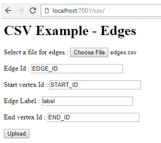
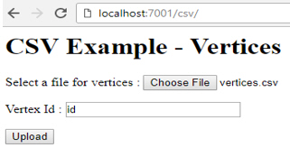
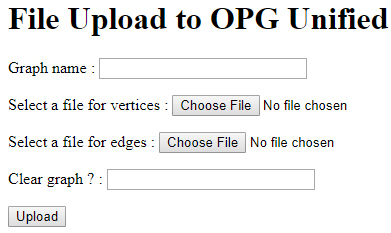
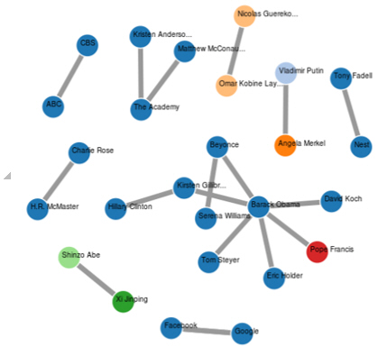

5 Using Property Graphs in a Big Data Environment
This chapter provides conceptual and usage information about creating, storing, and working with property graph data in a Big Data environment.
- About Property Graphs
Property graphs allow an easy association of properties (key-value pairs) with graph vertices and edges, and they enable analytical operations based on relationships across a massive set of data. - About Property Graph Data Formats
The following graph formats are supported. - Getting Started with Property Graphs
To get started with property graphs, follow these main steps. - Using Java APIs for Property Graph Data
Creating a property graph involves using the Java APIs to create the property graph and objects in it. - Managing Text Indexing for Property Graph Data
Indexes in Oracle Big Data Spatial and Graph allow fast retrieval of elements by a particular key/value or key/text pair. These indexes are created based on an element type (vertices or edges), a set of keys (and values), and an index type. - Querying Property Graph Data Using PGQL
Oracle Big Data Spatial and Graph supports a rich set of graph pattern matching capabilities. - Using Apache Spark with Property Graph Data
Apache Spark lets you process large amounts of data efficiently, and it comes with a set of libraries for processing data: SQL, MLlib, Spark Streaming, and DataFrames, Apache Spark can read data from different sources, such as HDFS, Oracle NoSQL Database, and Apache HBase. - Support for Secure Oracle NoSQL Database
Oracle Big Data Spatial and Graph property graph support works with both secure and non-secure Oracle NoSQL Database installations. This topic provides information about how to use property graph functions with a secure Oracle NoSQL Database setup. - Implementing Security on Graphs Stored in Apache HBase
Kerberos authentication is recommended for Apache HBase to secure property graphs in Oracle Big Data Spatial and Graph. - Using the Groovy Shell with Property Graph Data
The Oracle Big Data Spatial and Graph property graph support includes a built-in Groovy shell (based on the original Gremlin Groovy shell script). With this command-line shell interface, you can explore the Java APIs. - REST Support for Property Graph Data
A set of RESTful APIs exposes the Data Access Layer Java APIs through HTTP/REST protocols. - Exploring the Sample Programs
The software installation includes a directory of example programs, which you can use to learn about creating and manipulating property graphs. - Oracle Flat File Format Definition
A property graph can be defined in two flat files, specifically description files for the vertices and edges. - Example Python User Interface
The Oracle Big Data Spatial and Graph support for property graphs includes an example Python user interface. It can invoke a set of example Python scripts and modules that perform a variety of property graph operations. - Example iPython Notebooks User Interface
Support is provided for the following types of iPython Notebook shell interface to major property graph functions.
5.1 About Property Graphs
Property graphs allow an easy association of properties (key-value pairs) with graph vertices and edges, and they enable analytical operations based on relationships across a massive set of data.
Parent topic: Using Property Graphs in a Big Data Environment
5.1.1 What Are Property Graphs?
A property graph consists of a set of objects or vertices, and a set of arrows or edges connecting the objects. Vertices and edges can have multiple properties, which are represented as key-value pairs.
Each vertex has a unique identifier and can have:
-
A set of outgoing edges
-
A set of incoming edges
-
A collection of properties
Each edge has a unique identifier and can have:
-
An outgoing vertex
-
An incoming vertex
-
A text label that describes the relationship between the two vertices
-
A collection of properties
Figure 5-1 illustrates a very simple property graph with two vertices and one edge. The two vertices have identifiers 1 and 2. Both vertices have properties name and age. The edge is from the outgoing vertex 1 to the incoming vertex 2. The edge has a text label knows and a property type identifying the type of relationship between vertices 1 and 2.

Standards are not available for Big Data Spatial and Graph property graph data model, but it is similar to the W3C standards-based Resource Description Framework (RDF) graph data model. The property graph data model is simpler and much less precise than RDF. These differences make it a good candidate for use cases such as these:
-
Identifying influencers in a social network
-
Predicting trends and customer behavior
-
Discovering relationships based on pattern matching
-
Identifying clusters to customize campaigns
Note:
The property graph data model that Oracle supports at the database side does not allow labels for vertices. However, you can treat the value of a designated vertex property as one or more labels, as explained in Specifying Labels for Vertices.
Parent topic: About Property Graphs
5.1.2 What Is Big Data Support for Property Graphs?
Property graphs are supported for Big Data in Hadoop and in Oracle NoSQL Database. This support consists of a data access layer and an analytics layer. A choice of databases in Hadoop provides scalable and persistent storage management.
Figure 5-2 provides an overview of the Oracle property graph architecture.
Figure 5-2 Oracle Property Graph Architecture

Description of "Figure 5-2 Oracle Property Graph Architecture"
Parent topic: About Property Graphs
5.1.2.1 In-Memory Analyst
The in-memory analyst layer enables you to analyze property graphs using parallel in-memory execution. It provides over 35 analytic functions, including path calculation, ranking, community detection, and recommendations.
Parent topic: What Is Big Data Support for Property Graphs?
5.1.2.2 Data Access Layer
The data access layer provides a set of Java APIs that you can use to create and drop property graphs, add and remove vertices and edges, search for vertices and edges using key-value pairs, create text indexes, and perform other manipulations. The Java APIs include an implementation of TinkerPop Blueprints graph interfaces for the property graph data model. The APIs also integrate with the Apache Lucene and Apache SolrCloud, which are widely-adopted open-source text indexing and search engines.
Parent topic: What Is Big Data Support for Property Graphs?
5.1.2.3 Storage Management
You can store your property graphs in either Oracle NoSQL Database or Apache HBase. Both databases are mature and scalable, and support efficient navigation, querying, and analytics. Both use tables to model the vertices and edges of property graphs.
Parent topic: What Is Big Data Support for Property Graphs?
5.1.2.4 RESTful Web Services
You can also use RESTful web services to access the graph data and perform graph operations. For example, you can use the Linux curl command to obtain vertices and edges, and to add and remove graph elements.
Parent topic: What Is Big Data Support for Property Graphs?
5.2 About Property Graph Data Formats
The following graph formats are supported.
Parent topic: Using Property Graphs in a Big Data Environment
5.2.1 GraphML Data Format
The GraphML file format uses XML to describe graphs. Example 5-1 shows a GraphML description of the property graph shown in Figure 5-1.
Example 5-1 GraphML Description of a Simple Property Graph
<?xml version="1.0" encoding="UTF-8"?>
<graphml xmlns="http://graphml.graphdrawing.org/xmlns">
<key id="name" for="node" attr.name="name" attr.type="string"/>
<key id="age" for="node" attr.name="age" attr.type="int"/>
<key id="type" for="edge" attr.name="type" attr.type="string"/>
<graph id="PG" edgedefault="directed">
<node id="1">
<data key="name">Alice</data>
<data key="age">31</data>
</node>
<node id="2">
<data key="name">Bob</data>
<data key="age">27</data>
</node>
<edge id="3" source="1" target="2" label="knows">
<data key="type">friends</data>
</edge>
</graph>
</graphml>
Parent topic: About Property Graph Data Formats
5.2.2 GraphSON Data Format
The GraphSON file format is based on JavaScript Object Notation (JSON) for describing graphs. Example 5-2 shows a GraphSON description of the property graph shown in Figure 5-1.
See Also:
"GraphSON Reader and Writer Library" at
https://github.com/tinkerpop/blueprints/wiki/GraphSON-Reader-and-Writer-Library
Example 5-2 GraphSON Description of a Simple Property Graph
{
"graph": {
"mode":"NORMAL",
"vertices": [
{
"name": "Alice",
"age": 31,
"_id": "1",
"_type": "vertex"
},
{
"name": "Bob",
"age": 27,
"_id": "2",
"_type": "vertex"
}
],
"edges": [
{
"type": "friends",
"_id": "3",
"_type": "edge",
"_outV": "1",
"_inV": "2",
"_label": "knows"
}
]
}
}Parent topic: About Property Graph Data Formats
5.2.3 GML Data Format
The Graph Modeling Language (GML) file format uses ASCII to describe graphs. Example 5-3 shows a GML description of the property graph shown in Figure 5-1.
See Also:
"GML: A Portable Graph File Format" by Michael Himsolt at
Example 5-3 GML Description of a Simple Property Graph
graph [
comment "Simple property graph"
directed 1
IsPlanar 1
node [
id 1
label "1"
name "Alice"
age 31
]
node [
id 2
label "2"
name "Bob"
age 27
]
edge [
source 1
target 2
label "knows"
type "friends"
]
]Parent topic: About Property Graph Data Formats
5.2.4 Oracle Flat File Format
The Oracle flat file format exclusively describes property graphs. It is more concise and provides better data type support than the other file formats. The Oracle flat file format uses two files for a graph description, one for the vertices and one for edges. Commas separate the fields of the records.
Example 5-4 shows the Oracle flat files that describe the property graph shown in Figure 5-1.
See Also:
Example 5-4 Oracle Flat File Description of a Simple Property Graph
Vertex file:
1,name,1,Alice,, 1,age,2,,31, 2,name,1,Bob,, 2,age,2,,27,
Edge file:
1,1,2,knows,type,1,friends,,
Parent topic: About Property Graph Data Formats
5.3 Getting Started with Property Graphs
To get started with property graphs, follow these main steps.
Parent topic: Using Property Graphs in a Big Data Environment
5.4 Using Java APIs for Property Graph Data
Creating a property graph involves using the Java APIs to create the property graph and objects in it.
- Overview of the Java APIs
- Parallel Loading of Graph Data
A Java API is provided for performing parallel loading of graph data. - Opening and Closing a Property Graph Instance
- Creating Vertices
- Creating Edges
- Deleting Vertices and Edges
- Reading a Graph from a Database into an Embedded In-Memory Analyst
- Specifying Labels for Vertices
- Building an In-Memory Graph
- Dropping a Property Graph
Parent topic: Using Property Graphs in a Big Data Environment
5.4.1 Overview of the Java APIs
The Java APIs that you can use for property graphs include the following.
- Oracle Big Data Spatial and Graph Java APIs
- TinkerPop Blueprints Java APIs
- Apache Hadoop Java APIs
- Oracle NoSQL Database Java APIs
- Apache HBase Java APIs
Parent topic: Using Java APIs for Property Graph Data
5.4.1.1 Oracle Big Data Spatial and Graph Java APIs
Oracle Big Data Spatial and Graph property graph support provides database-specific APIs for Apache HBase and Oracle NoSQL Database. The data access layer API (oracle.pg.*) implements TinkerPop Blueprints APIs, text search, and indexing for property graphs stored in Oracle NoSQL Database and Apache HBase.
To use the Oracle Big Data Spatial and Graph API, import the classes into your Java program:
import oracle.pg.nosql.*; // or oracle.pg.hbase.*
import oracle.pgx.config.*;
import oracle.pgx.common.types.*;
Also include TinkerPop Blueprints Java APIs.
See Also:
Oracle Big Data Spatial and Graph Java API Reference
Parent topic: Overview of the Java APIs
5.4.1.2 TinkerPop Blueprints Java APIs
TinkerPop Blueprints supports the property graph data model. The API provides utilities for manipulating graphs, which you use primarily through the Big Data Spatial and Graph data access layer Java APIs.
To use the Blueprints APIs, import the classes into your Java program:
import com.tinkerpop.blueprints.Vertex; import com.tinkerpop.blueprints.Edge;
See Also:
"Blueprints: A Property Graph Model Interface API" at
http://www.tinkerpop.com/docs/javadocs/blueprints/2.3.0/index.html
Parent topic: Overview of the Java APIs
5.4.1.3 Apache Hadoop Java APIs
The Apache Hadoop Java APIs enable you to write your Java code as a MapReduce program that runs within the Hadoop distributed framework.
To use the Hadoop Java APIs, import the classes into your Java program. For example:
import org.apache.hadoop.conf.Configuration;
See Also:
"Apache Hadoop Main 2.5.0-cdh5.3.2 API" at
Parent topic: Overview of the Java APIs
5.4.1.4 Oracle NoSQL Database Java APIs
The Oracle NoSQL Database APIs enable you to create and populate a key-value (KV) store, and provide interfaces to Hadoop, Hive, and Oracle NoSQL Database.
To use Oracle NoSQL Database as the graph data store, import the classes into your Java program. For example:
import oracle.kv.*; import oracle.kv.table.TableOperation;
See Also:
"Oracle NoSQL Database Java API Reference" at
Parent topic: Overview of the Java APIs
5.4.1.5 Apache HBase Java APIs
The Apache HBase APIs enable you to create and manipulate key-value pairs.
To use HBase as the graph data store, import the classes into your Java program. For example:
import org.apache.hadoop.hbase.*; import org.apache.hadoop.hbase.client.*; import org.apache.hadoop.hbase.filter.*; import org.apache.hadoop.hbase.util.Bytes; import org.apache.hadoop.conf.Configuration;
See Also:
"HBase 0.98.6-cdh5.3.2 API" at
http://archive.cloudera.com/cdh5/cdh/5/hbase/apidocs/index.html?overview-summary.html
Parent topic: Overview of the Java APIs
5.4.2 Parallel Loading of Graph Data
A Java API is provided for performing parallel loading of graph data.
Given a set of vertex files (or input streams) and a set of edge files (or input streams), they can be split into multiple chunks and loaded into database in parallel. The number of chunks is determined by the degree of parallelism (DOP) specified by the user.
Parallelism is achieved with Splitter threads that split vertex and edge flat files into multiple chunks and Loader threads that load each chunk into the database using separate database connections. Java pipes are used to connect Splitter and Loader threads -- Splitter: PipedOutputStream and Loader: PipedInputStream.
The simplest usage of data loading API is specifying a property graph instance, one vertex file, one edge file, and a DOP.
The following example of the load process loads graph data stored in a vertices file and an edges file of the optimized Oracle flat file format, and executes the load with 48 degrees of parallelism.
opgdl = OraclePropertyGraphDataLoader.getInstance();
vfile = "../../data/connections.opv";
efile = "../../data/connections.ope";
opgdl.loadData(opg, vfile, efile, 48);- Parallel Data Loading Using Partitions
- Parallel Data Loading Using Fine-Tuning
- Parallel Data Loading Using Multiple Files
- Parallel Retrieval of Graph Data
- Using an Element Filter Callback for Subgraph Extraction
- Using Optimization Flags on Reads over Property Graph Data
- Adding and Removing Attributes of a Property Graph Subgraph
- Getting Property Graph Metadata
Parent topic: Using Java APIs for Property Graph Data
5.4.2.1 Parallel Data Loading Using Partitions
The data loading API allows loading the data into database using multiple partitions. This API requires the property graph, the vertex file, the edge file, the DOP, the total number of partitions, and the partition offset (from 0 to total number of partitions - 1). For example, to load the data using two partitions, the partition offsets should be 0 and 1. That is, there should be two data loading API calls to fully load the graph, and the only difference between the two API calls is the partition offset (0 and 1).
The following code fragment loads the graph data using 4 partitions. Each call to the data loader can be processed using a separate Java client, on a single system or from multiple systems.
OraclePropertyGraph opg = OraclePropertyGraph.getInstance(
args, szGraphName);
int totalPartitions = 4;
int dop= 32; // degree of parallelism for each client.
String szOPVFile = "../../data/connections.opv";
String szOPEFile = "../../data/connections.ope";
SimpleLogBasedDataLoaderListenerImpl dll = SimpleLogBasedDataLoaderListenerImpl.getInstance(100 /* frequency */,
true /* Continue on error */);
// Run the data loading using 4 partitions (Each call can be run from a
// separate Java Client)
// Partition 1
OraclePropertyGraphDataLoader opgdlP1 = OraclePropertyGraphDataLoader.getInstance();
opgdlP1.loadData(opg, szOPVFile, szOPEFile, dop,
4 /* Total number of partitions, default 1 */,
0 /* Partition to load (from 0 to totalPartitions - 1, default 0 */,
dll);
// Partition 2
OraclePropertyGraphDataLoader opgdlP2 = OraclePropertyGraphDataLoader.getInstance();
opgdlP2.loadData(opg, szOPVFile, szOPEFile, dop, 4 /* Total number of partitions, default 1 */,
1 /* Partition to load (from 0 to totalPartitions - 1, default 0 */, dll);
// Partition 3
OraclePropertyGraphDataLoader opgdlP3 = OraclePropertyGraphDataLoader.getInstance();
opgdlP3.loadData(opg, szOPVFile, szOPEFile, dop, 4 /* Total number of partitions, default 1 */,
2 /* Partition to load (from 0 to totalPartitions - 1, default 0 */, dll);
// Partition 4
OraclePropertyGraphDataLoader opgdlP4 = OraclePropertyGraphDataLoader.getInstance();
opgdlP4.loadData(opg, szOPVFile, szOPEFile, dop, 4 /* Total number of partitions, default 1 */,
3 /* Partition to load (from 0 to totalPartitions - 1, default 0 */, dll);
Parent topic: Parallel Loading of Graph Data
5.4.2.2 Parallel Data Loading Using Fine-Tuning
Data loading APIs also support fine-tuning those lines in the source vertex and edges files that are to be loaded. You can specify the vertex (or edge) offset line number and vertex (or edge) maximum line number. Data will be loaded from the offset line number until the maximum line number. If the maximum line number is -1, the loading process will scan the data until reaching the end of file.
The following code fragment loads the graph data using fine-tuning.
OraclePropertyGraph opg = OraclePropertyGraph.getInstance(
args, szGraphName);
int totalPartitions = 4;
int dop= 32; // degree of parallelism for each client.
String szOPVFile = "../../data/connections.opv";
String szOPEFile = "../../data/connections.ope";
SimpleLogBasedDataLoaderListenerImpl dll = SimpleLogBasedDataLoaderListenerImpl.getInstance(100 /* frequency */,
true /* Continue on error */);
// Run the data loading using fine tuning
long lVertexOffsetlines = 0;
long lEdgeOffsetlines = 0;
long lVertexMaxlines = 100;
long lEdgeMaxlines = 100;
int totalPartitions = 1;
int idPartition = 0;
OraclePropertyGraphDataLoader opgdl = OraclePropertyGraphDataLoader.getInstance();
opgdl.loadData(opg, szOPVFile, szOPEFile,
lVertexOffsetlines /* offset of lines to start loading
from partition, default 0*/,
lEdgeOffsetlines /* offset of lines to start loading
from partition, default 0*/,
lVertexMaxlines /* maximum number of lines to start loading
from partition, default -1 (all lines in partition)*/,
lEdgeMaxlines /* maximun number of lines to start loading
from partition, default -1 (all lines in partition)*/,
dop,
totalPartitions /* Total number of partitions, default 1 */,
idPartition /* Partition to load (from 0 to totalPartitions - 1,
default 0 */,
dll);
Parent topic: Parallel Loading of Graph Data
5.4.2.3 Parallel Data Loading Using Multiple Files
Oracle Big Data Spatial and Graph also support loading multiple vertex files and multiple edges files into database. The given multiple vertex files will be split into DOP chunks and loaded into database in parallel using DOP threads. Similarly, the multiple edge files will also be split and loaded in parallel.
The following code fragment loads multiple vertex fan and edge files using the parallel data loading APIs. In the example, two string arrays szOPVFiles and szOPEFiles are used to hold the input files; Although only one vertex file and one edge file is used in this example, you can supply multiple vertex files and multiple edge files in these two arrays.
OraclePropertyGraph opg = OraclePropertyGraph.getInstance(
args, szGraphName);
String[] szOPVFiles = new String[] {"../../data/connections.opv"};
String[] szOPEFiles = new String[] {"../../data/connections.ope"};
// Clear existing vertices/edges in the property graph
opg.clearRepository();
opg.setQueueSize(100); // 100 elements
// This object will handle parallel data loading over the property graph
OraclePropertyGraphDataLoader opgdl = OraclePropertyGraphDataLoader.getInstance();
opgdl.loadData(opg, szOPVFiles, szOPEFiles, dop);
System.out.println("Total vertices: " + opg.countVertices());
System.out.println("Total edges: " + opg.countEdges());
Parent topic: Parallel Loading of Graph Data
5.4.2.4 Parallel Retrieval of Graph Data
The parallel property graph query provides a simple Java API to perform parallel scans on vertices (or edges). Parallel retrieval is an optimized solution taking advantage of the distribution of the data among splits with the back-end database, so each split is queried using separate database connections.
Parallel retrieval will produce an array where each element holds all the vertices (or edges) from a specific split. The subset of shards queried will be separated by the given start split ID and the size of the connections array provided. This way, the subset will consider splits in the range of [start, start - 1 + size of connections array]. Note that an integer ID (in the range of [0, N - 1]) is assigned to all the splits in the vertex table with N splits.
The following code loads a property graph using Apache HBase, opens an array of connections, and executes a parallel query to retrieve all vertices and edges using the opened connections. The number of calls to the getVerticesPartitioned (getEdgesPartitioned) method is controlled by the total number of splits and the number of connections used.
OraclePropertyGraph opg = OraclePropertyGraph.getInstance(
args, szGraphName);
// Clear existing vertices/edges in the property graph
opg.clearRepository();
String szOPVFile = "../../data/connections.opv";
String szOPEFile = "../../data/connections.ope";
// This object will handle parallel data loading
OraclePropertyGraphDataLoader opgdl = OraclePropertyGraphDataLoader.getInstance();
opgdl.loadData(opg, szOPVFile, szOPEFile, dop);
// Create connections used in parallel query
HConnection[] hConns= new HConnection[dop];
for (int i = 0; i < dop; i++) {
Configuration conf_new =
HBaseConfiguration.create(opg.getConfiguration());
hConns[i] = HConnectionManager.createConnection(conf_new);
}
long lCountV = 0;
// Iterate over all the vertices’ splits to count all the vertices
for (int split = 0; split < opg.getVertexTableSplits();
split += dop) {
Iterable<Vertex>[] iterables
= opg.getVerticesPartitioned(hConns /* Connection array */,
true /* skip store to cache */,
split /* starting split */);
lCountV += consumeIterables(iterables); /* consume iterables using
threads */
}
// Count all vertices
System.out.println("Vertices found using parallel query: " + lCountV);
long lCountE = 0;
// Iterate over all the edges’ splits to count all the edges
for (int split = 0; split < opg.getEdgeTableSplits();
split += dop) {
Iterable<Edge>[] iterables
= opg.getEdgesPartitioned(hConns /* Connection array */,
true /* skip store to cache */,
split /* starting split */);
lCountE += consumeIterables(iterables); /* consume iterables using
threads */
}
// Count all edges
System.out.println("Edges found using parallel query: " + lCountE);
// Close the connections to the database after completed
for (int idx = 0; idx < hConns.length; idx++) {
hConns[idx].close();
}
To load a property graph using Oracle NoSQL Database connections instead of Apache HBase, you should use the following code:
// Create connections used in parallel query
hConns = new KVStoreConfig[dop];
kvsc = opg.getKVStoreConfig();
for (i = 0; i < dop; i++) {hConns[i] = kvsc.clone(); }
opg.setNumSplits(dop);
Parent topic: Parallel Loading of Graph Data
5.4.2.5 Using an Element Filter Callback for Subgraph Extraction
Oracle Big Data Spatial and Graph provides support for an easy subgraph extraction using user-defined element filter callbacks. An element filter callback defines a set of conditions that a vertex (or an edge) must meet in order to keep it in the subgraph. Users can define their own element filtering by implementing the VertexFilterCallback and EdgeFilterCallback API interfaces.
The following code fragment implements a VertexFilterCallback that validates if a vertex does not have a political role and its origin is the United States.
/**
* VertexFilterCallback to retrieve a vertex from the United States
* that does not have a political role
*/
private static class NonPoliticianFilterCallback
implements VertexFilterCallback
{
@Override
public boolean keepVertex(OracleVertexBase vertex)
{
String country = vertex.getProperty("country");
String role = vertex.getProperty("role");
if (country != null && country.equals("United States")) {
if (role == null || !role.toLowerCase().contains("political")) {
return true;
}
}
return false;
}
public static NonPoliticianFilterCallback getInstance()
{
return new NonPoliticianFilterCallback();
}
}
The following code fragment implements an EdgeFilterCallback that uses the VertexFilterCallback to keep only edges connected to the given input vertex, and whose connections are not politicians and come from the United States.
/**
* EdgeFilterCallback to retrieve all edges connected to an input
* vertex with "collaborates" label, and whose vertex is from the
* United States with a role different than political
*/
private static class CollaboratorsFilterCallback
implements EdgeFilterCallback
{
private VertexFilterCallback m_vfc;
private Vertex m_startV;
public CollaboratorsFilterCallback(VertexFilterCallback vfc,
Vertex v)
{
m_vfc = vfc;
m_startV = v;
}
@Override
public boolean keepEdge(OracleEdgeBase edge)
{
if ("collaborates".equals(edge.getLabel())) {
if (edge.getVertex(Direction.IN).equals(m_startV) &&
m_vfc.keepVertex((OracleVertex)
edge.getVertex(Direction.OUT))) {
return true;
}
else if (edge.getVertex(Direction.OUT).equals(m_startV) &&
m_vfc.keepVertex((OracleVertex)
edge.getVertex(Direction.IN))) {
return true;
}
}
return false;
}
public static CollaboratorsFilterCallback
getInstance(VertexFilterCallback vfc, Vertex v)
{
return new CollaboratorsFilterCallback(vfc, v);
}
}
Using the filter callbacks previously defined, the following code fragment loads a property graph, creates an instance of the filter callbacks and later gets all of Barack Obama’s collaborators who are not politicians and come from the United States.
OraclePropertyGraph opg = OraclePropertyGraph.getInstance( args, szGraphName); // Clear existing vertices/edges in the property graph opg.clearRepository(); String szOPVFile = "../../data/connections.opv"; String szOPEFile = "../../data/connections.ope"; // This object will handle parallel data loading OraclePropertyGraphDataLoader opgdl = OraclePropertyGraphDataLoader.getInstance(); opgdl.loadData(opg, szOPVFile, szOPEFile, dop); // VertexFilterCallback to retrieve all people from the United States // who are not politicians NonPoliticianFilterCallback npvfc = NonPoliticianFilterCallback.getInstance(); // Initial vertex: Barack Obama Vertex v = opg.getVertices("name", "Barack Obama").iterator().next(); // EdgeFilterCallback to retrieve all collaborators of Barack Obama // from the United States who are not politicians CollaboratorsFilterCallback cefc = CollaboratorsFilterCallback.getInstance(npvfc, v); Iterable<<Edge> obamaCollabs = opg.getEdges((String[])null /* Match any of the properties */, cefc /* Match the EdgeFilterCallback */ ); Iterator<<Edge> iter = obamaCollabs.iterator(); System.out.println("\n\n--------Collaborators of Barack Obama from " + " the US and non-politician\n\n"); long countV = 0; while (iter.hasNext()) { Edge edge = iter.next(); // get the edge // check if obama is the IN vertex if (edge.getVertex(Direction.IN).equals(v)) { System.out.println(edge.getVertex(Direction.OUT) + "(Edge ID: " + edge.getId() + ")"); // get out vertex } else { System.out.println(edge.getVertex(Direction.IN)+ "(Edge ID: " + edge.getId() + ")"); // get in vertex } countV++; }
By default, all reading operations such as get all vertices, get all edges (and parallel approaches) will use the filter callbacks associated with the property graph using the methods opg.setVertexFilterCallback(vfc) and opg.setEdgeFilterCallback(efc). If there is no filter callback set, then all the vertices (or edges) and edges will be retrieved.
The following code fragment uses the default edge filter callback set on the property graph to retrieve the edges.
// VertexFilterCallback to retrieve all people from the United States // who are not politicians NonPoliticianFilterCallback npvfc = NonPoliticianFilterCallback.getInstance(); // Initial vertex: Barack Obama Vertex v = opg.getVertices("name", "Barack Obama").iterator().next(); // EdgeFilterCallback to retrieve all collaborators of Barack Obama // from the United States who are not politicians CollaboratorsFilterCallback cefc = CollaboratorsFilterCallback.getInstance(npvfc, v); opg.setEdgeFilterCallback(cefc); Iterable<Edge> obamaCollabs = opg.getEdges(); Iterator<Edge> iter = obamaCollabs.iterator(); System.out.println("\n\n--------Collaborators of Barack Obama from " + " the US and non-politician\n\n"); long countV = 0; while (iter.hasNext()) { Edge edge = iter.next(); // get the edge // check if obama is the IN vertex if (edge.getVertex(Direction.IN).equals(v)) { System.out.println(edge.getVertex(Direction.OUT) + "(Edge ID: " + edge.getId() + ")"); // get out vertex } else { System.out.println(edge.getVertex(Direction.IN)+ "(Edge ID: " + edge.getId() + ")"); // get in vertex } countV++; }
Parent topic: Parallel Loading of Graph Data
5.4.2.6 Using Optimization Flags on Reads over Property Graph Data
Optimization flags can improve graph iteration performance. Optimization flags allow processing vertices or edges as objects with no or minimal information, such as ID, label, and incoming/outgoing vertices. This way, the time required to process each vertex or edge during iteration is reduced.
The following table shows the optimization flags available when processing vertices or edges in a property graph.
Table 5-1 Optimization Flags for Processing Vertices or Edges in a Property Graph
| Optimization Flag | Description |
|---|---|
| DO_NOT_CREATE_OBJECT | Use a predefined constant object when processing vertices or edges. |
| JUST_EDGE_ID | Construct edge objects with ID only when processing edges. |
| JUST_LABEL_EDGE_ID | Construct edge objects with ID and label only when processing edges. |
| JUST_LABEL_VERTEX_EDGE_ID | Construct edge objects with ID, label, and in/out vertex IDs only when processing edges |
| JUST_VERTEX_EDGE_ID | Construct edge objects with just ID and in/out vertex IDs when processing edges. |
| JUST_VERTEX_ID | Construct vertex objects with ID only when processing vertices. |
The following code fragment uses a set of optimization flags to retrieve only all the IDs from the vertices and edges in the property graph. The objects retrieved by reading all vertices and edges will include only the IDs and no Key/Value properties or additional information.
import oracle.pg.common.OraclePropertyGraphBase.OptimizationFlag; OraclePropertyGraph opg = OraclePropertyGraph.getInstance( args, szGraphName); // Clear existing vertices/edges in the property graph opg.clearRepository(); String szOPVFile = "../../data/connections.opv"; String szOPEFile = "../../data/connections.ope"; // This object will handle parallel data loading OraclePropertyGraphDataLoader opgdl = OraclePropertyGraphDataLoader.getInstance(); opgdl.loadData(opg, szOPVFile, szOPEFile, dop); // Optimization flag to retrieve only vertices IDs OptimizationFlag optFlagVertex = OptimizationFlag.JUST_VERTEX_ID; // Optimization flag to retrieve only edges IDs OptimizationFlag optFlagEdge = OptimizationFlag.JUST_EDGE_ID; // Print all vertices Iterator<Vertex> vertices = opg.getVertices((String[])null /* Match any of the properties */, null /* Match the VertexFilterCallback */, optFlagVertex /* optimization flag */ ).iterator(); System.out.println("----- Vertices IDs----"); long vCount = 0; while (vertices.hasNext()) { OracleVertex v = vertices.next(); System.out.println((Long) v.getId()); vCount++; } System.out.println("Vertices found: " + vCount); // Print all edges Iterator<Edge> edges = opg.getEdges((String[])null /* Match any of the properties */, null /* Match the EdgeFilterCallback */, optFlagEdge /* optimization flag */ ).iterator(); System.out.println("----- Edges ----"); long eCount = 0; while (edges.hasNext()) { Edge e = edges.next(); System.out.println((Long) e.getId()); eCount++; } System.out.println("Edges found: " + eCount);
By default, all reading operations such as get all vertices, get all edges (and parallel approaches) will use the optimization flag associated with the property graph using the method opg.setDefaultVertexOptFlag(optFlagVertex) and opg.setDefaultEdgeOptFlag(optFlagEdge). If the optimization flags for processing vertices and edges are not defined, then all the information about the vertices and edges will be retrieved.
The following code fragment uses the default optimization flags set on the property graph to retrieve only all the IDs from its vertices and edges.
import oracle.pg.common.OraclePropertyGraphBase.OptimizationFlag; // Optimization flag to retrieve only vertices IDs OptimizationFlag optFlagVertex = OptimizationFlag.JUST_VERTEX_ID; // Optimization flag to retrieve only edges IDs OptimizationFlag optFlagEdge = OptimizationFlag.JUST_EDGE_ID; opg.setDefaultVertexOptFlag(optFlagVertex); opg.setDefaultEdgeOptFlag(optFlagEdge); Iterator<Vertex> vertices = opg.getVertices().iterator(); System.out.println("----- Vertices IDs----"); long vCount = 0; while (vertices.hasNext()) { OracleVertex v = vertices.next(); System.out.println((Long) v.getId()); vCount++; } System.out.println("Vertices found: " + vCount); // Print all edges Iterator<Edge> edges = opg.getEdges().iterator(); System.out.println("----- Edges ----"); long eCount = 0; while (edges.hasNext()) { Edge e = edges.next(); System.out.println((Long) e.getId()); eCount++; } System.out.println("Edges found: " + eCount);
Parent topic: Parallel Loading of Graph Data
5.4.2.7 Adding and Removing Attributes of a Property Graph Subgraph
Oracle Big Data Spatial and Graph supports updating attributes (key/value pairs) to a subgraph of vertices and/or edges by using a user-customized operation callback. An operation callback defines a set of conditions that a vertex (or an edge) must meet in order to update it (either add or remove the given attribute and value).
You can define your own attribute operations by implementing the VertexOpCallback and EdgeOpCallback API interfaces. You must override the needOp method, which defines the conditions to be satisfied by the vertices (or edges) to be included in the update operation, as well as the getAttributeKeyName and getAttributeKeyValue methods, which return the key name and value, respectively, to be used when updating the elements.
The following code fragment implements a VertexOpCallback that operates over the obamaCollaborator attribute associated only with Barack Obama collaborators. The value of this property is specified based on the role of the collaborators.
private static class CollaboratorsVertexOpCallback implements VertexOpCallback { private OracleVertexBase m_obama; private List<Vertex> m_obamaCollaborators; public CollaboratorsVertexOpCallback(OraclePropertyGraph opg) { // Get a list of Barack Obama'sCollaborators m_obama = (OracleVertexBase) opg.getVertices("name", "Barack Obama") .iterator().next(); Iterable<Vertex> iter = m_obama.getVertices(Direction.BOTH, "collaborates"); m_obamaCollaborators = OraclePropertyGraphUtils.listify(iter); } public static CollaboratorsVertexOpCallback getInstance(OraclePropertyGraph opg) { return new CollaboratorsVertexOpCallback(opg); } /** * Add attribute if and only if the vertex is a collaborator of Barack * Obama */ @Override public boolean needOp(OracleVertexBase v) { return m_obamaCollaborators != null && m_obamaCollaborators.contains(v); } @Override public String getAttributeKeyName(OracleVertexBase v) { return "obamaCollaborator"; } /** * Define the property's value based on the vertex role */ @Override public Object getAttributeKeyValue(OracleVertexBase v) { String role = v.getProperty("role"); role = role.toLowerCase(); if (role.contains("political")) { return "political"; } else if (role.contains("actor") || role.contains("singer") || role.contains("actress") || role.contains("writer") || role.contains("producer") || role.contains("director")) { return "arts"; } else if (role.contains("player")) { return "sports"; } else if (role.contains("journalist")) { return "journalism"; } else if (role.contains("business") || role.contains("economist")) { return "business"; } else if (role.contains("philant")) { return "philanthropy"; } return " "; } }
The following code fragment implements an EdgeOpCallback that operates over the obamaFeud attribute associated only with Barack Obama feuds. The value of this property is specified based on the role of the collaborators.
private static class FeudsEdgeOpCallback implements EdgeOpCallback { private OracleVertexBase m_obama; private List<Edge> m_obamaFeuds; public FeudsEdgeOpCallback(OraclePropertyGraph opg) { // Get a list of Barack Obama's feuds m_obama = (OracleVertexBase) opg.getVertices("name", "Barack Obama") .iterator().next(); Iterable<Edge> iter = m_obama.getEdges(Direction.BOTH, "feuds"); m_obamaFeuds = OraclePropertyGraphUtils.listify(iter); } public static FeudsEdgeOpCallback getInstance(OraclePropertyGraph opg) { return new FeudsEdgeOpCallback(opg); } /** * Add attribute if and only if the edge is in the list of Barack Obama's * feuds */ @Override public boolean needOp(OracleEdgeBase e) { return m_obamaFeuds != null && m_obamaFeuds.contains(e); } @Override public String getAttributeKeyName(OracleEdgeBase e) { return "obamaFeud"; } /** * Define the property's value based on the in/out vertex role */ @Override public Object getAttributeKeyValue(OracleEdgeBase e) { OracleVertexBase v = (OracleVertexBase) e.getVertex(Direction.IN); if (m_obama.equals(v)) { v = (OracleVertexBase) e.getVertex(Direction.OUT); } String role = v.getProperty("role"); role = role.toLowerCase(); if (role.contains("political")) { return "political"; } else if (role.contains("actor") || role.contains("singer") || role.contains("actress") || role.contains("writer") || role.contains("producer") || role.contains("director")) { return "arts"; } else if (role.contains("journalist")) { return "journalism"; } else if (role.contains("player")) { return "sports"; } else if (role.contains("business") || role.contains("economist")) { return "business"; } else if (role.contains("philanthropist")) { return "philanthropy"; } return " "; } }
Using the operations callbacks defined previously, the following code fragment loads a property graph, creates an instance of the operation callbacks, and later adds the attributes into the pertinent vertices and edges using the addAttributeToAllVertices and addAttributeToAllEdges methods in OraclePropertyGraph.
OraclePropertyGraph opg = OraclePropertyGraph.getInstance( args, szGraphName); // Clear existing vertices/edges in the property graph opg.clearRepository(); String szOPVFile = "../../data/connections.opv"; String szOPEFile = "../../data/connections.ope"; // This object will handle parallel data loading OraclePropertyGraphDataLoader opgdl = OraclePropertyGraphDataLoader.getInstance(); opgdl.loadData(opg, szOPVFile, szOPEFile, dop); // Create the vertex operation callback CollaboratorsVertexOpCallback cvoc = CollaboratorsVertexOpCallback.getInstance(opg); // Add attribute to all people collaborating with Obama based on their role opg.addAttributeToAllVertices(cvoc, true /** Skip store to Cache */, dop); // Look up for all collaborators of Obama // The function getVerticesAsString prints the vertices in the given iterable Iterable<Vertex> collaborators = opg.getVertices("obamaCollaborator", "political"); System.out.println("Political collaborators of Barack Obama " + getVerticesAsString(collaborators)); collaborators = opg.getVertices("obamaCollaborator", "business"); System.out.println("Business collaborators of Barack Obama " + getVerticesAsString(collaborators)); // Add an attribute to all people having a feud with Barack Obama to set // the type of relation they have FeudsEdgeOpCallback feoc = FeudsEdgeOpCallback.getInstance(opg); opg.addAttributeToAllEdges(feoc, true /** Skip store to Cache */, dop); // Look up for all feuds of Obama // The function getEdgesAsString prints the edges in the given iterable Iterable<Edge> feuds = opg.getEdges("obamaFeud", "political"); System.out.println("\n\nPolitical feuds of Barack Obama " + getEdgesAsString(feuds)); feuds = opg.getEdges("obamaFeud", "business"); System.out.println("Business feuds of Barack Obama " + getEdgesAsString(feuds));
The following code fragment defines an implementation of VertexOpCallback that can be used to remove vertices having value philanthropy for attribute obamaCollaborator, then call the API removeAttributeFromAllVertices; It also defines an implementation of EdgeOpCallback that can be used to remove edges having value business for attribute obamaFeud, then call the API removeAttributeFromAllEdges.
System.out.println("\n\nRemove 'obamaCollaborator' property from all the" +
"philanthropy collaborators");
PhilanthropyCollaboratorsVertexOpCallback pvoc = PhilanthropyCollaboratorsVertexOpCallback.getInstance();
opg.removeAttributeFromAllVertices(pvoc);
System.out.println("\n\nRemove 'obamaFeud' property from all the" + "business feuds");
BusinessFeudsEdgeOpCallback beoc = BusinessFeudsEdgeOpCallback.getInstance();
opg.removeAttributeFromAllEdges(beoc);
/**
* Implementation of a EdgeOpCallback to remove the "obamaCollaborators"
* property from all people collaborating with Barack Obama that have a
* philanthropy role
*/
private static class PhilanthropyCollaboratorsVertexOpCallback implements VertexOpCallback
{
public static PhilanthropyCollaboratorsVertexOpCallback getInstance()
{
return new PhilanthropyCollaboratorsVertexOpCallback();
}
/**
* Remove attribute if and only if the property value for
* obamaCollaborator is Philanthropy
*/
@Override
public boolean needOp(OracleVertexBase v)
{
String type = v.getProperty("obamaCollaborator");
return type != null && type.equals("philanthropy");
}
@Override
public String getAttributeKeyName(OracleVertexBase v)
{
return "obamaCollaborator";
}
/**
* Define the property's value. In this case can be empty
*/
@Override
public Object getAttributeKeyValue(OracleVertexBase v)
{
return " ";
}
}
/**
* Implementation of a EdgeOpCallback to remove the "obamaFeud" property
* from all connections in a feud with Barack Obama that have a business role
*/
private static class BusinessFeudsEdgeOpCallback implements EdgeOpCallback
{
public static BusinessFeudsEdgeOpCallback getInstance()
{
return new BusinessFeudsEdgeOpCallback();
}
/**
* Remove attribute if and only if the property value for obamaFeud is
* business
*/
@Override
public boolean needOp(OracleEdgeBase e)
{
String type = e.getProperty("obamaFeud");
return type != null && type.equals("business");
}
@Override
public String getAttributeKeyName(OracleEdgeBase e)
{
return "obamaFeud";
}
/**
* Define the property's value. In this case can be empty
*/
@Override
public Object getAttributeKeyValue(OracleEdgeBase e)
{
return " ";
}
}
Parent topic: Parallel Loading of Graph Data
5.4.2.8 Getting Property Graph Metadata
You can get graph metadata and statistics, such as all graph names in the database; for each graph, getting the minimum/maximum vertex ID, the minimum/maximum edge ID, vertex property names, edge property names, number of splits in graph vertex, and the edge table that supports parallel table scans.
The following code fragment gets the metadata and statistics of the existing property graphs stored in the back-end database (either Oracle NoSQL Database or Apache HBase). The arguments required vary for each database.
// Get all graph names in the database
List<String> graphNames = OraclePropertyGraphUtils.getGraphNames(dbArgs);
for (String graphName : graphNames) {
OraclePropertyGraph opg = OraclePropertyGraph.getInstance(args,
graphName);
System.err.println("\n Graph name: " + graphName);
System.err.println(" Total vertices: " +
opg.countVertices(dop));
System.err.println(" Minimum Vertex ID: " +
opg.getMinVertexID(dop));
System.err.println(" Maximum Vertex ID: " +
opg.getMaxVertexID(dop));
// The function getPropertyNamesAsString prints the given set of properties
Set<String> propertyNamesV = new HashSet<String>();
opg.getVertexPropertyNames(dop, 0 /* timeout,0 no timeout */,
propertyNamesV);
System.err.println(" Vertices property names: " +
getPropertyNamesAsString(propertyNamesV));
System.err.println("\n\n Total edges: " + opg.countEdges(dop));
System.err.println(" Minimum Edge ID: " + opg.getMinEdgeID(dop));
System.err.println(" Maximum Edge ID: " + opg.getMaxEdgeID(dop));
Set<String> propertyNamesE = new HashSet<String>();
opg.getEdgePropertyNames(dop, 0 /* timeout,0 no timeout */,
propertyNamesE);
System.err.println(" Edge property names: " +
getPropertyNamesAsString(propertyNamesE));
System.err.println("\n\n Table Information: ");
System.err.println("Vertex table number of splits: " +
(opg.getVertexTableSplits()));
System.err.println("Edge table number of splits: " +
(opg.getEdgeTableSplits()));
}Parent topic: Parallel Loading of Graph Data
5.4.3 Opening and Closing a Property Graph Instance
When describing a property graph, use these Oracle Property Graph classes to open and close the property graph instance properly:
-
OraclePropertyGraph.getInstance: Opens an instance of an Oracle property graph. This method has two parameters, the connection information and the graph name. The format of the connection information depends on whether you use HBase or Oracle NoSQL Database as the backend database. -
OraclePropertyGraph.clearRepository: Removes all vertices and edges from the property graph instance. -
OraclePropertyGraph.shutdown: Closes the graph instance.
In addition, you must use the appropriate classes from the Oracle NoSQL Database or HBase APIs.
Parent topic: Using Java APIs for Property Graph Data
5.4.3.1 Using Oracle NoSQL Database
For Oracle NoSQL Database, the OraclePropertyGraph.getInstance method uses the KV store name, host computer name, and port number for the connection:
String kvHostPort = "cluster02:5000"; String kvStoreName = "kvstore"; String kvGraphName = "my_graph"; // Use NoSQL Java API KVStoreConfig kvconfig = new KVStoreConfig(kvStoreName, kvHostPort); OraclePropertyGraph opg = OraclePropertyGraph.getInstance(kvconfig, kvGraphName); opg.clearRepository(); // . // . Graph description // . // Close the graph instance opg.shutdown();
If the in-memory analyst functions are required for your application, then it is recommended that you use GraphConfigBuilder to create a graph config for Oracle NoSQL Database, and instantiates OraclePropertyGraph with the config as an argument.
As an example, the following code snippet constructs a graph config, gets an OraclePropertyGraph instance, loads some data into that graph, and gets an in-memory analyst.
import oracle.pgx.config.*;
import oracle.pgx.api.*;
import oracle.pgx.common.types.*;
...
String[] hhosts = new String[1];
hhosts[0] = "my_host_name:5000"; // need customization
String szStoreName = "kvstore"; // need customization
String szGraphName = "my_graph";
int dop = 8;
PgNosqlGraphConfig cfg = GraphConfigBuilder.forPropertyGraphNosql()
.setName(szGraphName)
.setHosts(Arrays.asList(hhosts))
.setStoreName(szStoreName)
.addEdgeProperty("lbl", PropertyType.STRING, "lbl")
.addEdgeProperty("weight", PropertyType.DOUBLE, "1000000")
.build();
OraclePropertyGraph opg = OraclePropertyGraph.getInstance(cfg);
String szOPVFile = "../../data/connections.opv";
String szOPEFile = "../../data/connections.ope";
// perform a parallel data load
OraclePropertyGraphDataLoader opgdl = OraclePropertyGraphDataLoader.getInstance();
opgdl.loadData(opg, szOPVFile, szOPEFile, dop);
...
PgxSession session = Pgx.createSession("session-id-1");
PgxGraph g = session.readGraphWithProperties(cfg);
Analyst analyst = session.createAnalyst();
...
Parent topic: Opening and Closing a Property Graph Instance
5.4.3.2 Using Apache HBase
For Apache HBase, the OraclePropertyGraph.getInstance method uses the Hadoop nodes and the Apache HBase port number for the connection:
String hbQuorum = "bda01node01.example.com, bda01node02.example.com, bda01node03.example.com";
String hbClientPort = "2181"
String hbGraphName = "my_graph";
// Use HBase Java APIs
Configuration conf = HBaseConfiguration.create();
conf.set("hbase.zookeeper.quorum", hbQuorum);
conf.set("hbase.zookeper.property.clientPort", hbClientPort);
HConnection conn = HConnectionManager.createConnection(conf);
// Open the property graph
OraclePropertyGraph opg = OraclePropertyGraph.getInstance(conf, conn, hbGraphName);
opg.clearRepository();
// .
// . Graph description
// .
// Close the graph instance
opg.shutdown();
// Close the HBase connection
conn.close();
If the in-memory analyst functions are required for your application, then it is recommended that you use GraphConfigBuilder to create a graph config, and instantiates OraclePropertyGraph with the config as an argument.
As an example, the following code snippet sets the configuration for in memory analytics, constructs a graph config for Apache HBase, instantiates an OraclePropertyGraph instance, gets an in-memory analyst, and counts the number of triangles in the graph.
confPgx = new HashMap<PgxConfig.Field, Object>();
confPgx.put(PgxConfig.Field.ENABLE_GM_COMPILER, false);
confPgx.put(PgxConfig.Field.NUM_WORKERS_IO, dop + 2);
confPgx.put(PgxConfig.Field.NUM_WORKERS_ANALYSIS, 8); // <= # of physical cores
confPgx.put(PgxConfig.Field.NUM_WORKERS_FAST_TRACK_ANALYSIS, 2);
confPgx.put(PgxConfig.Field.SESSION_TASK_TIMEOUT_SECS, 0);// no timeout set
confPgx.put(PgxConfig.Field.SESSION_IDLE_TIMEOUT_SECS, 0); // no timeout set
ServerInstance instance = Pgx.getInstance();
instance.startEngine(confPgx);
int iClientPort = Integer.parseInt(hbClientPort);
int splitsPerRegion = 2;
PgHbaseGraphConfig cfg = GraphConfigBuilder.forPropertyGraphHbase()
.setName(hbGraphName)
.setZkQuorum(hbQuorum)
.setZkClientPort(iClientPort)
.setZkSessionTimeout(60000)
.setMaxNumConnections(dop)
.setSplitsPerRegion(splitsPerRegion)
.addEdgeProperty("lbl", PropertyType.STRING, "lbl")
.addEdgeProperty("weight", PropertyType.DOUBLE, "1000000")
.build();
PgxSession session = Pgx.createSession("session-id-1");
PgxGraph g = session.readGraphWithProperties(cfg);
Analyst analyst = session.createAnalyst();
long triangles = analyst.countTriangles(g, false);
Parent topic: Opening and Closing a Property Graph Instance
5.4.4 Creating Vertices
To create a vertex, use these Oracle Property Graph methods:
-
OraclePropertyGraph.addVertex: Adds a vertex instance to a graph. -
OracleVertex.setProperty: Assigns a key-value property to a vertex. -
OraclePropertyGraph.commit: Saves all changes to the property graph instance.
The following code fragment creates two vertices named V1 and V2, with properties for age, name, weight, height, and sex in the opg property graph instance. The v1 properties set the data types explicitly.
// Create vertex v1 and assign it properties as key-value pairs
Vertex v1 = opg.addVertex(1l);
v1.setProperty("age", Integer.valueOf(31));
v1.setProperty("name", "Alice");
v1.setProperty("weight", Float.valueOf(135.0f));
v1.setProperty("height", Double.valueOf(64.5d));
v1.setProperty("female", Boolean.TRUE);
Vertex v2 = opg.addVertex(2l);
v2.setProperty("age", 27);
v2.setProperty("name", "Bob");
v2.setProperty("weight", Float.valueOf(156.0f));
v2.setProperty("height", Double.valueOf(69.5d));
v2.setProperty("female", Boolean.FALSE); Parent topic: Using Java APIs for Property Graph Data
5.4.5 Creating Edges
To create an edge, use these Oracle Property Graph methods:
-
OraclePropertyGraph.addEdge: Adds an edge instance to a graph. -
OracleEdge.setProperty: Assigns a key-value property to an edge.
The following code fragment creates two vertices (v1 and v2) and one edge (e1).
// Add vertices v1 and v2
Vertex v1 = opg.addVertex(1l);
v1.setProperty("name", "Alice");
v1.setProperty("age", 31);
Vertex v2 = opg.addVertex(2l);
v2.setProperty("name", "Bob");
v2.setProperty("age", 27);
// Add edge e1
Edge e1 = opg.addEdge(1l, v1, v2, "knows");
e1.setProperty("type", "friends");Parent topic: Using Java APIs for Property Graph Data
5.4.6 Deleting Vertices and Edges
You can remove vertex and edge instances individually, or all of them simultaneously. Use these methods:
-
OraclePropertyGraph.removeEdge: Removes the specified edge from the graph. -
OraclePropertyGraph.removeVertex: Removes the specified vertex from the graph. -
OraclePropertyGraph.clearRepository: Removes all vertices and edges from the property graph instance.
The following code fragment removes edge e1 and vertex v1 from the graph instance. The adjacent edges will also be deleted from the graph when removing a vertex. This is because every edge must have an beginning and ending vertex. After removing the beginning or ending vertex, the edge is no longer a valid edge.
// Remove edge e1 opg.removeEdge(e1); // Remove vertex v1 opg.removeVertex(v1);
The OraclePropertyGraph.clearRepository method can be used to remove all contents from an OraclePropertyGraph instance. However, use it with care because this action cannot be reversed.
Parent topic: Using Java APIs for Property Graph Data
5.4.7 Reading a Graph from a Database into an Embedded In-Memory Analyst
You can read a graph from Apache HBase or Oracle NoSQL Database into an in-memory analyst that is embedded in the same client Java application (a single JVM). For the following Apache HBase example:
-
A correct
java.io.tmpdirsetting is required. -
dop + 2is a workaround for a performance issue before Release 1.1.2. Effective with Release 1.1.2, you can instead specify adopvalue directly in the configuration settings.
int dop = 8; // need customization
Map<PgxConfig.Field, Object> confPgx = new HashMap<PgxConfig.Field, Object>();
confPgx.put(PgxConfig.Field.ENABLE_GM_COMPILER, false);
confPgx.put(PgxConfig.Field.NUM_WORKERS_IO, dop + 2); // use dop directly with release 1.1.2 or newer
confPgx.put(PgxConfig.Field.NUM_WORKERS_ANALYSIS, dop); // <= # of physical cores
confPgx.put(PgxConfig.Field.NUM_WORKERS_FAST_TRACK_ANALYSIS, 2);
confPgx.put(PgxConfig.Field.SESSION_TASK_TIMEOUT_SECS, 0); // no timeout set
confPgx.put(PgxConfig.Field.SESSION_IDLE_TIMEOUT_SECS, 0); // no timeout set
PgHbaseGraphConfig cfg = GraphConfigBuilder.forPropertyGraphHbase()
.setName("mygraph")
.setZkQuorum("localhost") // quorum, need customization
.setZkClientPort(2181)
.addNodeProperty("name", PropertyType.STRING, "default_name")
.build();
OraclePropertyGraph opg = OraclePropertyGraph.getInstance(cfg);
ServerInstance localInstance = Pgx.getInstance();
localInstance.startEngine(confPgx);
PgxSession session = localInstance.createSession("session-id-1"); // Put your session description here.
Analyst analyst = session.createAnalyst();
// The following call will trigger a read of graph data from the database
PgxGraph pgxGraph = session.readGraphWithProperties(opg.getConfig());
long triangles = analyst.countTriangles(pgxGraph, false);
System.out.println("triangles " + triangles);
// After reading a graph in memory, modifying the graph on the database side should not affect in memory results:
// Remove edge e1
opg.removeEdge(e1);
// Remove vertex v1
opg.removeVertex(v1);
Parent topic: Using Java APIs for Property Graph Data
5.4.8 Specifying Labels for Vertices
As explained in What Are Property Graphs?, the database and data access layer do not provide labels for vertices. However, you can treat the value of a designated vertex property as one or more labels. Such a transformation is relevant only to the in-memory analyst.
In the following example, a property "country" is specified in a call to setUseVertexPropertyValueAsLabel(), and the comma delimiter "," is specified in a call to setPropertyValueDelimiter(). These two together imply that values of the country vertex property will be treated as vertex labels separated by a comma. For example, if vertex X has a string value "US" for its country property, then its vertex label will be US; and if vertex Y has a string value "UK,CN", then it will have two labels: UK and CN.
GraphConfigBuilder.forPropertyGraph...
.setName("<your_graph_name>")
...
.setUseVertexPropertyValueAsLabel("country")
.setPropertyValueDelimiter(",")
.build();
Parent topic: Using Java APIs for Property Graph Data
5.4.9 Building an In-Memory Graph
In addition to Reading Graph Data into Memory, you can create an in-memory graph programmatically. This can simplify development when the size of graph is small or when the content of the graph is highly dynamic. The key Java class is GraphBuilder, which can accumulate a set of vertices and edges added with the addVertex and addEdge APIs. After all changes are made, an in-memory graph instance (PgxGraph) can be created by the GraphBuilder.
The following Java code snippet illustrates a graph construction flow. Note that there are no explicit calls to addVertex, because any vertex that does not already exist will be added dynamically as its adjacent edges are created.
import oracle.pgx.api.*;
PgxSession session = Pgx.createSession("example");
GraphBuilder<Integer> builder = session.newGraphBuilder();
builder.addEdge(0, 1, 2);
builder.addEdge(1, 2, 3);
builder.addEdge(2, 2, 4);
builder.addEdge(3, 3, 4);
builder.addEdge(4, 4, 2);
PgxGraph graph = builder.build();
To construct a graph with vertex properties, you can use setProperty against the vertex objects created.
PgxSession session = Pgx.createSession("example");
GraphBuilder<Integer> builder = session.newGraphBuilder();
builder.addVertex(1).setProperty("double-prop", 0.1);
builder.addVertex(2).setProperty("double-prop", 2.0);
builder.addVertex(3).setProperty("double-prop", 0.3);
builder.addVertex(4).setProperty("double-prop", 4.56789);
builder.addEdge(0, 1, 2);
builder.addEdge(1, 2, 3);
builder.addEdge(2, 2, 4);
builder.addEdge(3, 3, 4);
builder.addEdge(4, 4, 2);
PgxGraph graph = builder.build();
To use long integers as vertex and edge identifiers, specify IdType.LONG when getting a new instance of GraphBuilder. For example:
import oracle.pgx.common.types.IdType;
GraphBuilder<Long> builder = session.newGraphBuilder(IdType.LONG);
During edge construction, you can directly use vertex objects that were previously created in a call to addEdge.
v1 = builder.addVertex(1l).setProperty("double-prop", 0.5)
v2 = builder.addVertex(2l).setProperty("double-prop", 2.0)
builder.addEdge(0, v1, v2)
As with vertices, edges can have properties. The following example sets the edge label by using setLabel:
builder.addEdge(4, v4, v2).setProperty("edge-prop", "edge_prop_4_2").setLabel("label")Parent topic: Using Java APIs for Property Graph Data
5.4.10 Dropping a Property Graph
To drop a property graph from the database, use the OraclePropertyGraphUtils.dropPropertyGraph method. This method has two parameters, the connection information and the graph name.
The format of the connection information depends on whether you use HBase or Oracle NoSQL Database as the backend database. It is the same as the connection information you provide to OraclePropertyGraph.getInstance.
Parent topic: Using Java APIs for Property Graph Data
5.4.10.1 Using Oracle NoSQL Database
For Oracle NoSQL Database, the OraclePropertyGraphUtils.dropPropertyGraph method uses the KV store name, host computer name, and port number for the connection. This code fragment deletes a graph named my_graph from Oracle NoSQL Database.
String kvHostPort = "cluster02:5000"; String kvStoreName = "kvstore"; String kvGraphName = "my_graph"; // Use NoSQL Java API KVStoreConfig kvconfig = new KVStoreConfig(kvStoreName, kvHostPort); // Drop the graph OraclePropertyGraphUtils.dropPropertyGraph(kvconfig, kvGraphName);
Parent topic: Dropping a Property Graph
5.4.10.2 Using Apache HBase
For Apache HBase, the OraclePropertyGraphUtils.dropPropertyGraph method uses the Hadoop nodes and the Apache HBase port number for the connection. This code fragment deletes a graph named my_graph from Apache HBase.
String hbQuorum = "bda01node01.example.com, bda01node02.example.com, bda01node03.example.com";
String hbClientPort = "2181";
String hbGraphName = "my_graph";
// Use HBase Java APIs
Configuration conf = HBaseConfiguration.create();
conf.set("hbase.zookeeper.quorum", hbQuorum);
conf.set("hbase.zookeper.property.clientPort", hbClientPort);
// Drop the graph
OraclePropertyGraphUtils.dropPropertyGraph(conf, hbGraphName);Parent topic: Dropping a Property Graph
5.5 Managing Text Indexing for Property Graph Data
Indexes in Oracle Big Data Spatial and Graph allow fast retrieval of elements by a particular key/value or key/text pair. These indexes are created based on an element type (vertices or edges), a set of keys (and values), and an index type.
Two types of indexing structures are supported by Oracle Big Data Spatial and Graph: manual and automatic.
-
Automatic text indexes provide automatic indexing of vertices or edges by a set of property keys. Their main purpose is to enhance query performance on vertices and edges based on particular key/value pairs.
-
Manual text indexes enable you to define multiple indexes over a designated set of vertices and edges of a property graph. You must specify what graph elements go into the index.
Oracle Big Data Spatial and Graph provides APIs to create manual and automatic text indexes over property graphs for Oracle NoSQL Database and Apache HBase. Indexes are managed using the available search engines, Apache Lucene and SolrCloud. The rest of this section focuses on how to create text indexes using the property graph capabilities of the Data Access Layer.
- Configuring a Text Index for Property Graph Data
- Using Automatic Indexes for Property Graph Data
- Using Manual Indexes for Property Graph Data
- Executing Search Queries Over Property Graph Text Indexes
- Handling Data Types
- Uploading a Collection's SolrCloud Configuration to Zookeeper
- Updating Configuration Settings on Text Indexes for Property Graph Data
- Using Parallel Query on Text Indexes for Property Graph Data
- Using Native Query Objects on Text Indexes for Property Graph Data
- Using Native Query Results on Text Indexes for Property Graph Data
Parent topic: Using Property Graphs in a Big Data Environment
5.5.1 Configuring a Text Index for Property Graph Data
The configuration of a text index is defined using an OracleIndexParameters object. This object includes information about the index, such as search engine, location, number of directories (or shards) , and degree of parallelism.
By default, text indexes are configured based on the OracleIndexParameters associated with the property graph using the method opg.setDefaultIndexParameters(indexParams). The initial creation of the automatic index delimits the configuration and text search engine for future indexed keys.
Indexes can also be created by specifying a different set of parameters. The following code fragment creates an automatic text index over an existing property graph using a Lucene engine with a physical directory.
// Create an OracleIndexParameters object to get Index configuration (search engine, etc).
OracleIndexParameters indexParams = OracleIndexParameters.buildFS(args)
// Create auto indexing on above properties for all vertices
opg.createKeyIndex("name", Vertex.class, indexParams.getParameters());
If you want to modify the initial configuration of a text index, you may need first to drop the existing graph and recreate the index using the new configuration.
-
Configuring Text Indexes Using the Apache Lucene Search Engine
-
Configuring Text Indexes using the SolrCloud Search Engine
Configuring Text Indexes Using the Apache Lucene Search Engine
A text index using Apache Lucene Search engine uses a LuceneIndexParameters configuration object. The configuration parameters for indexes using a Lucene Search engine include:
-
Number of directories: Integer specifying the number of Apache Lucene directories to use for the automatic index. Using multiple directories provides storage and performance scalability. The default value is set to 1.
-
Batch Size: Integer specifying the batch size to use for document batching in Apache Lucene. The default batch size used is 10000.
-
Commit Batch Size: Integer specifying the number of document to add into the Apache Lucene index before a commit operation is executed. The default commit batch size used is 500000.
-
Data type handling flag: Boolean specifying if Apache Lucene data types handling is enabled. Enabling data types handling fasten up lookups over numeric and date time data types.
-
Directory names: String array specifying the base path location where the Apache Lucene directories will be created.
The following code fragment creates the configuration for a text index using Apache Lucene Search Engine with a physical directory.
OracleIndexParameters indexParams =
OracleIndexParameters.buildFS(4, 4, 10000, 50000, true,
"/home/data/text-index");
Configuring Text Indexes using the SolrCloud Search Engine
A text index using SolrCloud Search engine uses a SolrIndexParameters object behind the scenes to identify the SolrCloud host name, the number of shards, and replication factor used during the index construction. The configuration parameters for indexes using a SolrCloud Search engine include:
-
Configuration name: Name of the Apache Zookeeper directory where the SolrCloud configuration files for Oracle Property Graph are stored. Example: opgconfig. The configuration files include the required field’s schema (schema.xml) and storage settings (solrconfig.xml).
-
Server URL: the SolrCloud server URL used to connect to the SolrCloud service. Example: http://localhost:2181/solr
-
SolrCloud Node Set: Hostnames of the nodes in the SolrCloud service where the collection’s shards will be stored. Example: node01:8983_solr,node02:8983_solr,node03:8983_solr. If the value is set to null, then the collection will be created using all the SolrCloud nodes available in the service.
-
Zookeeper Timeout: Positive integer representing the timeout (in seconds) used to wait for a Zookeeper connection.
-
Number of shards: Number of shards to create for the text index collection. If the SolrCloud configuration is using an HDFS directory, the number of shards must not exceed the number of SolrCloud nodes specified in the SolrCloud node set.
-
Replication factor: Replication factor used in the SolrCloud collection. The default value is set to 1.
-
Maximum shards per node: Maximum number of shards that can be created on each SolrCloud node. Note that this value must not be smaller than the number of shards divided by the number of nodes in the SolrCloud Node set.
-
DOP: Degree of parallelism to use when reading the vertices (or edges) from the property graph and indexing the key/value pairs. The default value is set to 1.
-
Batch Size: Integer specifying the batch size to use for document batching in Apache SolrCloud. The default batch size used is 10000.
-
Commit Batch Size: Integer specifying the number of documents to add into the Apache SolrCloud index before a commit operation is executed. The default commit batch size used is 500000 (five hundred thousand).
-
Write timeout: Timeout (in seconds) used to wait for an index operation to be completed. If the index operation was unsuccessful due to a communication error, the operation will be tried repeatedly as needed until the timeout is reached or the operation completes.
The following code fragment creates the configuration for a text index using SolrCloud.
String configName = "opgconfig";
String solrServerUrl = "nodea:2181/solr"
String solrNodeSet = "nodea:8983_solr,nodeb:8983_solr," +
"nodec:8983_solr,noded:8983_solr";
int zkTimeout = 15;
int numShards = 4;
int replicationFactor = 1;
int maxShardsPerNode = 1;
OracleIndexParameters indexParams =
OracleIndexParameters.buildSolr(configName,
solrServerUrl,
solrNodeSet,
zkTimeout,
numShards,
replicationFactor,
maxShardsPerNode,
4,
10000,
500000,
15);
When using SolrCloud, you must first load a collection's configuration for the text indexes into Apache Zookeeper, as described in Uploading a Collection's SolrCloud Configuration to Zookeeper.
Parent topic: Managing Text Indexing for Property Graph Data
5.5.2 Using Automatic Indexes for Property Graph Data
An automatic text index provides automatic indexing of vertices or edges by a set of property keys. Its main purpose is to speed up lookups over vertices and edges based on particular key/value pair. If an automatic index for the given key is enabled, then a key/value pair lookup will be performed as a text search against the index instead of executing a database lookup.
When describing an automatic index over a property graph, use these Oracle property graph methods to create, remove, and manipulate an automatic index:
-
OraclePropertyGraph.createKeyIndex(String key, Class elementClass, Parameter[] parameters): Creates an automatic index for all elements of typeelementClassby the given property key. The index is configured based on the specified parameters. -
OraclePropertyGraph.createKeyIndex(String[] keys, Class elementClass, Parameter[] parameters): Creates an automatic index for all elements of typeelementClassby using a set of property keys. The index is configured based on the specified parameters. -
OraclePropertyGraph.dropKeyIndex(String key, Class elementClass): Drops the automatic index for all elements of typeelementClassfor the given property key. -
OraclePropertyGraph.dropKeyIndex(String[] keys, Class elementClass): Drops the automatic index for all elements of typeelementClassfor the given set of property keys. -
OraclePropertyGraph.getAutoIndex(Class elementClass): Gets an index instance of the automatic index for typeelementClass. -
OraclePropertyGraph.getIndexedKeys(Class elementClass): Gets the set of indexed keys currently used in an automatic index for all elements of typeelementClass.
The supplied examples ExampleNoSQL6 and ExampleHBase6 create a property graph from an input file, create an automatic text index on vertices, and execute some text search queries using Apache Lucene.
The following code fragment creates an automatic index over an existing property graph's vertices with these property keys: name, role, religion, and country. The automatic text index will be stored under four subdirectories under the /home/data/text-index directory. Apache Lucene data types handling is enabled. This example uses a DOP (parallelism) of 4 for re-indexing tasks.
OraclePropertyGraph opg = OraclePropertyGraph.getInstance(
args, szGraphName);
String szOPVFile = "../../data/connections.opv";
String szOPEFile = "../../data/connections.ope";
// Do a parallel data loading
OraclePropertyGraphDataLoader opgdl =
OraclePropertyGraphDataLoader.getInstance();
opgdl.loadData(opg, szOPVFile, szOPEFile, dop);
// Create an automatic index using Apache Lucene engine.
// Specify Index Directory parameters (number of directories,
// number of connections to database, batch size, commit size,
// enable datatypes, location)
OracleIndexParameters indexParams =
OracleIndexParameters.buildFS(4, 4, 10000, 50000, true,
"/home/data/text-index ");
opg.setDefaultIndexParameters(indexParams);
// specify indexed keys
String[] indexedKeys = new String[4];
indexedKeys[0] = "name";
indexedKeys[1] = "role";
indexedKeys[2] = "religion";
indexedKeys[3] = "country";
// Create auto indexing on above properties for all vertices
opg.createKeyIndex(indexedKeys, Vertex.class);
By default, indexes are configured based on the OracleIndexParameters associated with the property graph using the method opg.setDefaultIndexParameters(indexParams).
Indexes can also be created by specifying a different set of parameters. This is shown in the following code snippet.
// Create an OracleIndexParameters object to get Index configuration (search engine, etc).
OracleIndexParameters indexParams = OracleIndexParameters.buildFS(args)
// Create auto indexing on above properties for all vertices
opg.createKeyIndex("name", Vertex.class, indexParams.getParameters());
The code fragment in the next example executes a query over all vertices to find all matching vertices with the key/value pair name:Barack Obama. This operation will execute a lookup into the text index.
Additionally, wildcard searches are supported by specifying the parameter useWildCards in the getVertices API call. Wildcard search is only supported when automatic indexes are enabled for the specified property key. For details on text search syntax using Apache Lucene, see https://lucene.apache.org/core/2_9_4/queryparsersyntax.html.
// Find all vertices with name Barack Obama.
Iterator<Vertices> vertices = opg.getVertices("name", "Barack Obama").iterator();
System.out.println("----- Vertices with name Barack Obama -----");
countV = 0;
while (vertices.hasNext()) {
System.out.println(vertices.next());
countV++;
}
System.out.println("Vertices found: " + countV);
// Find all vertices with name including keyword "Obama"
// Wildcard searching is supported.
boolean useWildcard = true;
Iterator<Vertices> vertices = opg.getVertices("name", "*Obama*",useWildcard).iterator();
System.out.println("----- Vertices with name *Obama* -----");
countV = 0;
while (vertices.hasNext()) {
System.out.println(vertices.next());
countV++;
}
System.out.println("Vertices found: " + countV);
The preceding code example produces output like the following:
----- Vertices with name Barack Obama-----
Vertex ID 1 {name:str:Barack Obama, role:str:political authority, occupation:str:44th president of United States of America, country:str:United States, political party:str:Democratic, religion:str:Christianity}
Vertices found: 1
----- Vertices with name *Obama* -----
Vertex ID 1 {name:str:Barack Obama, role:str:political authority, occupation:str:44th president of United States of America, country:str:United States, political party:str:Democratic, religion:str:Christianity}
Vertices found: 15.5.3 Using Manual Indexes for Property Graph Data
Manual indexes provide support to define multiple indexes over the vertices and edges of a property graph. A manual index requires you to manually put, get, and remove elements from the index.
When describing a manual index over a property graph, use these Oracle property graph methods to add, remove, and manipulate a manual index:
-
OraclePropertyGraph.createIndex(String name, Class elementClass, Parameter[] parameters): Creates a manual index with the specified name for all elements of type elementClass. -
OraclePropertyGraph.dropIndex(String name): Drops the given manual index. -
OraclePropertyGraph.getIndex(String name, Class elementClass): Gets an index instance of the given manual index for type elementClass. -
OraclePropertyGraph.getIndices(): Gets an array of index instances for all manual indexes created in the property graph.
The supplied examples ExampleNoSQL7 and ExampleHBase7 create a property graph from an input file, create a manual text index on edges, put some data into the index, and execute some text search queries using Apache SolrCloud.
When using SolrCloud, you must first load a collection's configuration for the text indexes into Apache Zookeeper, as described in Uploading a Collection's SolrCloud Configuration to Zookeeper.
The following code fragment creates a manual text index over an existing property graph using four shards, one shard per node, and a replication factor of 1. The number of shards corresponds to the number of nodes in the SolrCloud cluster.
OraclePropertyGraph opg = OraclePropertyGraph.getInstance(args,
szGraphName);
String szOPVFile = "../../data/connections.opv";
String szOPEFile = "../../data/connections.ope";
// Do a parallel data loading
OraclePropertyGraphDataLoader opgdl =
OraclePropertyGraphDataLoader.getInstance();
opgdl.loadData(opg, szOPVFile, szOPEFile, dop);
// Create a manual text index using SolrCloud// Specify Index Directory parameters: configuration name, Solr Server URL, Solr Node set,
// replication factor, zookeeper timeout (secs),
// maximum number of shards per node,
// number of connections to database, batch size, commit size,
// write timeout (in secs)
String configName = "opgconfig";
String solrServerUrl = "nodea:2181/solr"
String solrNodeSet = "nodea:8983_solr,nodeb:8983_solr," +
"nodec:8983_solr,noded:8983_solr";
int zkTimeout = 15;
int numShards = 4;
int replicationFactor = 1;
int maxShardsPerNode = 1;
OracleIndexParameters indexParams =
OracleIndexParameters.buildSolr(configName,
solrServerUrl,
solrNodeSet,
zkTimeout,
numShards,
replicationFactor,
maxShardsPerNode,
4,
10000,
500000,
15);
opg.setDefaultIndexParameters(indexParams);
// Create manual indexing on above properties for all vertices
OracleIndex<Edge> index = ((OracleIndex<Edge>) opg.createIndex("myIdx", Edge.class));
Vertex v1 = opg.getVertices("name", "Barack Obama").iterator().next();
Iterator<Edge> edges
= v1.getEdges(Direction.OUT, "collaborates").iterator();
while (edges.hasNext()) {
Edge edge = edges.next();
Vertex vIn = edge.getVertex(Direction.IN);
index.put("collaboratesWith", vIn.getProperty("name"), edge);
}
The next code fragment executes a query over the manual index to get all edges with the key/value pair collaboratesWith:Beyonce. Additionally, wildcards search can be supported by specifying the parameter useWildCards in the get API call.
// Find all edges with collaboratesWith Beyonce.
// Wildcard searching is supported using true parameter.
edges = index.get("collaboratesWith", "Beyonce").iterator();
System.out.println("----- Edges with name Beyonce -----");
countE = 0;
while (edges.hasNext()) {
System.out.println(edges.next());
countE++;
}
System.out.println("Edges found: "+ countE);
// Find all vertices with name including Bey*.
// Wildcard searching is supported using true parameter.
edges = index.get("collaboratesWith", "*Bey*", true).iterator();
System.out.println("----- Edges with collaboratesWith Bey* -----");
countE = 0;
while (edges.hasNext()) {
System.out.println(edges.next());
countE++;
}
System.out.println("Edges found: " + countE);
The preceding code example produces output like the following:
----- Edges with name Beyonce -----
Edge ID 1000 from Vertex ID 1 {country:str:United States, name:str:Barack Obama, occupation:str:44th president of United States of America, political party:str:Democratic, religion:str:Christianity, role:str:political authority} =[collaborates]=> Vertex ID 2 {country:str:United States, music genre:str:pop soul , name:str:Beyonce, role:str:singer actress} edgeKV[{weight:flo:1.0}]
Edges found: 1
----- Edges with collaboratesWith Bey* -----
Edge ID 1000 from Vertex ID 1 {country:str:United States, name:str:Barack Obama, occupation:str:44th president of United States of America, political party:str:Democratic, religion:str:Christianity, role:str:political authority} =[collaborates]=> Vertex ID 2 {country:str:United States, music genre:str:pop soul , name:str:Beyonce, role:str:singer actress} edgeKV[{weight:flo:1.0}]
Edges found: 15.5.4 Executing Search Queries Over Property Graph Text Indexes
You can execute text search queries over automatic and manual text indexes. These capabilities vary from querying based on a particular key/value pair, to executing a text search over a single or multiple keys (with extended query options as wildcards, fuzzy searches, and range queries).
-
Executing Search Queries Over a Text Index Using Apache Lucene
-
Executing Search Queries Over a Text Index Using SolrCloud
Executing Search Queries Over a Text Index Using Apache Lucene
The following code fragment creates an automatic index using Apache Lucene, and executes a query over the text index by specifying a particular key/value pair.
// Do a parallel data loading
OraclePropertyGraphDataLoader opgdl =
OraclePropertyGraphDataLoader.getInstance();
opgdl.loadData(opg, szOPVFile, szOPEFile, dop);
// Create an automatic index using Apache Lucene engine.
// Specify Index Directory parameters (number of directories,
// number of connections to database, batch size, commit size,
// enable datatypes, location)
OracleIndexParameters indexParams =
OracleIndexParameters.buildFS(4, 4, 10000, 50000, true,
"/home/data/text-index ");
opg.setDefaultIndexParameters(indexParams);
// Create manual indexing on above properties for all vertices
OracleIndex<Edge> index = ((OracleIndex<Edge>) opg.createIndex("myIdx", Edge.class));
Vertex v1 = opg.getVertices("name", "Barack Obama").iterator().next();
Iterator<Edge> edges
= v1.getEdges(Direction.OUT, "collaborates").iterator();
while (edges.hasNext()) {
Edge edge = edges.next();
Vertex vIn = edge.getVertex(Direction.IN);
index.put("collaboratesWith", vIn.getProperty("name"), edge);
index.put("country", vIn.getProperty("country"), edge);
}
// Wildcard searching is supported using true parameter.
Iterator<Edge> edges = index.get("country", "United States").iterator();
System.out.println("----- Edges with query: " + queryExpr + " -----");
long countE = 0;
while (edges.hasNext()) {
System.out.println(edges.next());
countE++;
}
System.out.println("Edges found: "+ countE);
In this case, the text index will produce a search query out of the key and value objects. Also note that if the useWildcards flag is not specified or enabled, then results retrieved will include only exact matches. If the value object is a numeric or date-time value, the produced query will be an inclusive range query where the lower and upper limit are defined by the value. Only numeric or date-time matches will be retrieved.
If the value is a string, then all matching key/value pairs will be retrieved regardless of their data type. The resulting text query of this type of queries is a Boolean query with a set of optional search terms, one for each supported data type. For more information about data type handling, see Handling Data Types.
Thus, the previous code example produces a query expression country1:"United States" OR country9:"United States" OR … OR countryE:"United States" (if Lucene's data type handling is enabled), or country:"1United States" OR country:"2United States" OR … OR country:"EUnited States" (if Lucene's data type handling is disabled).
If a String value object has wildcards enabled, the value must be written using Apache Lucene Syntax. For information about text search syntax using Apache Lucene, see: https://lucene.apache.org/core/2_9_4/queryparsersyntax.html
You can filter the date type of the matching key/value pairs by specifying the data type class to execute the query against. The following code fragment executes a query over the text index using a single key/value pair with String data type only. The following code produces a query expression country1:"United States" (if Lucene's data type handling is enabled), or country:"1United States" (if Lucene's data type handling is disabled).
// Wildcard searching is supported using true parameter.
Iterator<Edge> edges = index.get("country", "United States", true, String.class).iterator();
System.out.println("----- Edges with query: " + queryExpr + " -----");
long countE = 0;
while (edges.hasNext()) {
System.out.println(edges.next());
countE++;
}
System.out.println("Edges found: "+ countE);
When dealing with Boolean operators, each subsequent key/value pair must append the data type's prefix/suffix so the query can find proper matches. Utilities are provided to help users write their own Lucene text search queries using the query syntax and data type identifiers required by the automatic and manual text indexes.
The method buildSearchTerm(key, value, dtClass) in LuceneIndex creates a query expression of the form field:query_expr by adding the data type identifier to the key (or value) and transforming the value into the required string representation based on the given data type and Apache Lucene's data type handling configuration.
The following code fragment uses the buildSearchTerm method to produce a query expression country1:United* (if Lucene's data type handling is enabled), or country:1United* (if Lucene's data type handling is disabled) used in the previous examples:
String szQueryStrCountry = index.buildSearchTerm("country",
"United*", String.class);
To deal with the key and values as individual objects to construct a different Lucene query like a WildcardQuery, the methods appendDatatypesSuffixToKey(key, dtClass) and appendDatatypesSuffixToValue(value, dtClass) in LuceneIndex will append the appropriate data type identifiers and transform the value into the required Lucene string representation based on the given data type.
The following code fragment uses the appendDatatypesSuffixToKey method to generate the field name required in a Lucene text query. If Lucene’s data type handling is enabled, the string returned will append the String data type identifier as a suffix of the key (country1). In any other case, the retrieved string will be the original key (country).
String key = index.appendDatatypesSuffixToKey("country", String.class);The next code fragment uses the appendDatatypesSuffixToValue method to generate the query body expression required in a Lucene text query. If Lucene’s data type handling is disabled, the string returned will append the String data type identifier as a prefix of the key (1United*). In all other cases, the string returned will be the string representation of the value (United*).
String value = index.appendDatatypesSuffixToValue("United*", String.class);LuceneIndex also supports generating a Term object using the method buildSearchTermObject(key, value, dtClass). Term objects are commonly used among different types of Lucene Query objects to constrain the fields and values of the documents to be retrieved. The following code fragment shows how to create a WildcardQuery object using the buildSearchTermObject method.
Term term = index.buildSearchTermObject("country", "United*", String.class);
Query query = new WildcardQuery(term);
Executing Search Queries Over a Text Index Using SolrCloud
The following code fragment creates an automatic index using SolrCloud, and executes a query over the text index by specifying a particular key/value pair.
// Create a manual text index using SolrCloud// Specify Index Directory parameters: configuration name, Solr Server URL, Solr Node set,
// replication factor, zookeeper timeout (secs),
// maximum number of shards per node,
// number of connections to database, batch size, commit size,
// write timeout (in secs)
String configName = "opgconfig";
String solrServerUrl = "nodea:2181/solr"
String solrNodeSet = "nodea:8983_solr,nodeb:8983_solr," +
"nodec:8983_solr,noded:8983_solr";
int zkTimeout = 15;
int numShards = 4;
int replicationFactor = 1;
int maxShardsPerNode = 1;
OracleIndexParameters indexParams =
OracleIndexParameters.buildSolr(configName,
solrServerUrl,
solrNodeSet,
zkTimeout,
numShards,
replicationFactor,
maxShardsPerNode,
4,
10000,
500000,
15);
opg.setDefaultIndexParameters(indexParams);
// specify indexed keys
String[] indexedKeys = new String[4];
indexedKeys[0] = "name";
indexedKeys[1] = "role";
indexedKeys[2] = "religion";
indexedKeys[3] = "country";
// Create auto indexing on above properties for all vertices
opg.createKeyIndex(indexedKeys, Vertex.class);
// Create manual indexing on above properties for all vertices
OracleIndex<Vertex> index = ((OracleIndex<Vertex>) opg.getAutoIndex(Vertex.class);
Iterator<Vertex> vertices = index.get("country", "United States").iterator();
System.out.println("----- Vertices with query: " + queryExpr + " -----");
countV = 0;
while (vertices.hasNext()) {
System.out.println(vertices.next());
countV++;
}
System.out.println("Vertices found: "+ countV);
In this case, the text index will produce a search out of the value object. Also note that if the useWildcards flag is not specified or enabled, then results retrieved will include only exact matches. If the value object is a numeric or date time value, the produced query will be an inclusive range query where the lower and upper limit is defined by the value. Only numeric or date-time matches will be retrieved.
If the value is a string, then all matching key/value pairs will be retrieved regardless of their data type. The resulting text query of this type of queries is a Boolean query with a set of optional search terms, one for each supported data type. For more information about data type handling, see Handling Data Types.
Thus, the previous code example produces a query expression country_str:"United States" OR country_ser:"United States" OR … OR country_json:"United States".
Using a String value object with wildcards enabled requires that the value is written using Apache Lucene Syntax. For information about text search syntax using Apache Lucene, see Handling Data Types
You can filter the date type of the matching key/value pairs by specifying the data type class to execute the query against. The following code fragment executes a query over the text index using a single key/value pair with String data type only. The following code produces a query expression country_str:"United States".
// Wildcard searching is supported using true parameter.
Iterator<Edge> edges = index.get("country", "United States", true, String.class).iterator();
System.out.println("----- Edges with query: " + queryExpr + " -----");
countE = 0;
while (edges.hasNext()) {
System.out.println(edges.next());
countE++;
}
System.out.println("Edges found: "+ countE);
When dealing with Boolean operators, each subsequent key/value pair must append the data type's prefix/suffix so the query can find proper matches. A set of utilities is provided to help users write their own SolrCloud text search queries using the query syntax and data type identifiers required by the automatic and manual text indexes.
The method buildSearchTerm(key, value, dtClass) in SolrIndex creates a query expression of the form field:query_expr by adding the data type identifier to the key (or value) and transforming the value into the required string representation using the data type formats required by the index.
The following code fragment uses the buildSearchTerm method to produce a query expression country_str:United* used in the previous example:
String szQueryStrCountry = index.buildSearchTerm("country",
"United*", String.class);
To deal with the key and values as individual objects to construct a different SolrClud query like a WildcardQuery, the methods appendDatatypesSuffixToKey(key, dtClass) and appendDatatypesSuffixToValue(value, dtClass) in SolrIndex will append the appropriate data type identifiers and transform the key and value into the required SolrCloud string representation based on the given data type.
The following code fragment uses the appendDatatypesSuffixToKey method to generate the field name required in a SolrCloud text query. The retrieved string will append the String data type identifier as a suffix of the key (country_str).
String key = index.appendDatatypesSuffixToKey("country", String.class);The next code fragment uses the appendDatatypesSuffixToValue method to generate the query body expression required in a SolrCloud text query. The string returned will be the string representation of the value (United*).
String value = index.appendDatatypesSuffixToValue("United*", String.class);Parent topic: Managing Text Indexing for Property Graph Data
5.5.5 Handling Data Types
Oracle's property graph support indexes and stores an element's Key/Value pairs based on the value data type. The main purpose of handling data types is to provide extensive query support like numeric and date range queries.
By default, searches over a specific key/value pair are matched up to a query expression based on the value's data type. For example, to find vertices with the key/value pair age:30, a query is executed over all age fields with a data type integer. If the value is a query expression, you can also specify the data type class of the value to find by calling the API get(String key, Object value, Class dtClass, Boolean useWildcards). If no data type is specified, the query expression will be matched to all possible data types.
When dealing with Boolean operators, each subsequent key/value pair must append the data type's prefix/suffix so the query can find proper matches. The following topics describe how to append this prefix/suffix for Apache Lucene and SolrCloud.
Parent topic: Managing Text Indexing for Property Graph Data
5.5.5.1 Appending Data Type Identifiers on Apache Lucene
When Lucene's data types handling is enabled, you must append the proper data type identifier as a suffix to the key in the query expression. This can be done by executing a String.concat() operation to the key. If Lucene's data types handling is disabled, you must insert the data type identifier as a prefix in the value String. Table 5-2 shows the data type identifiers available for text indexing using Apache Lucene (see also the Javadoc for LuceneIndex).
Table 5-2 Apache Lucene Data Type Identifiers
| Lucene Data Type Identifier | Description |
|---|---|
|
TYPE_DT_STRING |
String |
|
TYPE_DT_BOOL |
Boolean |
|
TYPE_DT_DATE |
Date |
|
TYPE_DT_FLOAT |
Float |
|
TYPE_DT_DOUBLE |
Double |
|
TYPE_DT_INTEGER |
Integer |
|
TYPE_DT_LONG |
Long |
|
TYPE_DT_CHAR |
Character |
|
TYPE_DT_SHORT |
Short |
|
TYPE_DT_BYTE |
Byte |
|
TYPE_DT_SPATIAL |
Spatial |
|
TYPE_DT_SERIALIZABLE |
Serializable |
The following code fragment creates a manual index on edges using Lucene's data type handling, adds data, and later executes a query over the manual index to get all edges with the key/value pair collaboratesWith:Beyonce AND country1:United* using wildcards.
OraclePropertyGraph opg = OraclePropertyGraph.getInstance(args,
szGraphName);
String szOPVFile = "../../data/connections.opv";
String szOPEFile = "../../data/connections.ope";
// Do a parallel data loading
OraclePropertyGraphDataLoader opgdl =
OraclePropertyGraphDataLoader.getInstance();
opgdl.loadData(opg, szOPVFile, szOPEFile, dop);
// Specify Index Directory parameters (number of directories,
// number of connections to database, batch size, commit size,
// enable datatypes, location)
OracleIndexParameters indexParams =
OracleIndexParameters.buildFS(4, 4, 10000, 50000, true,
"/home/data/text-index ");
opg.setDefaultIndexParameters(indexParams);
// Create manual indexing on above properties for all edges
OracleIndex<Edge> index = ((OracleIndex<Edge>) opg.createIndex("myIdx", Edge.class));
Vertex v1 = opg.getVertices("name", "Barack Obama").iterator().next();
Iterator<Edge> edges
= v1.getEdges(Direction.OUT, "collaborates").iterator();
while (edges.hasNext()) {
Edge edge = edges.next();
Vertex vIn = edge.getVertex(Direction.IN);
index.put("collaboratesWith", vIn.getProperty("name"), edge);
index.put("country", vIn.getProperty("country"), edge);
}
// Wildcard searching is supported using true parameter.
String key = "country";
key = key.concat(String.valueOf(oracle.pg.text.lucene.LuceneIndex.TYPE_DT_STRING));
String queryExpr = "Beyonce AND " + key + ":United*";
edges = index.get("collaboratesWith", queryExpr, true /*UseWildcard*/).iterator();
System.out.println("----- Edges with query: " + queryExpr + " -----");
countE = 0;
while (edges.hasNext()) {
System.out.println(edges.next());
countE++;
}
System.out.println("Edges found: "+ countE);
The preceding code example might produce output like the following:
----- Edges with name Beyonce AND country1:United* -----
Edge ID 1000 from Vertex ID 1 {country:str:United States, name:str:Barack Obama, occupation:str:44th president of United States of America, political party:str:Democratic, religion:str:Christianity, role:str:political authority} =[collaborates]=> Vertex ID 2 {country:str:United States, music genre:str:pop soul , name:str:Beyonce, role:str:singer actress} edgeKV[{weight:flo:1.0}]
Edges found: 1
The following code fragment creates an automatic index on vertices, disables Lucene's data type handling, adds data, and later executes a query over the manual index from a previous example to get all vertices with the key/value pair country:United* AND role:1*political* using wildcards.
OraclePropertyGraph opg = OraclePropertyGraph.getInstance(args,
szGraphName);
String szOPVFile = "../../data/connections.opv";
String szOPEFile = "../../data/connections.ope";
// Do a parallel data loading
OraclePropertyGraphDataLoader opgdl =
OraclePropertyGraphDataLoader.getInstance();
opgdl.loadData(opg, szOPVFile, szOPEFile, dop);
// Create an automatic index using Apache Lucene engine.
// Specify Index Directory parameters (number of directories,
// number of connections to database, batch size, commit size,
// enable datatypes, location)
OracleIndexParameters indexParams =
OracleIndexParameters.buildFS(4, 4, 10000, 50000, false, "/ home/data/text-index ");
opg.setDefaultIndexParameters(indexParams);
// specify indexed keys
String[] indexedKeys = new String[4];
indexedKeys[0] = "name";
indexedKeys[1] = "role";
indexedKeys[2] = "religion";
indexedKeys[3] = "country";
// Create auto indexing on above properties for all vertices
opg.createKeyIndex(indexedKeys, Vertex.class);
// Wildcard searching is supported using true parameter.
String value = "*political*";
value = String.valueOf(LuceneIndex.TYPE_DT_STRING) + value;
String queryExpr = "United* AND role:" + value;
vertices = opg.getVertices("country", queryExpr, true /*useWildcard*/).iterator();
System.out.println("----- Vertices with query: " + queryExpr + " -----");
countV = 0;
while (vertices.hasNext()) {
System.out.println(vertices.next());
countV++;
}
System.out.println("Vertices found: " + countV);
The preceding code example might produce output like the following:
----- Vertices with query: United* and role:1*political* -----
Vertex ID 30 {name:str:Jerry Brown, role:str:political authority, occupation:str:34th and 39th governor of California, country:str:United States, political party:str:Democratic, religion:str:roman catholicism}
Vertex ID 24 {name:str:Edward Snowden, role:str:political authority, occupation:str:system administrator, country:str:United States, religion:str:buddhism}
Vertex ID 22 {name:str:John Kerry, role:str:political authority, country:str:United States, political party:str:Democratic, occupation:str:68th United States Secretary of State, religion:str:Catholicism}
Vertex ID 21 {name:str:Hillary Clinton, role:str:political authority, country:str:United States, political party:str:Democratic, occupation:str:67th United States Secretary of State, religion:str:Methodism}
Vertex ID 19 {name:str:Kirsten Gillibrand, role:str:political authority, country:str:United States, political party:str:Democratic, occupation:str:junior United States Senator from New York, religion:str:Methodism}
Vertex ID 13 {name:str:Ertharin Cousin, role:str:political authority, country:str:United States, political party:str:Democratic}
Vertex ID 11 {name:str:Eric Holder, role:str:political authority, country:str:United States, political party:str:Democratic, occupation:str:United States Deputy Attorney General}
Vertex ID 1 {name:str:Barack Obama, role:str:political authority, occupation:str:44th president of United States of America, country:str:United States, political party:str:Democratic, religion:str:Christianity}
Vertices found: 8Parent topic: Handling Data Types
5.5.5.2 Appending Data Type Identifiers on SolrCloud
For Boolean operations on SolrCloud text indexes, you must append the proper data type identifier as suffix to the key in the query expression. This can be done by executing a String.concat() operation to the key. Table 5-3 shows the data type identifiers available for text indexing using SolrCloud (see the Javadoc for SolrIndex).
Table 5-3 SolrCloud Data Type Identifiers
| Solr Data Type Identifier | Description |
|---|---|
|
TYPE_DT_STRING |
String |
|
TYPE_DT_BOOL |
Boolean |
|
TYPE_DT_DATE |
Date |
|
TYPE_DT_FLOAT |
Float |
|
TYPE_DT_DOUBLE |
Double |
|
TYPE_DT_INTEGER |
Integer |
|
TYPE_DT_LONG |
Long |
|
TYPE_DT_CHAR |
Character |
|
TYPE_DT_SHORT |
Short |
|
TYPE_DT_BYTE |
Byte |
|
TYPE_DT_SPATIAL |
Spatial |
|
TYPE_DT_SERIALIZABLE |
Serializable |
The following code fragment creates a manual index on edges using SolrCloud, adds data, and later executes a query over the manual index to get all edges with the key/value pair collaboratesWith:Beyonce AND country1:United* using wildcards.
OraclePropertyGraph opg = OraclePropertyGraph.getInstance(args,
szGraphName);
String szOPVFile = "../../data/connections.opv";
String szOPEFile = "../../data/connections.ope";
// Do a parallel data loading
OraclePropertyGraphDataLoader opgdl =
OraclePropertyGraphDataLoader.getInstance();
opgdl.loadData(opg, szOPVFile, szOPEFile, dop);
// Create a manual text index using SolrCloud// Specify Index Directory parameters: configuration name, Solr Server URL, Solr Node set,
// replication factor, zookeeper timeout (secs),
// maximum number of shards per node,
// number of connections to database, batch size, commit size,
// write timeout (in secs)
String configName = "opgconfig";
String solrServerUrl = "nodea:2181/solr";
String solrNodeSet = "nodea:8983_solr,nodeb:8983_solr," +
"nodec:8983_solr,noded:8983_solr";
int zkTimeout = 15;
int numShards = 4;
int replicationFactor = 1;
int maxShardsPerNode = 1;
OracleIndexParameters indexParams =
OracleIndexParameters.buildSolr(configName,
solrServerUrl,
solrNodeSet,
zkTimeout,
numShards,
replicationFactor,
maxShardsPerNode,
4,
10000,
500000,
15);
opg.setDefaultIndexParameters(indexParams);
// Create manual indexing on above properties for all vertices
OracleIndex<Edge> index = ((OracleIndex<Edge>) opg.createIndex("myIdx", Edge.class));
Vertex v1 = opg.getVertices("name", "Barack Obama").iterator().next();
Iterator<Edge> edges
= v1.getEdges(Direction.OUT, "collaborates").iterator();
while (edges.hasNext()) {
Edge edge = edges.next();
Vertex vIn = edge.getVertex(Direction.IN);
index.put("collaboratesWith", vIn.getProperty("name"), edge);
index.put("country", vIn.getProperty("country"), edge);
}
// Wildcard searching is supported using true parameter.
String key = "country";
key = key.concat(oracle.pg.text.solr.SolrIndex.TYPE_DT_STRING);
String queryExpr = "Beyonce AND " + key + ":United*";
edges = index.get("collaboratesWith", queryExpr, true /** UseWildcard*/).iterator();
System.out.println("----- Edges with query: " + queryExpr + " -----");
countE = 0;
while (edges.hasNext()) {
System.out.println(edges.next());
countE++;
}
System.out.println("Edges found: "+ countE);
The preceding code example might produce output like the following:
----- Edges with name Beyonce AND country_str:United* -----
Edge ID 1000 from Vertex ID 1 {country:str:United States, name:str:Barack Obama, occupation:str:44th president of United States of America, political party:str:Democratic, religion:str:Christianity, role:str:political authority} =[collaborates]=> Vertex ID 2 {country:str:United States, music genre:str:pop soul , name:str:Beyonce, role:str:singer actress} edgeKV[{weight:flo:1.0}]
Edges found: 1Parent topic: Handling Data Types
5.5.6 Uploading a Collection's SolrCloud Configuration to Zookeeper
Before using SolrCloud text indexes on Oracle Big Data Spatial and Graph property graphs, you must upload a collection's configuration to Zookeeper. This can be done using the ZkCli tool from one of the SolrCloud cluster nodes.
A predefined collection configuration directory can be found in dal/opg-solr-config under the installation home. The following shows an example on how to upload the PropertyGraph configuration directory.
-
Copy dal/opg-solr-config under the installation home into /tmp directory on one of the Solr cluster nodes. For example:
scp –r dal/opg-solr-config user@solr-node:/tmp
-
Execute the following command line like the following example using the ZkCli tool on the same node:
$SOLR_HOME/bin/zkcli.sh -zkhost 127.0.0.1:2181/solr -cmd upconfig –confname opgconfig -confdir /tmp/opg-solr-config
Parent topic: Managing Text Indexing for Property Graph Data
5.5.7 Updating Configuration Settings on Text Indexes for Property Graph Data
Oracle's property graph support manages manual and automatic text indexes through integration with Apache Lucene and SolrCloud. At creation time, you must create an OracleIndexParameters object specifying the search engine and other configuration settings to be used by the text index. After a text index for property graph is created, these configuration settings cannot be changed. For automatic indexes, all vertex index keys are managed by a single text index, and all edge index keys are managed by a different text index using the configuration specified when the first vertex or edge key is indexed.
If you need to change the configuration settings, you must first disable the current index and create it again using a new OracleIndexParameters object. The following code fragment creates two automatic Apache Lucene-based indexes (on vertices and edges) over an existing property graph, disables them, and recreates them to use SolrCloud.
OraclePropertyGraph opg = OraclePropertyGraph.getInstance(
args, szGraphName);
String szOPVFile = "../../data/connections.opv";
String szOPEFile = "../../data/connections.ope";
// Do parallel data loading
OraclePropertyGraphDataLoader opgdl =
OraclePropertyGraphDataLoader.getInstance();
opgdl.loadData(opg, szOPVFile, szOPEFile, dop);
// Create an automatic index using Apache Lucene.
// Specify Index Directory parameters (number of directories,
// number of connections to database, batch size, commit size,
// enable datatypes, location)
OracleIndexParameters luceneIndexParams =
OracleIndexParameters.buildFS(4, 4, 10000, 50000, true,
"/home/oracle/text-index ");
// Specify indexed keys
String[] indexedKeys = new String[4];
indexedKeys[0] = "name";
indexedKeys[1] = "role";
indexedKeys[2] = "religion";
indexedKeys[3] = "country";
// Create auto indexing on above properties for all vertices
opg.createKeyIndex(indexedKeys, Vertex.class, luceneIndexParams.getParameters());
// Create auto indexing on weight for all edges
opg.createKeyIndex("weight", Edge.class, luceneIndexParams.getParameters());
// Disable auto indexes to change parameters
opg.getOracleIndexManager().disableVertexAutoIndexer();
opg.getOracleIndexManager().disableEdgeAutoIndexer();
// Recreate text indexes using SolrCloud
// Specify Index Directory parameters: configuration name, Solr Server URL, Solr Node set,
// replication factor, zookeeper timeout (secs),
// maximum number of shards per node,
// number of connections to database, batch size, commit size,
// write timeout (in secs)
String configName = "opgconfig";
String solrServerUrl = "nodea:2181/solr";
String solrNodeSet = "nodea:8983_solr,nodeb:8983_solr," +
"nodec:8983_solr,noded:8983_solr";
int zkTimeout = 15;
int numShards = 4;
int replicationFactor = 1;
int maxShardsPerNode = 1;
OracleIndexParameters solrIndexParams =
OracleIndexParameters.buildSolr(configName,
solrServerUrl,
solrNodeSet,
zkTimeout,
numShards,
replicationFactor,
maxShardsPerNode,
4,
10000,
500000,
15);
// Create auto indexing on above properties for all vertices
opg.createKeyIndex(indexedKeys, Vertex.class, solrIndexParams.getParameters());
// Create auto indexing on weight for all edges
opg.createKeyIndex("weight", Edge.class, solrIndexParams.getParameters());Parent topic: Managing Text Indexing for Property Graph Data
5.5.8 Using Parallel Query on Text Indexes for Property Graph Data
Text indexes in Oracle Big Data Spatial and Graph allow executing text queries over millions of vertices and edges by a particular key/value or key/text pair using parallel query execution.
Parallel text querying is an optimized solution taking advantage of the distribution of the data in the index among shards in SolrCloud (or subdirectories in Apache Lucene), so each one is queried using separate index connection. This involves multiple threads and connections to SolrCloud (or Apache Lucene) search engines to increase performance on read operations and retrieve multiple elements from the index. Note that this approach will not rank the matching results based on their score.
Parallel text query will produce an array where each element holds all the vertices (or edges) with an attribute matching the given K/V pair from a shard. The subset of shards queried will be delimited by the given start sub-directory ID and the size of the connections array provided. This way, the subset will consider shards in the range of [start, start - 1 + size of connections array]. Note that an integer ID (in the range of [0, N - 1]) is assigned to all the shards in index with N shards.
Parallel Text Query Using Apache Lucene
You can use parallel text query using Apache Lucene by calling the method getPartitioned in LuceneIndex, specifying an array of connections to set of subdirectories (SearcherManager objects), the key/value pair to search, and the starting subdirectory ID. Each connection needs to be linked to the appropriate subdirectory, as each subdirectory is independent of the rest of the subdirectories in the index.
The following code fragment generates an automatic text index using the Apache Lucene Search engine, and executes a parallel text query. The number of calls to the getPartitioned method in the LuceneIndex class is controlled by the total number of subdirectories and the number of connections used.
OraclePropertyGraph opg = OraclePropertyGraph.getInstance(
args, szGraphName);
// Clear existing vertices/edges in the property graph
opg.clearRepository();
String szOPVFile = "../../data/connections.opv";
String szOPEFile = "../../data/connections.ope";
// This object will handle parallel data loading
OraclePropertyGraphDataLoader opgdl = OraclePropertyGraphDataLoader.getInstance();
opgdl.loadData(opg, szOPVFile, szOPEFile, dop);
// Create an automatic index
OracleIndexParameters indexParams
= OracleIndexParameters.buildFS(dop /* number of directories */,
dop /* number of connections
used when indexing */,
10000 /* batch size before commit*/,
500000 /* commit size before Lucene commit*/,
true /* enable datatypes */,
"./lucene-index" /* index location */);
opg.setDefaultIndexParameters(indexParams);
// Create auto indexing on name property for all vertices
System.out.println("Create automatic index on name for vertices");
opg.createKeyIndex("name", Vertex.class);
// Get the LuceneIndex object
SearcherManager[] conns = new SearcherManager[dop];
LuceneIndex<Vertex> index = (LuceneIndex<Vertex>) opg.getAutoIndex(Vertex.class);
long lCount = 0;
for (int split = 0; split < index.getTotalShards();
split += conns.length) {
// Gets a connection object from subdirectory split to
//(split + conns.length)
for (int idx = 0; idx < conns.length; idx++) {
conns[idx] = index.getOracleSearcherManager(idx + split);
}
// Gets elements from split to split + conns.length
Iterable<Vertex>[] iterAr
= index.getPartitioned(conns /* connections */,
"name"/* key */,
"*" /* value */,
true /* wildcards */,
split /* start split ID */);
lCount = countFromIterables(iterAr); /* Consume iterables in parallel */
// Do not close the connections to the subdirectories after completion,
// because those connections are used by the LuceneIndex object itself.
}
// Count all vertices
System.out.println("Vertices found using parallel query: " + lCount);
Parallel Text Search Using SolrCloud
You can use parallel text query using SolrCloud by calling the method getPartitioned in SolrIndex, specifying an array of connections to SolrCloud (CloudSolrServer objects), the key/value pair to search, and the starting shard ID.
The following code fragment generates an automatic text index using the SolrCloud Search engine and executes a parallel text query. The number of calls to the getPartitioned method in the SolrIndex class is controlled by the total number of shards in the index and the number of connections used.
OraclePropertyGraph opg = OraclePropertyGraph.getInstance(
args, szGraphName);
// Clear existing vertices/edges in the property graph
opg.clearRepository();
String szOPVFile = "../../data/connections.opv";
String szOPEFile = "../../data/connections.ope";
// This object will handle parallel data loading
OraclePropertyGraphDataLoader opgdl = OraclePropertyGraphDataLoader.getInstance();
opgdl.loadData(opg, szOPVFile, szOPEFile, dop);
String configName = "opgconfig";
String solrServerUrl = args[4];//"localhost:2181/solr"
String solrNodeSet = args[5]; //"localhost:8983_solr";
int zkTimeout = 15; // zookeeper timeout in seconds
int numShards = Integer.parseInt(args[6]); // number of shards in the index
int replicationFactor = 1; // replication factor
int maxShardsPerNode = 1; // maximum number of shards per node
// Create an automatic index using SolrCloud
OracleIndexParameters indexParams =
OracleIndexParameters.buildSolr(configName,
solrServerUrl,
solrNodeSet,
zkTimeout /* zookeeper timeout in seconds */,
numShards /* total number of shards */,
replicationFactor /* Replication factor */,
maxShardsPerNode /* maximum number of shardsper node*/,
4 /* dop used for scan */,
10000 /* batch size before commit*/,
500000 /* commit size before SolrCloud commit*/,
15 /* write timeout in seconds */);
opg.setDefaultIndexParameters(indexParams);
// Create auto indexing on name property for all vertices
System.out.println("Create automatic index on name for vertices");
opg.createKeyIndex("name", Vertex.class);
// Get the SolrIndex object
SearcherManager[] conns = new SearcherManager[dop];
SolrIndex<Vertex> index = (SolrIndex<Vertex>) opg.getAutoIndex(Vertex.class);
// Open an array of connections to handle connections to SolrCloud needed for parallel text search
CloudSolrServer[] conns = new CloudSolrServer[dop];
for (int idx = 0; idx < conns.length; idx++) {
conns[idx] = index.getCloudSolrServer(15 /* write timeout in
secs*/);
}
// Iterate to cover all the shards in the index
long lCount = 0;
for (int split = 0; split < index.getTotalShards();
split += conns.length) {
// Gets elements from split to split + conns.length
Iterable<Vertex>[] iterAr = index.getPartitioned(conns /* connections */,
"name"/* key */,
"*" /* value */,
true /* wildcards */,
split /* start split ID */);
lCount = countFromIterables(iterAr); /* Consume iterables in parallel */
}
// Close the connections to the subdirectories after completed
for (int idx = 0; idx < conns.length; idx++) {
conns[idx].shutdown();
}
// Count results
System.out.println("Vertices found using parallel query: " + lCount);
Parent topic: Managing Text Indexing for Property Graph Data
5.5.9 Using Native Query Objects on Text Indexes for Property Graph Data
Using Query objects directly is for advanced users, enabling them to take full advantage of the underlying query capabilities of the text search engine (Apache Lucene or SolrCloud). For example, you can add constraints to text searches, such as adding a boost to the matching scores and adding sorting clauses.
Using text searches with Query objects will produce an Iterable object holding all the vertices (or edges) with an attribute (or set of attributes) matching the text query while satisfying the constraints. This approach will automatically rank the results based on their matching score.
To build the clauses in the query body, you may need to consider the data type used by the key/value pair to be matched, as well as the configuration of the search engine used. For more information about building a search term, see Handling Data Types.
Using Native Query Objects with Apache Lucene
You can use native query objects using Apache Lucene by calling the method get(Query) in LuceneIndex. You can also use parallel text query with native query objects by calling the method getPartitioned(SearcherManager[], Query, int) in LuceneIndex specifying an array of connections to a set of subdirectories (SearcherManager objects), the Lucene query object, and the starting subdirectory ID. Each connection must be linked to the appropriate subdirectory, because each subdirectory is independent of the rest of the subdirectories in the index.
The following code fragment generates an automatic text index using Apache Lucene Search engine, creates a Lucene Query, and executes a parallel text query. The number of calls to the getPartitioned method in the LuceneIndex class is controlled by the total number of subdirectories and the number of connections used.
import oracle.pg.text.lucene.LuceneIndex;
import org.apache.lucene.search.*;
import org.apache.lucene.index.*;
...
OraclePropertyGraph opg = OraclePropertyGraph.getInstance(
args, szGraphName);
// Clear existing vertices/edges in the property graph
opg.clearRepository();
String szOPVFile = "../../data/connections.opv";
String szOPEFile = "../../data/connections.ope";
// This object will handle parallel data loading
OraclePropertyGraphDataLoader opgdl = OraclePropertyGraphDataLoader.getInstance();
opgdl.loadData(opg, szOPVFile, szOPEFile, dop);
// Create an automatic index
OracleIndexParameters indexParams = OracleIndexParameters.buildFS(dop /* number of directories */,
dop /* number of connections
used when indexing */,
10000 /* batch size before commit*/,
500000 /* commit size before Lucene commit*/,
true /* enable datatypes */,
"./lucene-index" /* index location */);
opg.setDefaultIndexParameters(indexParams);
// Create auto indexing on name and country properties for all vertices
System.out.println("Create automatic index on name and country for vertices");
String[] indexedKeys = new String[2];
indexedKeys[0]="name";
indexedKeys[1]="country";
opg.createKeyIndex(indexedKeys, Vertex.class);
// Get the LuceneIndex object
LuceneIndex<Vertex> index = (LuceneIndex<Vertex>) opg.getAutoIndex(Vertex.class);
// Search first for Key name with property value Beyon* using only string
//data types
Term term = index.buildSearchTermObject("name", "Beyo*", String.class);
Query queryBey = new WildcardQuery(term);
// Add another condition to query all the vertices whose country is
//"United States"
String key = index.appendDatatypesSuffixToKey("country", String.class);
String value = index.appendDatatypesSuffixToValue("United States", String.class);
Query queryCountry = new PhraseQuery();
StringTokenizer st = new StringTokenizer(value);
while (st.hasMoreTokens()) {
queryCountry.add(new Term(key, st.nextToken()));
};
//Concatenate queries
BooleanQuery bQuery = new BooleanQuery();
bQuery.add(queryBey, BooleanClause.Occur.MUST);
bQuery.add(queryCountry, BooleanClause.Occur.MUST);
long lCount = 0;
SearcherManager[] conns = new SearcherManager[dop];
for (int split = 0; split < index.getTotalShards(); split += conns.length) {
// Gets a connection object from subdirectory split to
//(split + conns.length). Skip the cache so we clone the connection and
// avoid using the connection used by the index.
for (int idx = 0; idx < conns.length; idx++) {
conns[idx] = index.getOracleSearcherManager(idx + split,
true /* skip looking in the cache*/
);
}
// Gets elements from split to split + conns.length
Iterable<Vertex>[] iterAr = index.getPartitioned(conns /* connections */,
bQuery,
split /* start split ID */);
lCount = countFromIterables(iterAr); /* Consume iterables in parallel */
// Do not close the connections to the sub-directories after completed,
// as those connections are used by the index itself
}
// Count all vertices
System.out.println("Vertices found using parallel query: " + lCount);
Using Native Query Objects withSolrCloud
You can directly use native query objects against SolrCloud by calling the method get(SolrQuery) in SolrIndex. You can also use parallel text query with native query objects by calling the method getPartitioned(CloudSolrServer[],SolrQuery,int) in SolrIndex specifying an array of connections to SolrCloud (CloudSolrServer objects), the SolrQuery object, and the starting shard ID.
The following code fragment generates an automatic text index using the Apache SolrCloud Search engine, creates a SolrQuery object, and executes a parallel text query. The number of calls to the getPartitioned method in the SolrIndex class is controlled by the total number of subdirectories and the number of connections used.
import oracle.pg.text.solr.*;
import org.apache.solr.client.solrj.*;
OraclePropertyGraph opg = OraclePropertyGraph.getInstance(
args, szGraphName);
// Clear existing vertices/edges in the property graph
opg.clearRepository();
String szOPVFile = "../../data/connections.opv";
String szOPEFile = "../../data/connections.ope";
// This object will handle parallel data loading
OraclePropertyGraphDataLoader opgdl = OraclePropertyGraphDataLoader.getInstance();
opgdl.loadData(opg, szOPVFile, szOPEFile, dop);
String configName = "opgconfig";
String solrServerUrl = args[4];//"localhost:2181/solr"
String solrNodeSet = args[5]; //"localhost:8983_solr";
int zkTimeout = 15; // zookeeper timeout in seconds
int numShards = Integer.parseInt(args[6]); // number of shards in the index
int replicationFactor = 1; // replication factor
int maxShardsPerNode = 1; // maximum number of shards per node
// Create an automatic index using SolrCloud
OracleIndexParameters indexParams =
OracleIndexParameters.buildSolr(configName,
solrServerUrl,
solrNodeSet,
zkTimeout /* zookeeper timeout in seconds */,
numShards /* total number of shards */,
replicationFactor /* Replication factor */,
maxShardsPerNode /* maximum number of shardsper node*/,
4 /* dop used for scan */,
10000 /* batch size before commit*/,
500000 /* commit size before SolrCloud commit*/,
15 /* write timeout in seconds */
);
opg.setDefaultIndexParameters(indexParams);
// Create auto indexing on name property for all vertices
System.out.println("Create automatic index on name and country for vertices");
String[] indexedKeys = new String[2];
indexedKeys[0]="name";
indexedKeys[1]="country";
opg.createKeyIndex(indexedKeys, Vertex.class);
// Get the SolrIndex object
SolrIndex<Vertex> index = (SolrIndex<Vertex>) opg.getAutoIndex(Vertex.class);
// Search first for Key name with property value Beyon* using only string
//data types
String szQueryStrBey = index.buildSearchTerm("name", "Beyo*", String.class);
String key = index.appendDatatypesSuffixToKey("country", String.class);
String value = index.appendDatatypesSuffixToValue("United States", String.class);
String szQueryStrCountry = key + ":" + value;
Solrquery query = new SolrQuery(szQueryStrBey + " AND " + szQueryStrCountry);
//Query using get operation
index.get(query);
// Open an array of connections to handle connections to SolrCloud needed
// for parallel text search
CloudSolrServer[] conns = new CloudSolrServer[dop];
for (int idx = 0; idx < conns.length; idx++) {
conns[idx] = index.getCloudSolrServer(15 /* write timeout in
secs*/);
}
// Iterate to cover all the shards in the index
long lCount = 0;
for (int split = 0; split < index.getTotalShards();
split += conns.length) {
// Gets elements from split to split + conns.length
Iterable<Vertex>[] iterAr = index.getPartitioned(conns /* connections */,
query,
split /* start split ID */);
lCount = countFromIterables(iterAr); /* Consume iterables in parallel */
}
// Close the connections to SolCloud after completion
for (int idx = 0; idx < conns.length; idx++) {
conns[idx].shutdown();
}
// Count results
System.out.println("Vertices found using parallel query: " + lCount);
Parent topic: Managing Text Indexing for Property Graph Data
5.5.10 Using Native Query Results on Text Indexes for Property Graph Data
Using native query results directly into property graph data enables users to take full advantage of the querying capabilities of the text search engine (Apache Lucene or SolrCloud). This way, users can execute different type of queries (like Faceted queries) on the text engine and parse the retrieved results into vertices (or edges) objects.
Using text searches with Query results will produce an Iterable object holding all the vertices (or edges) from the given result object. This approach will automatically rank the results based on their result set order.
To execute the search queries directly into Apache Lucene or SolrCloud index, you may need to consider the data type used by the key/value pair to be matched, as well as the configuration of the search engine used. For more information about building a search term, see Handling Data Types.
-
Using Native Query Results with Apache Lucene
-
Using Native Query Results with SolrCloud
Using Native Query Results with Apache Lucene
You can use native query results using Apache Lucene by calling the method get(TopDocs) in LuceneIndex. A TopDocs object provides a set of Documents matching a text search query over a specific Apache Lucene directory. LuceneIndex will produce an Iterable object holding all the vertices (or edges) from the documents found in the TopDocs object.
Oracle property graph text indexes using Apache Lucene are created using multiple Apache Lucene directories. Indexed vertices and edges are spread among the directories to enhance storage scalability and query performance. If you need to execute a query against all the data in the property graph’s text index, execute the query against each Apache Lucene directory. You can easily get the IndexSearcher object associated to a directory by using the API getOracleSearcher in LuceneIndex.
The following code fragment generates an automatic text index using the Apache Lucene Search engine, creates a Lucene Query and executes it against an IndexSearcher object to get a TopDocs object. Later, an Iterable object of vertices is created from the given result object.
import oracle.pg.text.lucene.LuceneIndex;
import org.apache.lucene.search.*;
import org.apache.lucene.index.*;
...
OraclePropertyGraph opg = OraclePropertyGraph.getInstance(
…);
// Create an automatic index
OracleIndexParameters indexParams = OracleIndexParameters.buildFS(dop /* number of directories */,
dop /* number of connections
used when indexing */,
10000 /* batch size before commit*/,
500000 /* commit size before Lucene commit*/,
true /* enable datatypes */,
"./lucene-index" /* index location */);
opg.setDefaultIndexParameters(indexParams);
// Create auto indexing on name and country properties for all vertices
System.out.println("Create automatic index on name and country for vertices");
String[] indexedKeys = new String[2];
indexedKeys[0]="name";
indexedKeys[1]="country";
opg.createKeyIndex(indexedKeys, Vertex.class);
// Get the LuceneIndex object
LuceneIndex<Vertex> index = (LuceneIndex<Vertex>) opg.getAutoIndex(Vertex.class);
// Search first for Key name with property value Beyon* using only string
//data types
Term term = index.buildSearchTermObject("name", "Beyo*", String.class);
Query queryBey = new WildcardQuery(term);
// Add another condition to query all the vertices whose country is
//"United States"
String key = index.appendDatatypesSuffixToKey("country", String.class);
String value = index.appendDatatypesSuffixToValue("United States", String.class);
Query queryCountry = new PhraseQuery();
StringTokenizer st = new StringTokenizer(value);
while (st.hasMoreTokens()) {
queryCountry.add(new Term(key, st.nextToken()));
};
//Concatenate queries
BooleanQuery bQuery = new BooleanQuery();
bQuery.add(queryBey, BooleanClause.Occur.MUST);
bQuery.add(queryCountry, BooleanClause.Occur.MUST);
// Get the IndexSearcher object needed to execute the query.
// The index searcher object is mapped to a single Apache Lucene directory
SearcherManager searcherMgr =
index.getOracleSearcherManager(0, true /* skip looking in the cache*/);
IndexSearcher indexSearcher = searcherMgr.acquire();
// search for the first 1000 results in the current index directory 0
TopDocs docs = index.search(bQuery, 1000);
long lCount = 0;
Iterable<Vertex> it = index.get(docs);
while (it.hasNext()) {
System.out.println(it.next());
lCount++;
}
System.out.println("Vertices found: "+ lCount);
Using Native Query Results with SolrCloud
You can use native query results using SolrCloud by calling the method get(QueryResponse) in SolrIndex. A QueryResponse object provides a set of Documents matching a text search query over a specific SolrCloud collection. SolrIndex will produce an Iterable object holding all the vertices (or edges) from the documents found in the QueryResponse object.
The following code fragment generates an automatic text index using the Apache SolrCloud Search engine, creates a SolrQuery object, and executes it against a CloudSolrServer object to get a QueryResponse object. Later, an Iterable object of vertices is created from the given result object.
import oracle.pg.text.solr.*;
import org.apache.solr.client.solrj.*;
OraclePropertyGraph opg = OraclePropertyGraph.getInstance(
…);
String configName = "opgconfig";
String solrServerUrl = args[4];//"localhost:2181/solr"
String solrNodeSet = args[5]; //"localhost:8983_solr";
int zkTimeout = 15; // zookeeper timeout in seconds
int numShards = Integer.parseInt(args[6]); // number of shards in the index
int replicationFactor = 1; // replication factor
int maxShardsPerNode = 1; // maximum number of shards per node
// Create an automatic index using SolrCloud
OracleIndexParameters indexParams =
OracleIndexParameters.buildSolr(configName,
solrServerUrl,
solrNodeSet,
zkTimeout /* zookeeper timeout in seconds */,
numShards /* total number of shards */,
replicationFactor /* Replication factor */,
maxShardsPerNode /* maximum number of shardsper node*/,
4 /* dop used for scan */,
10000 /* batch size before commit*/,
500000 /* commit size before SolrCloud commit*/,
15 /* write timeout in seconds */
);
opg.setDefaultIndexParameters(indexParams);
// Create auto indexing on name property for all vertices
System.out.println("Create automatic index on name and country for vertices");
String[] indexedKeys = new String[2];
indexedKeys[0]="name";
indexedKeys[1]="country";
opg.createKeyIndex(indexedKeys, Vertex.class);
// Get the SolrIndex object
SolrIndex<Vertex> index = (SolrIndex<Vertex>) opg.getAutoIndex(Vertex.class);
// Search first for Key name with property value Beyon* using only string
//data types
String szQueryStrBey = index.buildSearchTerm("name", "Beyo*", String.class);
String key = index.appendDatatypesSuffixToKey("country", String.class);
String value = index.appendDatatypesSuffixToValue("United States", String.class);
String szQueryStrCountry = key + ":" + value;
Solrquery query = new SolrQuery(szQueryStrBey + " AND " + szQueryStrCountry);
CloudSolrServer conn = index.getCloudSolrServer(15 /* write timeout in
secs*/);
//Query using get operation
QueryResponse qr = conn.query(query, SolrRequest.METHOD.POST);
Iterable<Vertex> it = index.get(qr);
long lCount = 0;
while (it.hasNext()) {
System.out.println(it.next());
lCount++;
}
System.out.println("Vertices found: "+ lCount);
Parent topic: Managing Text Indexing for Property Graph Data
5.6 Querying Property Graph Data Using PGQL
Oracle Big Data Spatial and Graph supports a rich set of graph pattern matching capabilities.
It provides a SQL-like declarative language called PGQL (Property Graph Query Language), which allows you to express a graph query pattern that consists of vertices and edges, and constraints on the properties of the vertices and edges. For detailed information, see the following:
-
PGQL specification: https://docs.oracle.com/cd/E56133_01/latest/reference/pgql-specification.html
An example property graph query is as follows. It defines a graph pattern inspired by the famous ancient proverb: The enemy of my enemy is my friend. In this example, variables x, y, z are used for vertices, and variables e1, e2 are used for edges. There is a constraint on the edge label, and the query returns (projects) the value of the name property of vertices x and y.
SELECT x.name, z.name
WHERE
x -[e1:'feuds']-> y,
y -[e2:'feuds']-> zFor the preceding query to run successfully, set the required flags to read the edge labels, in addition to vertex/edge properties, when constructing the in-memory graph. An example graph configuration for Oracle NoSQL Database is as follows:
cfg = GraphConfigBuilder.setName(...) .hasEdgeLabel(true).setLoadEdgeLabel(true) .addEdgeProperty(...).build();
You can run the query either in a Groovy shell environment or from Java. For example, to run the preceding query from the Groovy shell for Apache HBase or Oracle NoSQL Database, you can first read the graph from the database into the in-memory analyst, get an in-memory graph, and invoke the queryPgql function.
// Read graph data from a backend database into memory
// Note that opg is an instance of OraclePropertyGraph class
opg-hbase> G = session.readGraphWithProperties(opg.getConfig());
opg-hbase>
resultSet = G.queryPgql("SELECT x.name, z.name WHERE x -[e1 WITH label = 'feuds']-> y, y -[e2 WITH label = 'feuds']-> z")
To get the type and variable name of the first projected variable in the result set, you can enter the following:
opg-hbase> resultElement = resultElements.get(0)
opg-hbase> type = resultElement.getElementType() // STRING
opg-hbase> varName = resultElement.getVarName() // x.name
You can also iterate over the result set. For example:
opg-hbase> resultSet.getResults().each { \
// the variable 'it' is implicitly declared to references each PgqlResult instance
}
Finally, you can display (print) results. For example, to display the first 10 rows:
opg-hbase> resultSet.print(10) // print the first 10 resultsSee Also:
Using Pattern-Matching Queries with Graphs for examples of using PGQL to issue pattern-matching queries against in-memory graphs
Parent topic: Using Property Graphs in a Big Data Environment
5.7 Using Apache Spark with Property Graph Data
Apache Spark lets you process large amounts of data efficiently, and it comes with a set of libraries for processing data: SQL, MLlib, Spark Streaming, and DataFrames, Apache Spark can read data from different sources, such as HDFS, Oracle NoSQL Database, and Apache HBase.
A set of helper methods is provided for running Apache Spark jobs against graph data stored in Oracle NoSQL Database or Apache HBase. This way, you can easily load a graph into an Apache Spark-based application in order to query the information using Spark SQL or to run functions provided in MLlib.
The interface SparkUtilsBase provides a set of methods to gather all the information of a vertex (or edge) stored in the vertex and edge tables. This information includes a vertex (or edge) identifier, its property names and values, as well as label, incoming and outgoing vertices for edges only. SparkUtils uses Spark version 1.6 (included in CDH 5.7 and 5.9).
SparkUtilsBase includes the following methods to transform the data from the backend tables into graph information:
-
getGraphElementReprOnDB(dbObj): Obtains the database representation of a vertex (or an edge) stored in a backend database. -
getElementID(Object graphElementReprOnDB): Obtains the graph element (vertex or edge) ID. -
getPropertyValue(Object graphElementReprOnDB, String key): Gets the property value of a graph element for a given property key. -
getPropertyNames(Object graphElementReprOnDB): Returns the set of property names from a given graph element representation from the back-end database. -
isElementForVertex(Object graphElementReprOnDB): Verifies if the given graph element object obtained from a database result is a representation of a vertex. -
isElementForEdge(Object graphElementReprOnDB): Verifies if the given graph element object obtained from a database result is a representation of a vertex. -
getInVertexID(Object graphElementReprOnDB): Obtains the incoming vertex ID from database representation of an edge. -
getOutVertexID(Object graphElementReprOnDB): Obtains the outgoing vertex ID from database representation of an edge. -
getEdgeLabel(Object graphElementReprOnDB): Obtains the edge label from database representation of an edge.
- Using Apache Spark with Property Graph Data in Apache HBase
- Integrating Apache Spark with Property Graph Data Stored in Oracle NoSQL Database
Parent topic: Using Property Graphs in a Big Data Environment
5.7.1 Using Apache Spark with Property Graph Data in Apache HBase
The oracle.pg.hbase.SparkUtils class includes methods to gather the information about a vertex (or an edge) represented as a row in the <graph_name>VT. (or <graph_name>GE.) tables stored in Apache HBase. In Apache HBase, when scanning a table, each row has a corresponding org.apache.hadoop.hbase.client.Result object.
To use SparkUtils to run an Apache Spark job against a property graph, you must first load the graph data into two Apache Spark RDD objects. This requires you to create sc, a Spark context of your application. The following example creates a Spark context object:
import org.apache.spark.SparkContext.*;
import org.apache.spark.SparkConf;
import org.apache.spark.api.java.JavaPairRDD;
import org.apache.spark.api.java.JavaRDD;
import org.apache.spark.api.java.JavaSparkContext;
import oracle.pg.hbase.SparkUtils;
import org.apache.hadoop.hbase.client.Result;
import org.apache.hadoop.hbase.io.ImmutableBytesWritable;
import org.apache.hadoop.hbase.HBaseConfiguration;
import org.apache.hadoop.hbase.mapreduce.TableInputFormat;
import org.apache.hadoop.conf.Configuration;
SparkContext sc = new SparkContext(new SparkConf().setAppName("Example")
.setMaster("spark://localhost:7077"));
Using this context, you can easily get an RDD out of a Hadoop file by invoking the newAPIHadoopRDD method. To do so, you must first create the Hadoop Configuration objects to access the vertices and edges tables stored in Apache HBase. A Configuration object specifies the parameters used to connect to Apache HBase, such as the Zookeeper quorum, Zookeper Client port, and table name. This Configuration object is used by the newAPIHadoopRDD together with the InputFormat and the classes of its keys and values. The result of this method will be an RDD of type RDD[(ImmutableBytesWritable, Result)].
The following example creates a Configuration object to connect to Apache HBase and read the vertex table of the graph. Assume that socialNetVT. is the name of the Apache HBase table containing information about the vertices of a graph. Later you will use this configuration to get an RDD from the vertex table:
Configuration hBaseConfVertices = HBaseConfiguration.create();
hBaseConfVertices.set(TableInputFormat.INPUT_TABLE, "socialNetVT.")
hBaseConfVertices.set("hbase.zookeeper.quorum", "node041,node042,node043")
hBaseConfVertices.set("hbase.zookeeper.port", "2181")
JavaPairRDD<ImmutableBytesWritable,Result> bytesResultVertices =
sc.newAPIHadoopRDD(hBaseConfVertices,
TableInputFormat.class,
ImmutableBytesWritable.class,
Result.class)
Similarly, the following example creates a Configuration object to connect to the edge table stored in Apache HBase and get an RDD for the table's rows. Note that socialNetGE. is the name of the table containing the edges definition.
Configuration hBaseConfEdges = HBaseConfiguration.create();
hBaseConfEdges.set(TableInputFormat.INPUT_TABLE, "socialNetGE.")
hBaseConfEdges.set("hbase.zookeeper.quorum", "node041,node042,node043")
hBaseConfEdges.set("hbase.zookeeper.port", "2181")
JavaPairRDD<ImmutableBytesWritable,Result> bytesResultEdges =
sc.newAPIHadoopRDD(hbaseConfEdges,
TableInputFormat.class,
ImmutableBytesWritable.class,
Result.class)
Each Result object contains the attributes of each node and edge of graph, so you must apply some transformation to these RDDs in order to extract that information. oracle.pg.hbase.SparkUtils implements several methods that help you define such transformations.
For example, you can define transformations extracting each vertex attribute value from a Result object to create an object instance of MyVertex, a Java bean class storing ID and name of a vertex. The following example defines method res2vertex that uses SparkUtils for extracting the identifier and name key/value pairs from a given Result object representing a vertex.
public static MyVertex res2vertex(Result res) throws Exception
{
SparkUtils su = SparkUtils.getInstance();
Object dbRepr = su.getGraphElementReprOnDB(res);
long id = su.getElementId(dbRepr);
String name = (String)su.getPropertyValue(dbRepr, "name");
return new MyVertex(id,name);
}
The method getGraphElemetReprOnDB returns a graph element representation stored in Apache HBase and throws an IllegalArgumentException exception if its parameter is null or a non-instance of corresponding class. This representation is database specific (available only on Apache HBase) and the return value should only be consumed by other APIs defined in the interface. For the case of Apache HBase, dbRepr is a non-null instance of Result class. Once you have a database representation object, you can pass it as a parameter of any of the other methods defined in the interface.
The method getElementId returns the ID of a vertex and method getPropertyValue retrieves attribute value name from object dbRepr.. Exceptions IOException and java.text.ParseException are thrown if incorrect parameters are passed in.
The following example defines a method res2edge that uses SparkUtils to extract the identifier, label, and incoming/outgoing vertices from a given Result object representing an edge.
public static MyEdge res2Edge( Result res) throws Exception
{
SparkUtils su = SparkUtils.getInstance();
Object dbRepr = su.getGraphElementReprOnDB(res);
long rowId = su.getElementId(dbRepr);
String label = (String)su.getEdgeLabel(dbRepr);
long inVertex = (long)su.getInVertexId(dbRepr);
long outVertex = (long)su.getOutVertexId(dbRepr);
return new MyEdge(rowId,inVertex,outVertex,label);
}
Once you have these transformations, you can map them on the values set of bytesResultVertices and bytesResultEdges. For example:
JavaRDD<Result> resultVerticesRDD = bytesResult.values();
JavaRDD<Vertex> nodesRDD = resultVerticesRDD.map(result -> MyConverters.res2vertex(result));
JavaRDD<Result> resultEdgesRDD = bytesResultEdges.values();
JavaRDD<Edge> edgesRDD = resultEdgesRDD.map(result -> MyConverters.res2Edge(result));
In your Spark application, you can then start working on nodesRDD and edgesRDD. For example, you can create corresponding data frames to execute a Spark SQL query. The following example creates a SQL Context, gets two data frames from the nodesRDD and edgesRDD, and runs a query to get all friends of a vertex with ID 1:
SQLContext sqlCtx = new SQLContext(sc);
DataFrame verticesDF = sqlCtx.createDataFrame(verticesRDD);
verticesDF.registerTempTable("VERTICES_TABLE");
DataFrame edgesDF = sqlCtx.createDataFrame(edgesRDD);
edgesDF.registerTempTable("EDGES_TABLE");
sqlCtx.sql("select name from (select target from EDGES_TABLE WHERE source = 1) REACHABLE
left join VERTICES_TABLE on VERTICES_TABLE.id = REACHABLE.target ").show();
Note that case classes MyVertex and MyEdge play an important role here because Spark uses them to find the data frame’s column names.
In addition to reading out graph data directly from Apache HBase and performing operations on the graph in Apache Spark, you can use the in-memory analyst to analyze graph data in Apache Spark, as explained in Using the In-Memory Analyst to Analyze Graph Data in Apache Spark.
Parent topic: Using Apache Spark with Property Graph Data
5.7.2 Integrating Apache Spark with Property Graph Data Stored in Oracle NoSQL Database
The oracle.pg.nosql.SparkUtils class includes methods to gather the information of a vertex (or an edge) represented as a row in the <graph_name>VT_ (or <graph_name>GE_) tables stored in Oracle NoSQL Database. In Oracle NoSQL Database, when a table is scanned, each row in the table has a corresponding oracle.kv.table.Row object.
To use SparkUtils to run an Apache Spark job against a property graph, you must first load the graph data into two Apache Spark RDD objects. This requires you to create sc, a Spark context of your application. The following example describes how to create a Spark context object:
import java.io.*;
import org.apache.spark.SparkContext.*;
import org.apache.spark.sql.SQLContext;
import org.apache.spark.SparkConf;
import org.apache.spark.api.java.JavaPairRDD;
import org.apache.spark.api.java.JavaRDD;
import org.apache.spark.api.java.JavaSparkContext;
import org.apache.spark.sql.DataFrame;
import oracle.kv.hadoop.table.TableInputFormat;
import oracle.kv.table.PrimaryKey;
import oracle.kv.table.Row;
import org.apache.hadoop.conf.Configuration;
SparkConf sparkConf = new SparkConf().setAppName("Testing SparkUtils").setMaster(“local”);
JavaSparkContext sc = new JavaSparkContext(sparkConf);
Using this context, you can easily get an RDD out of a Hadoop file by invoking the newAPIHadoopRDD method. To create RDDs, you must first create the Hadoop Configuration objects to access the vertices and edges tables stored in Oracle NoSQL Database. This Configuration object is used by the newAPIHadoopRDD together with the InputFormat and the classes of its keys and values. The result of this method will be an RDD of type RDD[(PrimaryKey, Row)].
The following example creates a Configuration object to connect to Oracle NoSQL Database and read the vertex table of the graph. Assume that socialNetVT_ is the name of the table containing the vertices information of a graph. Later, you will use this configuration to get an RDD from the vertex table.
Configuration noSQLNodeConf = new Configuration();
noSQLNodeConf.set("oracle.kv.kvstore", "kvstore");
noSQLNodeConf.set("oracle.kv.tableName", “socialNetVT_”);
noSQLNodeConf.set("oracle.kv.hosts", "localhost:5000");
Similarly, the following example creates a Configuration object to connect to the edge table stored in Oracle NoSQL Database and get an RDD for the table's rows. Note that socialNetGE_ is the name of the table containing the edges data.
Configuration noSQLEdgeConf = new Configuration();
noSQLEdgeConf.set("oracle.kv.kvstore", "kvstore");
noSQLEdgeConf.set("oracle.kv.tableName", “socialNetGE_”);
noSQLEdgeConf.set("oracle.kv.hosts", "localhost:5000");
JavaPairRDD<PrimaryKey,Row> bytesResultVertices = sc.newAPIHadoopRDD(noSQLNodeConf,
oracle.kv.hadoop.table.TableInputFormat.class,PrimaryKey.class, Row.class);
JavaPairRDD<PrimaryKey,Row> bytesResultEdges = sc.newAPIHadoopRDD(noSQLEdgeConf,
oracle.kv.hadoop.table.TableInputFormat.class,
PrimaryKey.class, Row.class);Because a Row object may contain one or multiple attributes of a vertex or an edge of the graph, you must apply some transformations to these RDDs in order to get the relevant information out. oracle.pg.nosql.SparkUtils implements several methods that help you define such transformations.
For example, you can define a transformation that extracts vertex property values from a Result object and creates an object instance of MyVertex, a Java bean class storing the ID and name of a vertex. The following example defines the method res2vertex that uses SparkUtils for extracting the identifier and name key/value pairs from a given Row object representing a vertex.
public static MyVertex res2vertex(Row res) throws Exception
{
SparkUtils su = SparkUtils.getInstance();
Object dbRepr = su.getGraphElementReprOnDB(res);
long id = su.getElementId(dbRepr);
String name = (String)su.getPropertyValue(dbRepr, "name");
return new MyVertex(id,name);
}
The method getGraphElemetReprOnDB returns a graph element representation stored in Oracle NoSQL Database and throws an IllegalArgumentException exception in case its parameter is null or a non-instance of a corresponding class. This representation is database-specific, and the return value should only be consumed by other APIs defined in the interface. For Oracle NoSQL Database, dbRepr is a non-null instance of the Row class. After you have a database representation object, you can pass it as a parameter of any of the other methods defined in the interface.
The method getElementId returns the ID of a vertex, and the method getPropertyValue retrieves attribute value “name” from object dbRepr. Exceptions IOException and java.text.ParseException are thrown when incorrect parameters are passed in.
Similarly, you can define a transformation to create an object instance of MyEdge from a Row object, using a Java bean class that stores the ID, label, and incoming/outgoing vertices ID values. The following example defines a method res2edge that uses SparkUtils to extract the identifier, label and in/out vertex IDs from a given Row object representing an edge.
public static MyEdge res2Edge( Row res) throws Exception
{
SparkUtils su = SparkUtils.getInstance();
Object dbRepr = su.getGraphElementReprOnDB(res);
long rowId = su.getElementId(dbRepr);
String label = (String)su.getEdgeLabel(dbRepr);
long inVertex = (long)su.getInVertexId(dbRepr);
long outVertex = (long)su.getOutVertexId(dbRepr);
return new MyEdge(rowId,inVertex,outVertex,label);
}
After you have these transformations, you can map them on the values set of bytesResultVertices and bytesResultEdges:
JavaRDD<Row> resultVerticesRDD = bytesResult.values();
JavaRDD<Vertex> nodesRDD = resultVerticesRDD.map(result -> MyConverters.res2vertex(result));
JavaRDD<Row> resultEdgesRDD = bytesResultEdges.values();
JavaRDD<Edge> edgesRDD = resultEdgesRDD.map(result -> MyConverters.res2Edge(result));
After the preceding steps, you can start working on nodesRDD and edgesRDD. For example, you can create corresponding data frames to execute Spark SQL queries. The following example creates a SQL Context, gets two data frames from the nodesRDD and edgesRDD, and runs a query to get all friends of a vertex with ID 1:
SQLContext sqlCtx = new SQLContext(sc);
DataFrame verticesDF = sqlCtx.createDataFrame(verticesRDD);
verticesDF.registerTempTable("VERTICES_TABLE");
DataFrame edgesDF = sqlCtx.createDataFrame(edgesRDD);
edgesDF.registerTempTable("EDGES_TABLE");
sqlCtx.sql("select name from (select target from EDGES_TABLE WHERE source = 1) REACHABLE
left join VERTICES_TABLE on VERTICES_TABLE.id = REACHABLE.target ").show();
Note that case classes MyVertex and MyEdge play an important role here, because Spark uses them in order to determine the data frame’s column names.
In addition to reading out graph data directly from Oracle NoSQL Database and performing operations on the graph in Apache Spark, you can use the in-memory analyst to analyze graph data in Apache Spark, as explained in Using the In-Memory Analyst to Analyze Graph Data in Apache Spark.
Parent topic: Using Apache Spark with Property Graph Data
5.8 Support for Secure Oracle NoSQL Database
Oracle Big Data Spatial and Graph property graph support works with both secure and non-secure Oracle NoSQL Database installations. This topic provides information about how to use property graph functions with a secure Oracle NoSQL Database setup.
It assumes that a secure Oracle NoSQL Database is already installed (a process explained in "Performing a Secure Oracle NoSQL Database Installation" in the Oracle NoSQL Database Security Guide at http://docs.oracle.com/cd/NOSQL/html/SecurityGuide/secure_installation.html).
You must have the correct credentials to access the secure database. Create a user such as the following:
kv-> plan create-user -name myusername -admin -wait
Grant this user the readwrite and dbaadmin roles. For example:
kv-> plan grant -user myusername -role readwrite -wait kv-> plan grant -user myusername -role dbadmin -wait
When generating the login_properties.txt from the file client.security, make sure the user name is correct. For example:
oracle.kv.auth.username=myusername
On Oracle property graph client side, you must have the security-related files and libraries to interact with the secure Oracle NoSQL Database. First, copy these files (or directories) from KVROOT/security/ to the client side:
client.security client.trust login.wallet/ login_properties.txt
If Oracle Wallet is used to hold passwords that are needed for accessing the secure database, copy these three libraries to the client side and set the class path correctly:
oraclepki.jar osdt_cert.jar osdt_core.jar
After configuring the database and Oracle property graph client side correctly, you can connect to a graph stored in Secure NoSQL Database using either one of the following two approaches.
-
Specify the login properties file, using a Java VM setting with the following format:
-Doracle.kv.security=/<your-path>/login_properties.txt
You can also set this Java VM property for applications deployed into a J2EE container (including in-memory analytics). For example, before starting WebLogic Server, you can set an environment variable in the following format to refer to the login properties configuration file:
setenv JAVA_OPTIONS "-Doracle.kv.security=/<your-path>/login_properties.txt"
Then you can call
OraclePropertyGraph.getInstance(kconfig, szGraphName)as usual to create anOraclePropertyGraphinstance. -
Call
OraclePropertyGraph.getInstance(kconfig, szGraphName, username, password, truStoreFile), whereusernameandpasswordare the correct credentials to access secure Oracle NoSQL Database, andtruStoreFileis the path to the client side trust store fileclient.trust.The following code fragment creates a property graph in a Secure Oracle NoSQL Database, loads the data, and then counts how many vertices and edges in the graph:
// This object will handle operations over the property graph OraclePropertyGraph opg = OraclePropertyGraph.getInstance(kconfig, szGraphName, username, password, truStoreFile); // Clear existing vertices/edges in the property graph opg.clearRepository(); opg.setQueueSize(100); // 100 elements String szOPVFile = "../../data/connections.opv"; String szOPEFile = "../../data/connections.ope"; // This object will handle parallel data loading over the property graph System.out.println("Load data for graph " + szGraphName); OraclePropertyGraphDataLoader opgdl = OraclePropertyGraphDataLoader.getInstance(); opgdl.loadData(opg, szOPVFile, szOPEFile, dop); // Count all vertices long countV = 0; Iterator<Vertex> vertices = opg.getVertices().iterator(); while (vertices.hasNext()) { vertices.next(); countV++; } System.out.println("Vertices found: " + countV); // Count all edges long countE = 0; Iterator<Edge> edges = opg.getEdges().iterator(); while (edges.hasNext()) { edges.next(); countE++; } System.out.println("Edges found: " + countE);
Parent topic: Using Property Graphs in a Big Data Environment
5.9 Implementing Security on Graphs Stored in Apache HBase
Kerberos authentication is recommended for Apache HBase to secure property graphs in Oracle Big Data Spatial and Graph.
Oracle's property graph support works with both secure and non-secure Cloudera Hadoop (CDH) cluster installations. This topic provides information about secure Apache HBase installations.
Kerberos authentication is recommended for Apache HBase to secure property graphs in Oracle Big Data Spatial and Graph.
This topic assumes that a secure Apache HBase is already configured with Kerberos, that the client machine has the Kerberos libraries installed and that you have the correct credentials. For detailed information, see "Configuring Kerberos Authentication for HBase" at: http://www.cloudera.com/content/cloudera/en/documentation/core/latest/topics/cdh_sg_hbase_authentication.html. For information about how to set up your Kerberos cluster and clients, see the MIT Kerberos Documentation at http://web.mit.edu/kerberos/krb5-latest/doc/index.html.
On the client side, you must have a Kerberos credential to interact with the Kerberos-enabled HDFS daemons. Additionally, you need to modify the Kerberos configuration information (located in krb5.conf) to include the realm and mappings of hostnames onto Kerberos realms used in the Secure CDH Cluster.
The following code fragment shows the realm and hostname mapping used in a Secure CDH cluster on BDA.COM:
[libdefaults]
default_realm = EXAMPLE.COM
dns_lookup_realm = false
dns_lookup_kdc = false
ticket_lifetime = 24h
renew_lifetime = 7d
forwardable = yes
[realms]
EXAMPLE.COM = {
kdc = hostname1.example.com:88
kdc = hostname2.example.com:88
admin_server = hostname1.example.com:749
default_domain = example.com
}
BDA.COM = {
kdc = hostname1.bda.com:88
kdc = hostname2.bda.com:88
admin_server = hostname1.bda.com:749
default_domain = bda.com
}
[domain_realm]
.example.com = EXAMPLE.COM
example.com = EXAMPLE.COM
.bda.com = BDA.COM
bda.com = BDA.COM
After modifying krb5.conf, you can connect to a graph stored in Apache HBase by using a Java Authentication and Authorization Service (JAAS) configuration file to provide your credentials to the application. This provides the same capabilities of the preceding example without having to modify a single line of your code in case you already have an application that uses an insecure Apache HBase installation.
To use property graph support for for HBase with a JAAS configuration, create a file with content in the following form, replacing the keytab and principal entries with your own information:
Client {
com.sun.security.auth.module.Krb5LoginModule required
useKeyTab=true
useTicketCache=true
keyTab="/path/to/your/keytab/user.keytab"
principal="your-user/your.fully.qualified.domain.name@YOUR.REALM";
};
The following code fragment shows an example JAAS file with the realm used in a Secure CDH cluster on BDA.COM:
Client {
com.sun.security.auth.module.Krb5LoginModule required
useKeyTab=true
useTicketCache=true
keyTab="/path/to/keytab/user.keytab"
principal="hbaseuser/hostname1@BDA.COM";
};
In order to run your Secure HBase application you must specify the JAAS configuration file you created by using the java.security.auth.login.config flag. You can run your application using a command in the following format:
java -Djava.security.auth.login.config=/path/to/your/jaas.conf/ -classpath ./classes/:../../lib/'*' YourJavaApplication
Then, you can call OraclePropertyGraph.getInstance(conf, hconn, szGraphName) as usual to create an Oracle property graph.
Another option to use the Oracle Big Data Spatial and Graph property graph support on a secure Apache HBase installation is to use a secure HBase configuration. The following code fragment shows how to obtain a secure HBase configuration using prepareSecureConfig(). This API requires the security authentication setting used in Apache Hadoop and Apache HBase, as well as Kerberos credentials set to authenticate and obtain an authorized ticket.
The following code fragment creates a property graph in a Secure Apache HBase, loads the data, and then counts how many vertices and edges in the graph.
String szQuorum= "hostname1,hostname2,hostname3";
String szCliPort = "2181";
String szGraph = "SecureGraph";
String hbaseSecAuth="kerberos";
String hadoopSecAuth="kerberos";
String hmKerberosPrincipal="hbase/_HOST@BDA.COM";
String rsKerberosPrincipal="hbase/_HOST@BDA.COM";
String userPrincipal = "hbase/hostname1@BDA.COM";
String keytab= "/path/to/your/keytab/hbase.keytab";
int dop= 8;
Configuration conf = HBaseConfiguration.create();
conf.set("hbase.zookeeper.quorum", szQuorum);
conf.set("hbase.zookeeper.property.clientPort", szCliPort);
// Prepare the secure configuration providing the credentials in the keytab
conf = OraclePropertyGraph.prepareSecureConfig(conf,
hbaseSecAuth,
hadoopSecAuth,
hmKerberosPrincipal,
rsKerberosPrincipal,
userPrincipal,
keytab);
HConnection hconn = HConnectionManager.createConnection(conf);
OraclePropertyGraph opg=OraclePropertyGraph.getInstance(conf, hconn, szGraph);
opg.setInitialNumRegions(24);
opg.clearRepository();
String szOPVFile = "../../data/connections.opv";
String szOPEFile = "../../data/connections.ope";
// Do a parallel data loading
OraclePropertyGraphDataLoader opgdl = OraclePropertyGraphDataLoader.getInstance();
opgdl.loadData(opg, szOPVFile, szOPEFile, dop);
opg.commit();
Parent topic: Using Property Graphs in a Big Data Environment
5.10 Using the Groovy Shell with Property Graph Data
The Oracle Big Data Spatial and Graph property graph support includes a built-in Groovy shell (based on the original Gremlin Groovy shell script). With this command-line shell interface, you can explore the Java APIs.
To start the Groovy shell, go to the dal/groovy directory under the installation home (/opt/oracle/oracle-spatial-graph/property_graph by default). For example:
cd /opt/oracle/oracle-spatial-graph/property_graph/dal/groovy/
Included are the scripts gremlin-opg-nosql.sh and gremlin-opg-hbase.sh, for connecting to an Oracle NoSQL Database and an Apache HBase, respectively.
Note:
To run some gremlin traversal examples, you must first do the following import operation:import com.tinkerpop.pipes.util.structures.*;
The following example connects to an Oracle NoSQL Database, gets an instance of OraclePropertyGraph with graph name myGraph, loads some example graph data, and gets the list of vertices and edges.
$ ./gremlin-opg-nosql.sh
opg-nosql>
opg-nosql> hhosts = new String[1];
==>null
opg-nosql> hhosts[0] = "bigdatalite:5000";
==>bigdatalite:5000
opg-nosql> cfg = GraphConfigBuilder.forPropertyGraphNosql().setName("myGraph").setHosts(Arrays.asList(hhosts)).setStoreName("mystore").addEdgeProperty("lbl", PropertyType.STRING, "lbl").addEdgeProperty("weight", PropertyType.DOUBLE, "1000000").build();
==>{"db_engine":"NOSQL","loading":{},"format":"pg","name":"myGraph","error_handling":{},"hosts":["bigdatalite:5000"],"node_props":[],"store_name":"mystore","edge_props":[{"type":"string","name":"lbl","default":"lbl"},{"type":"double","name":"weight","default":"1000000"}]}
opg-nosql> opg = OraclePropertyGraph.getInstance(cfg);
==>oraclepropertygraph with name myGraph
opg-nosql> opgdl = OraclePropertyGraphDataLoader.getInstance();
==>oracle.pg.nosql.OraclePropertyGraphDataLoader@576f1cad
opg-nosql> opgdl.loadData(opg, new FileInputStream("../../data/connections.opv"), new FileInputStream("../../data/connections.ope"), 1, 1, 0, null);
==>null
opg-nosql> opg.getVertices();
==>Vertex ID 5 {country:str:Italy, name:str:Pope Francis, occupation:str:pope, religion:str:Catholicism, role:str:Catholic religion authority}
[... other output lines omitted for brevity ...]
opg-nosql> opg.getEdges();
==>Edge ID 1139 from Vertex ID 64 {country:str:United States, name:str:Jeff Bezos, occupation:str:business man} =[leads]=> Vertex ID 37 {country:str:United States, name:str:Amazon, type:str:online retailing} edgeKV[{weight:flo:1.0}]
[... other output lines omitted for brevity ...]
The following example customizes several configuration parameters for in-memory analytics. It connects to an Apache HBase, gets an instance of OraclePropertyGraph with graph name myGraph, loads some example graph data, gets the list of vertices and edges, gets an in-memory analyst, and execute one of the built-in analytics, triangle counting.
$ ./gremlin-opg-hbase.sh
opg-hbase>
opg-hbase> dop=2; // degree of parallelism
==>2
opg-hbase> confPgx = new HashMap<PgxConfig.Field, Object>();
opg-hbase> confPgx.put(PgxConfig.Field.ENABLE_GM_COMPILER, false);
==>null
opg-hbase> confPgx.put(PgxConfig.Field.NUM_WORKERS_IO, dop + 2);
==>null
opg-hbase> confPgx.put(PgxConfig.Field.NUM_WORKERS_ANALYSIS, 3);
==>null
opg-hbase> confPgx.put(PgxConfig.Field.NUM_WORKERS_FAST_TRACK_ANALYSIS, 2);
==>null
opg-hbase> confPgx.put(PgxConfig.Field.SESSION_TASK_TIMEOUT_SECS, 0);
==>null
opg-hbase> confPgx.put(PgxConfig.Field.SESSION_IDLE_TIMEOUT_SECS, 0);
==>null
opg-hbase> instance = Pgx.getInstance()
==>null
opg-hbase> instance.startEngine(confPgx)
==>null
opg-hbase> cfg = GraphConfigBuilder.forPropertyGraphHbase() .setName("myGraph") .setZkQuorum("bigdatalite") .setZkClientPort(iClientPort) .setZkSessionTimeout(60000) .setMaxNumConnections(dop) .setLoadEdgeLabel(true) .setSplitsPerRegion(1) .addEdgeProperty("lbl", PropertyType.STRING, "lbl") .addEdgeProperty("weight", PropertyType.DOUBLE, "1000000") .build();
==>{"splits_per_region":1,"max_num_connections":2,"node_props":[],"format":"pg","load_edge_label":true,"name":"myGraph","zk_client_port":2181,"zk_quorum":"bigdatalite","edge_props":[{"type":"string","default":"lbl","name":"lbl"},{"type":"double","default":"1000000","name":"weight"}],"loading":{},"error_handling":{},"zk_session_timeout":60000,"db_engine":"HBASE"}
opg-hbase> opg = OraclePropertyGraph.getInstance(cfg);
==>oraclepropertygraph with name myGraph
opg-hbase> opgdl = OraclePropertyGraphDataLoader.getInstance();
==>oracle.pg.hbase.OraclePropertyGraphDataLoader@3451289b
opg-hbase> opgdl.loadData(opg, "../../data/connections.opv", "../../data/connections.ope", 1, 1, 0, null);
==>null
opg-hbase> opg.getVertices();
==>Vertex ID 78 {country:str:United States, name:str:Hosain Rahman, occupation:str:CEO of Jawbone}
...
opg-hbase> opg.getEdges();
==>Edge ID 1139 from Vertex ID 64 {country:str:United States, name:str:Jeff Bezos, occupation:str:business man} =[leads]=> Vertex ID 37 {country:str:United States, name:str:Amazon, type:str:online retailing} edgeKV[{weight:flo:1.0}]
[... other output lines omitted for brevity ...]
opg-hbase> session = Pgx.createSession("session-id-1");
opg-hbase> g = session.readGraphWithProperties(cfg);
opg-hbase> analyst = session.createAnalyst();
opg-hbase> triangles = analyst.countTriangles(false).get();
==>22
For detailed information about the Java APIs, see the Javadoc reference information in doc/dal/ and doc/pgx/ under the installation home (/opt/oracle/oracle-spatial-graph/property_graph/ by default).
Parent topic: Using Property Graphs in a Big Data Environment
5.11 REST Support for Property Graph Data
A set of RESTful APIs exposes the Data Access Layer Java APIs through HTTP/REST protocols.
These RESTful APIs provide support to create, update, query, and traverse a property graph, as well as to execute text search queries, perform graph traversal queries using gremlin, and handle graphs from multiple database back ends, such as Oracle NoSQL Database and Apache HBase.
The following topics explain how to create a RESTful Web service for Oracle Big Data Spatial and Graph property graph support using the REST APIs included in the Data Access Layer (DAL). The service can later on be deployed either on Apache Tomcat or Oracle WebLogic Server (12c Release 2 or later).
- Building the REST Web Application Archive (WAR) File
- Deploying the RESTful Property Graph Web Service
- Property Graph REST API Operations Information
Parent topic: Using Property Graphs in a Big Data Environment
5.11.1 Building the REST Web Application Archive (WAR) File
This topic describes how to create a Web Application Archive (WAR) file for Oracle Big Data Spatial and Graph to use the RESTful APIs for property graphs.
Parent topic: REST Support for Property Graph Data
5.11.2 Deploying the RESTful Property Graph Web Service
This topic describes how to deploy the opg_unified.war file into Oracle WebLogic 12.2.0.1 or Apache Server Apache Tomcat.
-
Ensure that you have downloaded the REST third party libraries and created the opg_unified.war REST Web Application Archive (WAR) file, as explained in Building the REST Web Application Archive (WAR) file.
-
Extract the
rexster.xmlfile located in theopg_unified.warusing the following commands:cd /tmp/work_unified/<MMDDhhmmss>/ jar xf opg_unified.war WEB-INF/classes/rexster.xml -
Modify the REST configuration file (
rexster.xml) to specify the default back-end, additional list of back ends (if they exist), as well of a list of available graphs that will be used when servicing property graph requests. For detailed information about this file, see RESTful Property Graph Service Configuration File (rexster.xml). -
Rebuild
opg_unified.warby updating therexster.xmlfile as follows:jar uf opg_unified.war WEB-INF/classes/rexster.xml -
Deploy
opg_unified.warinto the selected J2EE container.
Deployment container options:
Deployment Using Apache Tomcat
This section describes how to deploy the RESTful Property Graph web service using Apache Tomcat 8.5.14 (or above). Apache Tomcat is an open source web server implementing Java Servlet and JavaServer Pages (JSP) and providing an HTTP web server environment to run web applications. For more information about Apache Tomcat, see http://tomcat.apache.org/.
-
Download and install Apache Tomcat 8.5.14.
-
Go to the web application directory of Apache Tomcat Server and copy the
opg_unified.warfile as follows.cd $CATALINA_BASE cp -f /tmp/work_unified/<MMDDhhmmss>/opg_unified.war webappsThis operation will unpack the war file and deploy the web application. (For more information about deploying web application in Apache Tomcat, see the Apache Tomcat documentation.)
-
Verify your deployment by opening the following URL in your browser (assume that the Web application is deployed at port 8080):
http://<hostname>:8080/opg_unifiedYou should see a page titled Welcome to the unified property graph REST interface!
Deployment Using Oracle WebLogic Server
This section describes how to deploy the RESTful Property Graph endpoint using Oracle WebLogic Server 12c version 12.2.1.2.0. For more information about Oracle WebLogic Server, see its product documentation.
-
Download and Install Oracle WebLogic Server 12c Release 2 (12.2.1.2.0).
-
Register the shared pre-built shared library for Jersey 2.5.1 (JAX-RS 2.0. RI) included in your WebLogic Server installation. This library is required to run applications based on Jersey 2.5.1, such as the RESTful web service for Big Data Spatial and Graph Property Graph.
-
Log into the WebLogic Server Administration Console (
http://localhost:7001/console). -
Select Deployments.
-
Click Install to install the shared library.
-
In the Path field, enter or navigate to the following directory: MW_HOME\wlserver\common\deployable-libraries.
-
Select the jax-rs-2.0.war file, and click Next.
-
Select Install this deployment as a library.
-
Click Next.
-
Click Finish.
-
-
Modify
opg_unified.warto remove thejerseyandhk2third party libraries already provided by WebLogic Server.-
Create a temporary work directory under the work_unified directory where the
opg_unified.warwas created. For example:cd /tmp/work_unified/<MMDDhhmmss>/ mkdir work_weblogic cd work_weblogic -
Extract the
opg_unified.warcontents into the temporary directory: For example:jar xf ../opg_unified.war -
Remove Jersey 2.25 third party libraries from the
WEB-INF/libdirectory:rm –rf WEB-INF/lib/jersey-client-2.25.1.jar rm –rf WEB-INF/lib/jersey-common-2.25.1.jar rm –rf WEB-INF/lib/jersey-container-servlet-core-2.25.1.jar rm –rf WEB-INF/lib/jersey-entity-filtering-2.25.1.jar rm –rf WEB-INF/lib/jersey-guava-2.25.1.jar rm –rf WEB-INF/lib/jersey-server-2.25.1.jar rm –rf WEB-INF/lib/hk2-api-2.5.0-b32.jar rm –rf WEB-INF/lib/hk2-locator-2.5.0-b32.jar rm –rf WEB-INF/lib/hk2-utils-2.5.0-b32.jar
-
Rebuild
opg_unified.war:jar cfM ../opg_unified.war *
-
-
Go to the
autodeploydirectory of the WebLogic Server installation and copy files. For example:cd <domain_name>/autodeploy cp -rf /tmp/work_unified/<MMDDhhmmss>/opg_unified.war <domain_name>/autodeployIn the preceding example, <domain_name> is the name of a WebLogic Server domain.
Note that although you can run a WebLogic Server domain in development or production mode, only development mode allows you use the auto-deployment feature.
-
Verify your deployment by opening the following URL in your browser (assume that the Web application is deployed at port 7001):
http://<hostname>:7001/opg_unifiedYou should see a page titled Welcome to the unified property graph REST interface!
Parent topic: REST Support for Property Graph Data
5.11.2.1 RESTful Property Graph Service Configuration File (rexster.xml)
Oracle Big Data Spatial and Graph extends Tinkerpop Rexster RESTful APIs to provide RESTful capabilities over property graphs. To enable configuration of the RESTful services, the opg_unified.war includes a rexster.xml file with the configuration of the database back ends and graphs that should be set up and loaded when the service is started.
The rexster.xml file is an XML-based configuration file with at least four main sections (or tags):
-
<script-engines>: The script engine used for running scripts over the property graph. By default,
gremlin-groovyis used. -
<oracle-pool-size>: The number of concurrent connections allowed to a property graph. By default, the configuration uses a pool size of 3.
-
<oracle-property-graph-backends>: The information about the database back end(s) that should be used by the RESTful APIs. By default, at least one back-end configuration with the
<default-backend>true</default-backend>tag specified must be defined. This configuration will be used as the default database connection for all the RESTful API services. -
<graphs>: The list of available graphs to serve requests when the service is started. Graphs defined in this list are created based on their associated database configurations.
By default, rexster.xml must define at least one back-end configuration under the <oracle-property-graph-backends> section. Each back end is identified by a backend-name and a backend-type (either apache_hbase or oracle_nosql). Additional database parameters must be specified as properties of the back end. In the case of Apache HBase, these properties include the Zookeeper quorum and Zookeeper client port. For Oracle NoSQL Database, these database parameters include the Database Host and Port as well as the KV Store name.
A configuration file can include multiple back-end configurations belonging to the same or different back-end types.
The following snippet shows the configuration of a rexster.xml with two back-ends: the first one to an Apache HBase database and the second one to an Oracle NoSQL Database.
<backend>
<backend-name>hbase_connection</backend-name>
<backend-type>apache_hbase</backend-type>
<default-backend>true</default-backend>
<properties>
<quorum>127.0.0.1</quorum>
<clientport>2181</clientport>
</properties>
</backend>
<backend>
<backend-name>nosql_connection</backend-name>
<backend-type>oracle_nosql</backend-type>
<properties>
<host>127.0.0.1</host>
<port>5000</port>
<storeName>kvstore</storeName>
</properties>
</backend>
A default back end must be set up for the service, because this back end will be used as the default database configuration for all property graph RESTful operations executed over graphs that have not been previously defined in the graph section of the rexster.xml file. In the preceding example, the back end named hbase_connections will be set up as the default back end.
The <graphs> XML element identifies the list of property graphs that will be available for user requests. Each graph is identified by a graph-name and a graph-type (oracle.pg.hbase or oracle.pg.nosql.OraclePropertyGraphConfiguration). Additional database parameters must be specified as properties based on the type of the graph. In the case of an hbase graph, these properties include the Zookeeper quorum and Zookeeper client port. For a nosql graph, these database parameters include the Database Host and Port as well as the KV Store name.
Additionally, you can specify if there are allowed extensions that can be run over the graph, such as the capabilities to run gremlin queries, by using the allow tag with a tp:gremlin value under the extensions subsection.
The following snippet shows the configuration of rexster.xml with two property graphs: a connections graph using an Apache HBase database and a test graph using an Oracle NoSQL database.
<graphs>
<graph>
<graph-name>connections</graph-name>
<graph-type>oracle.pg.hbase.OraclePropertyGraphConfiguration</graph-type>
<properties>
<quorum>127.0.0.1</quorum>
<clientport>2181</clientport>
</properties>
<extensions>
<allows>
<allow>tp:gremlin</allow>
</allows>
</extensions>
</graph>
<graph>
<graph-name>connections</graph-name>
<graph-type>oracle.pg.nosql.OraclePropertyGraphConfiguration</graph-type>
<properties>
<storeName>kvstore</storeName>
<host>127.0.0.1</host>
<port>5000</port>
</properties>
<extensions>
<allows>
<allow>tp:gremlin</allow>
</allows>
</extensions>
</graph>
</graphs>
When an HTTP request (GET, POST, PUT, DELETE) operation is executed against a given graph name, the service will look up for the graph database configuration defined in the rexster.xml configuration file. If the graph is not included in the configuration file, then the request will fail with a “graph cannot be found” error message and the operation will not be completed.
You can dynamically add a new graph into the service to be used for subsequent HTTP requests by executing an HTTP POST request over the create graph service.
Parent topic: Deploying the RESTful Property Graph Web Service
5.11.3 Property Graph REST API Operations Information
This topic describes the operations of the property graph REST API.
- GET Operations (Property Graphs)
- POST Operations (Property Graphs)
- PUT Operations (Property Graphs)
- DELETE Operations (Property Graphs)
Parent topic: REST Support for Property Graph Data
5.11.3.1 GET Operations (Property Graphs)
This topic describes the GET operations of the property graph REST API.
Note:
For information about property graph indexes, see Using Automatic Indexes for Property Graph Data and Using Manual Indexes for Property Graph Data,
/graphs/{graphname}/indices
Description: Gets the name and class of all the manual indexes that have been created for the specified graph.
Parameters
-
The name of the property graph.graphname:
Usage Notes
This GET operation performs a call to the OraclePropertyGraph.getIndices() method.
Example
The following URL gets all the manual indexes for a graph named connections:
http://localhost:7001/opg_unified/dal/graphs/connections/indices
The result may look like the following:
{
results: [
name: "myIdx",
class: "vertex"
],
totalSize:1,
queryTime: 9.112078
}
/graphs/{graphname}/indices/{indexName}?key=<key>&value=<value>
DescriptionGets the elements in the specified index having a certain key-value pair.
Parameters
-
The name of the property graph.graphname: -
The name of the index.indexName: -
The key in the key-value pair.<key>: -
The value in the key-value pair.<value>:
Usage Notes
If no key-value pair is specified, then information about the specified manual index is displayed. If the index does not exist, a “Could not find index” message is returned.
This GET operation performs a call to OracleIndex.get(key,value) method.
Example
The following URL gets all vertices in the myIdx index with the key-value pair name-Beyonce:
http://localhost:7001/opg_unified/dal/graphs/connections/indices/myIdx?key=name&value=Beyonce
The result may look like the following:
{
"results": [
{
"country": {
"type": "string",
"value": "United States"
},
"music genre": {
"type": "string",
"value": "pop soul "
},
"role": {
"type": "string",
"value": "singer actress"
},
"name": {
"type": "string",
"value": "Beyonce"
},
"_id": 2,
"_type": "vertex"
}
],
"totalSize": 1,
"queryTime": 79.910928
}
/graphs/{graphname}/indices/{indexName}/count?key=<key>&value=<value>
Description: Gets the number of elements in the specified index having a certain key-value pair.
Parameters
-
The name of the property graph.graphname: -
The name of the index.indexName: -
The key in the key-value pair.<key>: -
The value in the key-value pair.<value>:
Usage Notes
This GET operation performs a call to OracleIndex.count(key,value) method.
Example
The following URL gets the count of vertices with the key-value pair name-Beyonce in the myIdx index of the connections graph:
http://localhost:7001/opg_unified/dal/graphs/connections/indices/myIdx/count?key=name&value=Beyonce
The result may look like the following:
{
totalSize: 1,
queryTime: 20.781228
}
/graphs/{graphname}/keyindices
Description: Gets the information about all the automatic text indexes in the specified graph. It provides the indexed keys currently used in automatic index.
Parameters
-
The name of the property graph.graphname:
Usage Notes
This GET operation performs a call to OraclePropertyGraph.getIndexedKeys(class) method for both Vertex and Edge classes.
Example
The following URL gets informaiton about all the automatic indexes for the connections graph.
http://localhost:7001/opg_unified/dal/graphs/connections/keyindices
The result may look like the following:
{
keys: {
edge: [ ],
vertex: [
"name"
]
},
queryTime: 28.776229
}
/graphs/{graphname}/keyindices/{class}
Description: Gets the indexed keys currently used in automatic indexes for all elements of the given type.
Parameters
-
The name of the property graph.graphname: -
The class type of the elements in the key index.class:
Usage Notes
This GET operation performs a call to the OraclePropertyGraph.getIndexedKeys(class) method.
Example
The following URL gets all the automatic indexes for the connections graph:
http://localhost:7001/opg_unified/dal/graphs/connections/keyindices/vertex/
The result may look like the following:
{
results: [
"name"
],
queryTime: 28.776229
}
/backends
Description: Returns all the available back ends and their configuration information.
Parameters
(None.)
Usage Notes
(None.)
Example
The following URL gets all the configured back ends:
http://localhost:7001/opg_unified/dal/backends/
The result may look like the following:
{
backends: [
{
backendName: "hbase_connection",
isDefault: false,
port: "2181",
backendType: "HBaseBackendConnection",
quorum: " localhost "
},
{
host: "localhost",
backendName: "nosql_connection",
isDefault: true,
store: "kvstore",
port: "5000",
backendType: "OracleNoSQLBackendConnection"
}
],
queryTime: 0.219886,
upTime: "0[d]:02[h]:33[m]:40[s]"
}
/backends/default
Description: Gets the default back end used by the graph.
Parameters
(None.)
Usage Notes
(None.)
Example
The following URL gets the default back end:
http://localhost:7001/opg_unified/dal/backends/default/
The result may look like the following:
{
defaultBackend: {
host: "localhost",
backendName: "nosql_connection",
isDefault: true,
store: "kvstore",
port: "5000",
backendType: "OracleNoSQLBackendConnection"
},
queryTime: 0.219886,
upTime: "0[d]:02[h]:33[m]:40[s]"
}
/backends/{backendName}
Description: Gets all the configuration information about the specified back end.
Parameters
-
The name of the back end.beckendName:
Usage Notes
(None.)
Example
The following URL gets the configuration of the nosql_connection back end:
http://localhost:7001/opg_unified/dal/backends/nosql_connection/
The result may look like the following:
{
backend: {
host: "localhost",
backendName: "nosql_connection",
isDefault: true,
store: "kvstore",
port: "5000",
backendType: "OracleNoSQLBackendConnection"
},
queryTime: 0.219886,
upTime: "0[d]:02[h]:33[m]:40[s]"
}
/graphs/{graphname}
Description: Gets information about the type and supported features of the specified graph.
Parameters
-
The name of the property graph.graphname:
Usage Notes
(None.)
Example
The following URL gets information about the connections graph:
http://localhost:7001/opg_unified/dal/graphs/connections/
The result may look like the following:
{
name: "connections",
graph: "oraclepropertygraph with name connections",
features:
{
isWrapper: false,
supportsVertexProperties: true,
supportsMapProperty: true,
supportsUniformListProperty: true,
supportsIndices: true,
ignoresSuppliedIds: false,
supportsFloatProperty: true,
supportsPrimitiveArrayProperty: true,
supportsEdgeIndex: true,
supportsKeyIndices: true,
supportsDoubleProperty: true,
isRDFModel: false,
isPersistent: true,
supportsVertexIteration: true,
supportsEdgeProperties: true,
supportsSelfLoops: false,
supportsDuplicateEdges: true,
supportsSerializableObjectProperty: true,
supportsEdgeIteration: true,
supportsVertexIndex: true,
supportsIntegerProperty: true,
supportsBooleanProperty: true,
supportsMixedListProperty: true,
supportsEdgeRetrieval: true,
supportsTransactions: true,
supportsThreadedTransactions: true,
supportsStringProperty: true,
supportsVertexKeyIndex: true,
supportsEdgeKeyIndex: true,
supportsLongProperty: true
},
readOnly: false,
type: "oracle.pg.nosql.OraclePropertyGraph",
queryTime: 1010.203456,
upTime: "0[d]:19[h]:28[m]:37[s]"
}
/graphs/{graphname}/edges
Description: Gets the information about edges of the specified graph.
Parameters
-
The name of the property graph.graphname: -
Boolean value specifying whether the data type of each key-value pair should be included in the response.opg.showTypes(query parameter): -
Integer denoting the number of edges to skip when processing the request.opg.offset.start(query parameter): -
Maximum number of edges to retrieve from the graph..opg.offset.limit(query parameter): -
List of edge IDs from which to choose the results.opg.ids=[<id1>, <id2>, <id3>, ...](query parameter):
Usage Notes
(None.)
Example
The following GET request gets information about all the edges of the connections graph:
http://localhost:7001/opg_unified/dal/graphs/connections/edges
The result may look like the following:
{
results: [
{
weight: 1,
_id: 1001,
_type: "edge",
_outV: 1,
_inV: 3,
_label: "collaborates"
},
{
weight: 1,
_id: 1002,
_type: "edge",
_outV: 1,
_inV: 4,
_label: "admires"
},
…
],
totalSize: 164,
queryTime: 49.491961
}
The following GET request modifies the preceding one to request only the edges with ID values 1001 and 1002 in the connections graph:
http://localhost:7001/opg_unified/dal/graphs/connections/edges?opg.ids=[1001,1002]
The result may look like the following:
{
results: [
{
weight: 1,
_id: 1001,
_type: "edge",
_outV: 1,
_inV: 3,
_label: "collaborates"
},
{
weight: 1,
_id: 1002,
_type: "edge",
_outV: 1,
_inV: 4,
_label: "admires"
}
],
totalSize: 2,
queryTime: 49.491961
}
The following GET request fetches one edge after skipping the first five edges of the connections graph:
http://localhost:7001/opg_unified/dal/graphs/connections/edges?opg.offset.start=5&opg.offset.limit=1
The result may look like the following:
{
results: [
{
weight: 1,
_id: 1005,
_type: "edge",
_outV: 1,
_inV: 7,
_label: "collaborates"
}
],
totalSize: 1,
queryTime: 49.491961
}
/graphs/{graphname}/edges/{id}
Description: Gets the information about the edge with the specified ID from the graph.
Parameters
-
The name of the property graph.graphname: -
Edge ID of the edge to read.id: -
Boolean value specifying whether the data type of each key-value pair should be included in the response.opg.showTypes(query parameter):
Usage Notes
(None.)
Example
The following GET request gets information about edge ID 1001 of the connections graph:
http://localhost:7001/opg_unified/dal/graphs/connections/edges/1001
The result may look like the following:
{
results:
{
weight:
{
type: "double",
value: 1
},
_id: 1001,
_type: "edge",
_outV: 1,
_inV: 3,
_label: "collaborates"
},
queryTime: 43.720456
}
The following GET request shows the output of a failed request for edge 1, which does not exist in the connections graph.
http://localhost:7001/opg_unified/dal/graphs/connections/edges/1
The result may look like the following:
{
message: "Edge with name [1] cannot be found."
}
The following GET request fetches one edge after skipping the first five edges of the connections graph:
http://localhost:7001/opg_unified/dal/graphs/connections/edges?opg.offset.start=5&opg.offset.limit=1
The result may look like the following:
{
results: [
{
weight: 1,
_id: 1005,
_type: "edge",
_outV: 1,
_inV: 7,
_label: "collaborates"
}
],
totalSize: 1,
queryTime: 49.491961
}
/graphs/{graphname}/vertices
Description: Gets the information about vertices of the specified graph.
Parameters
-
The name of the property graph.graphname: -
Boolean value specifying whether the data type of each key-value pair should be included in the response.opg.showTypes(query parameter): -
Integer denoting the number of vertices to skip when processing the request.opg.offset.start(query parameter): -
Maximum number of vertices to retrieve from the graph..opg.offset.limit(query parameter): -
List of vertex IDs from which to choose the results.opg.ids=[<id1>, <id2>, <id3>, ...](query parameter):
Usage Notes
(None.)
Example
The following GET request gets information about all the vertices of the connections graph:
http://localhost:7001/opg_unified/dal/graphs/connections/vertices
The result may look like the following:
{
results: [
{
country: "Portugal",
occupation: "Professional footballer",
name: "Cristiano Ronaldo",
_id: 63,
_type: "vertex"
},
{
country: "North Korea",
occupation: "Supreme leader of North Korea",
role: "political authority",
name: "Kim Jong Un",
political party: "Workers' Party of Korea",
religion: "atheism",
_id: 32,
_type: "vertex"
},
…
],
totalSize: 78,
queryTime: 22.345108
}
The following GET request modifies the preceding one to request only the vertices with ID values 4 and 63 in the connections graph:
http://localhost:7001/opg_unified/dal/graphs/connections/vertices?opg.ids=[4,63]
The result may look like the following:
{
results: [
{
country: "United States",
role: " american economist",
name: "Janet Yellen",
political party: "Democratic",
_id: 4,
_type: "vertex"
},
{
country: "Portugal",
occupation: "Professional footballer",
name: "Cristiano Ronaldo",
_id: 63,
_type: "vertex"
},
],
totalSize: 2,
queryTime: 22.345108
}
The following GET request fetches one vertex after skipping the first five vertices of the connections graph:
http://localhost:7001/opg_unified/dal/graphs/connections/vertices?opg.offset.start=5&opg.offset.limit=1
The result may look like the following:
{
results: [
{
country: "United States",
occupation: "founder",
role: "philantropist",
name: "Tom Steyer",
company: "Farallon Capital Management",
political party: "Democratic",
_id: 20,
_type: "vertex"
}
],
totalSize: 1,
queryTime: 65.366488
}
/graphs/{graphname}/vertices/{id}
Description: Gets the information about the vertex with the specified ID from the graph.
Parameters
-
The name of the property graph.graphname: -
Vertex ID of the vertex to read.id: -
Boolean value specifying whether the data type of each key-value pair should be included in the response.opg.showTypes(query parameter):
Usage Notes
(None.)
Example
The following GET request gets information about vertex ID 1 of the connections graph:
http://localhost:7001/opg_unified/dal/graphs/connections/vertices/1
The result may look like the following:
{
results:
{
country: "United States",
occupation: "44th president of United States of America",
role: "political authority",
name: "Barack Obama",
political party: "Democratic",
religion: "Christianity",
_id: 1,
_type: "vertex"
},
queryTime: 13.95932
}
The following GET request modified the preceding one to include the data type of all properties for vertex 1.
http://localhost:7001/opg_unified/dal/graphs/connections/vertices/1?opg.showTypes=true
The result may look like the following:
{
results:
{
country:
{
type: "string",
value: "United States"
},
occupation:
{
type: "string",
value: "44th president of United States of America"
},
role:
{
type: "string",
value: "political authority"
},
name:
{
type: "string",
value: "Barack Obama"
},
political party:
{
type: "string",
value: "Democratic"
},
religion:
{
type: "string",
value: "Christianity"
},
_id: 1,
_type: "vertex"
},
queryTime: 13.147989
}
The following GET request shows the output of a failed request for vertex 1000, which does not exist in the connections graph.
http://localhost:7001/opg_unified/dal/graphs/connections/vertices/1000
The result may look like the following:
{
message: "Vertex with name [1000] cannot be found."
}
/graphs/{graphName}/vertices/{id}/{direction}
Description: Gets the {in,out,both}-adjacent vertices of the vertex with the specified ID value.
Parameters
-
Can bedirection:infor in-vertices,outfor out-vertices, orbothfor in-vertices and out-vertices.
Usage Notes
(None.)
Example
The following URL gets the out-vertices of the vertex with id 5:
http://localhost:7001/opg_unified/dal/graphs/connections/vertices/5/out/
The result may look like the following:
{
results: [
{
name: "Omar Kobine Layama",
_id: 56,
_type: "vertex"
},
{
name: "Dieudonne Nzapalainga",
_id: 57,
_type: "vertex"
},
{
name: "Nicolas Guerekoyame Gbangou",
_id: 58,
_type: "vertex"
},
{
country: "Rome",
name: "The Vatican",
type: "state",
religion: "Catholicism",
_id: 59,
_type: "vertex"
}
],
totalSize: 4,
queryTime: 56.044806
}
/graphs/{graphname}/config
Description: Gets a representation (in JSON format) of the configuration of the specified graph.
Parameters
-
The name of the property graph.graphname:
Usage Notes
(None.)
Example
The following URL gets a graph configuration for the connections graph:
http://localhost:7001/opg_unified/graphs/connections/config
The result may look like the following:
{
edge_props: [
{
name: "weight",
type: "string"
}
],
db_engine: "NOSQL",
hosts: [
"localhost:5000"
],
vertex_props: [
{
name: "name",
type: "string"
},
{
name: "role",
type: "string"
},
…
{
name: "country",
type: "string"
}
],
format: "pg",
name: "connections",
store_name: "kvstore",
attributes: { },
max_num_connections: 2,
error_handling: { },
loading: {
load_edge_label: true
},
edge_label: true
}
/graphs/{graphname}/exportData
Description: Downloads a .zip file containing the graph in Oracle Property Graph Flat File format (.opv and .ope files).
Parameters
-
The name of the property graph.graphname: -
Degree or parallelism for the operation.dop(query parameter)
Usage Notes
(None.)
Example
The following URL exports the connections graph using up to 4 parallel execution threads:
http://localhost:7001/opg_unified/graphs/connections/exportData?dop=4
It downloads a zip file containing an OPV (vertices) file and an OPE (edge) file with contents similar to the following.
OPV file:
1,name,1,Barack%20Obama,, 1,role,1,political%20authority,, 1,occupation,1,44th%20president%20of%20United%20States%20of%20America,, 1,country,1,United%20States,, …
OPE file:
1000,1,2,collaborates,weight,3,,1.0, 1001,1,3,collaborates,weight,3,,1.0, 1002,1,4,admires,weight,3,,1.0, 1003,1,5,admires,weight,3,,1.0, …
/edges/{graphname}/properties
Description: Gets the set of property keys used by edges of the specified graph.
Parameters
-
The name of the property graph.graphname:
Usage Notes
(None.)
Example
The following URL gets the edge property keys of the connections graph:
http://localhost:7001/opg_unified/edges/connections/properties
The result may look like the following:
{
complete: 1,
results: [
"weight"
],
totalSize: 1,
queryTime: 360.491961
}
/vertices/{graphname}/textquery
DescriptionGets the vertices of a graph that match certain key value pair criteria. Performs a full text search against an existing index.
Parameters
-
The name of the property graph.graphname: -
The property key that matching vertices must have.key(query parameter) -
The propertyvalue that matching vertices must have.value(query parameter) -
Boolean string specifying whether to perform an exact match search (useWildCards(query parameter)false) or use wildcards (true).
Usage Notes
The returned result depends not only on the value of the parameters, but also on their presence.
-
If no query parameters are specified, then it behaves exactly the same as /graphs/{graphname}/vertices. If only the
keyquery parameter is specified, it returns only the edges that have that property key, regardless of the value. -
If the
keyandvaluequery parameters are specified, but theuseWildCardsquery parameter does not equaltrue, it returns only the vertices that have an exact match with that key-value pair, even if the value contains wildcard characters (*). -
If the
keyandvaluequery parameters are specified and theuseWildCardsquery parameter istrue, it uses the index to perform a text search and returns the matching vertices.
If a wildcard search is requested and the requested index does not exist for the specified key, an error is returned.
Example
The following URL gets the vertices that have a name key whose value starts with the string Po in the connections graph.
http://localhost:7001/opg_unified/vertices/connections/textquery?key=name&value=Po*&useWildCards=true
The returned JSON may look like the following:
{
results: [
{
country: "Italy",
occupation: "pope",
role: "Catholic religion authority",
name: "Pope Francis",
religion: "Catholicism",
_id: 5,
_type: "vertex"
},
{
country: "China",
occupation: "business man",
name: "Pony Ma",
_id: 71,
_type: "vertex"
}
],
totalSize: 2,
queryTime: 49.491961
}
/edges/{graphname}/textquery
Description: Gets the edges of a graph that match certain key value pair criteria. Performs a full text search against an existing index.
Parameters
-
The name of the property graph.graphname: -
The property key that matching edges must have.key(query parameter) -
The value that matching edges must have.value(query parameter) -
Boolean string specifying whether to perform an exact match search (falseuseWildCards(query parameter)false) or use wildcards (true)..
Usage Notes
The returned result depends not only on the value of the parameters, but also on their presence.
-
If no query parameters are specified, then it behaves exactly the same as /graphs/{graphname}/edges. If only the
keyquery parameter is specified, it returns only the edges that have that property key, regardless of the value. -
If the
keyandvaluequery parameters are specified, but theuseWildCardsquery parameter does not equaltrue, it returns the edges that have an exact match with that key-value pair, even if the value contains wildcard characters (*). -
If the
keyandvaluequery parameters are specified and theuseWildCardsquery parameter equalstrue, it uses the index to perform a text search and returns the matching edges.
Example
The following URL gets the edges that have a type key whose value starts with the string frien in the connections graph.
http://localhost:7001/opg_unified/edges/connections/textquery?key=type&value=frien*&useWildCards=true
The returned JSON may look like the following:
{
results: [
{
weight: 1,
type: "friends",
_id: 10000,
_type: "edge",
_outV: 1,
_inV: 3,
_label: "collaborates"
}
],
totalSize: 1,
queryTime: 49.491961
}
Parent topic: Property Graph REST API Operations Information
5.11.3.2 POST Operations (Property Graphs)
This topic describes the POST operations of the property graph REST API.
Note:
For information about property graph indexes, see Using Automatic Indexes for Property Graph Data and Using Manual Indexes for Property Graph Data,
/graphs/{graphname}/indices/{indexName}?class=<class>
Description: Creates the specified manual index for the specified graph.
Parameters
-
The name of the property graph.graphname: -
The name of the manual index to be created.indexName: -
Class of the index. It can be eitherclass:vertexor edgeedge.
Usage Notes
This POST operation performs a call to the OraclePropertyGraph.createIndex(name,class) method.
Example
The following POST operation creates the myIdx index of class vertex in the connections property graph.
http:// localhost:7001/opg_unified/dal/graphs/connections/indices/myIdx?class=vertex
The result may look like the following:
{
"queryTime": 551.798547,
"results":
{
"name": "myIdx",
"class": "vertex"
}}
/graphs/{graphname}/keyindices/{class}/{keyName}
Description: Creates an automatic key index in the specified graph.
Parameters
-
The name of the property graph.graphname: -
Class of the index. It can be eitherclass:vertexoredge. -
Name of the key index.keyName:
Usage Notes
This POST operation performs a call to the OraclePropertyGraph.createKeyIndex(key,class) method.
Example
The following POST operation creates the myVKeyIdx automatic index of class vertex in the connections property graph.
http:// localhost:7001/opg_unified/dal/graphs/connections/keyindices/vertex/myVKeyIdx
The result may look like the following:
{
"queryTime": 234.970874
}
/graphs/connections/edges
…edges?_outV=<id>&_label=value&_inV=<id> …edges/<edgeId>?_outV=<id>&_label=value&_inV=<id> …edges/<edgeId>?<key>=value
Description: Creates a new edge between two vertices.
Parameters
-
The outgoing vertex._outV: -
The incoming vertex._inV: -
The outgoing label of the edge._label: -
The ID of the edge to create.edgeID: -
The key value to create.key:
Usage Notes
(None.)
Example
The following POST operation creates an edge with the label friend from vertex 29 to vertex 26.
http://localhost:8080/graphs/connections/edges_outV=29&_label=friend&_inV=26
The result may look like the following:
{"results": {"_id": 1810534020425227300,"_type": "edge","_outV": 29,"_inV": 26,"_label": "friend"},"queryTime": 36.635908}
/csv/edges
Description: Transforms an edge file from CSV format to OPE format.
Parameters
-
The name of the edge file (CSV format).fileName: -
The key that should be used as edge ID.cboxEdgeIDColName: -
The key that should be used as start vertex ID.cboxEdgeSVIDColName: -
The key that should be used as edge label.cboxEdgeLabelColName: -
The key that should be used as end vertex ID.cboxEdgeDVIDColName:
Usage Notes
For information about the file fiormat, see Oracle Flat File Format Definition.
Example
The following is an HTML form that can be used to perform a POST operation and transform a CSV file into an OPE file.
<html>
<body>
<h1>CSV Example - Edges</h1>
<form id="myForm" action="http://localhost:7001/opg_unified/dal/csv/edges"
method="POST" enctype="multipart/form-data">
<p>Select a file for edges : <input type="file" name="fileEdge" size="45" /></p>
<p>Edge Id : <input type="text" name="cboxEdgeIDColName" size="25" /></p>
<p>Start vertex Id : <input type="text" name="cboxEdgeSVIDColName" size="25" /></p>
<p>Edge Label : <input type="text" name="cboxEdgeLabelColName" size="25" /></p>
<p>End vertex Id : <input type="text" name="cboxEdgeDVIDColName" size="25" /></p>
<input type="button" onclick="myFunction()" value="Upload">
</form>
<script>
function myFunction() {
frm = document.getElementById("myForm");
frm.submit();
}
</script>
</body>
</html>
This is how the form might look in the browser:
Description of the illustration post_csv_edges_output.jpg
The contents of the input edge file (edges.csv) are the following:
EDGE_ID,START_ID:long,weight:float,END_ID:long,label:string 1,1,1.0,2,knows
The contents of the output edge file (vertices.ope) are the following:
1,1,2,knows,weight,3,,1.0,
/csv/vertices
Description: Transforms a vertex file from CSV format to OPV format.
Parameters
-
The name of the vertex file (CSV format).fileVertex: -
The key that should be used as vertex ID.cboxVertexIDColName:
Usage Notes
For information about the file fiormat, see Oracle Flat File Format Definition.
Example
The following is an HTML form that can be used to perform a POST operation and transform a CSV file into an OPV file.
<html>
<body>
<h1>CSV Example</h1>
<form id="myForm" action="http://localhost:7001/opg_unified/dal/csv/vertices"
method="POST" enctype="multipart/form-data">
<p>Select a file for vertices : <input type="file" name="fileVertex" size="45" /></p>
<p>Vertex Id : <input type="text" name="cboxVertexIDColName" size="25" /></p>
<input type="button" onclick="myFunction()" value="Upload">
</form>
<script>
function myFunction() {
frm = document.getElementById("myForm");
frm.submit();
}
</script>
</body>
</html>
This is how the form might look in the browser:
Description of the illustration post_csv_vertices_output.jpg
The contents of the input vertex file (vertices.csv) are the following:
id,name,country 1,Eros%20Ramazzotti,Italy 2,Monica%20Bellucci,Italy
The contents of the output vertex file (vertices.opv) are the following:
1,name,1,Eros%20Ramazzotti,, 1,country,1,Italy,, 2,name,1,Monica%20Bellucci,, 2,country,1,Italy}
/graphs/{graphname}/loadData
Description: Uploads OPV and OPE files to the server and imports the vertices and edges into the graph. Returns graph metadata.
Parameters
-
The name of the property graph.graphname: -
The vertex (vertexFile(Request Payload):.opv) file. -
The edge (edgeFile(Request Payload):.ope) file. -
Boolean value indicating whether to clear the graph before starting the load operation.clearRepository(Request Payload): -
Degree of parallelism for the operation.dop(Request Payload):
Usage Notes
This operation enables you to post both the vertex and edge files in the same operation.
Example
The following simple HTML form can be used to upload a pair of .OPV and .OPE files to the server:
http://localhost:7001/opg_unified/graphs/connections/loadData
<html>
<body>
<h1>File Upload to OPG Unified</h1>
<p>
Graph name : <input type="text" name="graphTxt" id="graphTxt" size="45" />
</p>
<form id="myForm" action="http://localhost:7001/opg_unified/graphs/" method="POST" enctype="multipart/form-data">
<p>
Select a file for vertices : <input type="file" name="vertexFile" size="45" />
</p>
<p>
Select a file for edges : <input type="file" name="edgeFile" size="45" />
</p>
<p>
Clear graph ? : <input type="text" name="clearRepository" size="25" />
</p>
<input type="button" onclick="myFunction()" value="Upload">
</form>
<script>
function myFunction() {
frm = document.getElementById("myForm");
frm.action = frm.action + graphTxt.value + '/loadData';
frm.submit();
}
</script>
</body>
</html>
The displayed form looks like the following:
Description of the illustration post_loaddata_output.jpg
The following are the contents of the OPV (vertices) file:
1,name,1,Barack%20Obama,, 1,role,1,political%20authority,, 1,occupation,1,44th%20president%20of%20United%20States%20of%20America,, 1,country,1,United%20States,, …
The following are the contents of the OPE (edgee) file:
1000,1,2,collaborates,weight,3,,1.0, 1001,1,3,collaborates,weight,3,,1.0, 1002,1,4,admires,weight,3,,1.0, 1003,1,5,admires,weight,3,,1.0, …
The returned JSON result may look like the following:
{
name: "connections",
graph: "oraclepropertygraph with name connections",
features:
{
isWrapper: false,
supportsVertexProperties: true,
supportsMapProperty: true,
supportsUniformListProperty: true,
supportsIndices: true,
ignoresSuppliedIds: false,
supportsFloatProperty: true,
supportsPrimitiveArrayProperty: true,
supportsEdgeIndex: true,
supportsKeyIndices: true,
supportsDoubleProperty: true,
isRDFModel: false,
isPersistent: true,
supportsVertexIteration: true,
supportsEdgeProperties: true,
supportsSelfLoops: false,
supportsDuplicateEdges: true,
supportsSerializableObjectProperty: true,
supportsEdgeIteration: true,
supportsVertexIndex: true,
supportsIntegerProperty: true,
supportsBooleanProperty: true,
supportsMixedListProperty: true,
supportsEdgeRetrieval: true,
supportsTransactions: true,
supportsThreadedTransactions: true,
supportsStringProperty: true,
supportsVertexKeyIndex: true,
supportsEdgeKeyIndex: true,
supportsLongProperty: true
},
readOnly: false,
type: "oracle.pg.nosql.OraclePropertyGraph",
queryTime: 1010.203456,
upTime: "0[d]:19[h]:28[m]:37[s]"
}
/backends/{newBackendName}
Description: Sets a new back end entry with the specified properties.
Parameters
-
The name of the new back end to be supported.newBackendName:
Usage Notes
If the back end name does already exist, an error is generated
Any other parameters specified, such as isDefault or backendType, are passed as part of the payload.
Example
The following POST operation creates a new back end named hbase_connection2.
http://localhost:7001/opg_unified/dal/backends/hbase_connection2
Payload for example:
{"isDefault": false,"port": "2181","backendType":"HBaseBackendConnection","quorum": "127.0.0.1"}The result may look like the following:
{"backend": {"backendName": "hbase_connection2","isDefault": false,"port": "2181","backendType": "HBaseBackendConnection","quorum": "127.0.0.1"},"queryTime": 49.904438,"upTime": "0[d]:00[h]:56[m]:14[s]"}/edges/{graphName}/ids
Description: Returns a set of edges.
Parameters
-
The name of the property graph.graphname: -
A JSON array with the IDs of the requested edges.ids(Request Payload):
Usage Notes
This API sends a JSON array with an IDs key and an array of integer ID values. It returns an array matching the size of the input ids parameter
If an edge is not found, its corresponding value in the results array will be null.
It always returns an array of results even if none of the edges exists in the graph, in which case returns an array full of null values but not a 404 HTTP code.
Example
The following command gets the edges with IDs 1001 and 1002 (if they exist) in the connections graph..
curl -v -X POST 'http://localhost:7001/opg_unified/edges/connections/ids' -H "Content-Type: application/json" -d '{"ids":[1001,1002,1]}The returned JSON may look like the following:
{
results: [
{
weight: 1,
_id: 1001,
_type: "edge",
_outV: 1,
_inV: 3,
_label: "collaborates"
},
{
weight: 1,
_id: 1002,
_type: "edge",
_outV: 1,
_inV: 4,
_label: "admires"
},
null
],
totalSize: 3,
queryTime: 49.491961
}
/edges/{graphName}/properties
Description: Returns a specified property of specified edges.
Parameters
-
The name of the property graph.graphname: -
A JSON array with the IDs of edges.ids(Request Payload): -
A JSON string specifying the name of the property.propertyName(Request Payload):
Usage Notes
This API sends a JSON array with an “ids” key and an array of integer ID values. It returns an array matching the size of the input ids parameter
If an edge is not found, its corresponding value in the results array will be null.
It always returns an array of results even if none of the edges exists in the graph, in which case returns an array full of null values but not a 404 HTTP code.
Example
The following command gets the weight values of the edges with IDs 1001, 1002, and 1003 (if they exist) in the connections graph..
curl -v -X POST 'http://localhost:7001/opg_unified/edges/connections/properties' -H "Content-Type: application/json" -d '{"ids":[1001,1002,1003],"propertyName":"weight"}'The returned JSON may look like the following:
{
results: [
{
_id: 1001,
weight: 1
},
{
_id: 1002,
weight: 1
},
{
_id: 1003,
weight: 1
}
],
totalSize: 3,
queryTime: 12.491961 }
Parent topic: Property Graph REST API Operations Information
5.11.3.3 PUT Operations (Property Graphs)
This topic describes the PUT operations of the property graph REST API.
Note:
For information about property graph indexes, see Using Automatic Indexes for Property Graph Data and Using Manual Indexes for Property Graph Data,
/backends/{backendNameNew}
Description: Sets a new back end entry with the specified properties.
Parameters
-
The name of the new back end to be supported.backendNameNew: -
The type of the new back end to be supported.backendType: -
(Other back end-specific properties.)(other):
Usage Notes
If the back end name does already exist, an error is generated.
Any other parameters specified, such as isDefault or backendType, are passed as part of the payload.
Example
The following PUT operation creates a new back end named hbase_connection2.
http://localhost:7001/opg_unified/dal/backends/hbase_connection2
Payload for example:
{"isDefault": false,"port": "2182","backendType":"HBaseBackendConnection","quorum": "127.0.0.1"}The result may look like the following:
{"backend": {"backendName": "hbase_connection2","isDefault": false,"port": "2182","backendType": "HBaseBackendConnection","quorum": "127.0.0.1"}, "queryTime": 20.929009, "upTime": "0[d]:02[h]:22[m]:19[s]"}/graphs/connections/edges
…edges?_outV=<id>&_label=value&_inV=<id> …edges/<edgeId>?_outV=<id>&_label=value&_inV=<id> …edges/<edgeId>?<key>=value
Description: Creates a new edge between two vertices.
Parameters
-
The outgoing vertex._outV: -
The incoming vertex._inV: -
The outgoing label of the edge._label: -
The ID of the edge to create.edgeID: -
The key value to create.key:
Usage Notes
(None.)
Example
The following PUT operation creates an edge with the label friend from vertex 29 to vertex 26.
http://localhost:8080/graphs/connections/edges_outV=29&_label=friend&_inV=26
The result may look like the following:
{"results": {"_id": 1810534020425227300,"_type": "edge","_outV": 29,"_inV": 26,"_label": "friend"},"queryTime": 36.635908}
/graphs/{graphname}/indices/{indexName}}?key=<key>&value=<value>&id=<id>
Description: Adds the specified vertex or edge to the key-value pair of the specified manual index.
Parameters
-
The name of the property graph.graphName: -
The name of the index.indexName: -
The key for the key-value pair.<key>: -
The value for the key-value pair.<value>: -
The ID value of the vertex or edge.<id>:
Usage Notes
This PUT operation performs a call to OracleIndex.put(key,value,class) method.
Example
The following example adds the key-value pair “name”-“Beyonce” to the vertex with ID 2..
http://localhost:7001/opg_unified/dal/graphs/connections/indices/myIdx?key=name&value=Beyonce&id=2
If the PUT operation is successful, you may see a response like the following:
{
"queryTime": 39.265613
}
Parent topic: Property Graph REST API Operations Information
5.11.3.4 DELETE Operations (Property Graphs)
This topic describes the DELETE operations of the property graph REST API.
Note:
For information about property graph indexes, see Using Automatic Indexes for Property Graph Data and Using Manual Indexes for Property Graph Data,
/backends/{backendName}
Description: Deletes the specified back end from the list of available back ends for the graph server. It returns the information of the deleted back end.
Parameters
-
The name of the back end.backendName:
Usage Notes
(None.)
Example
The following PUT operation
The result may look like the following:
{"backend":{"backendName":"hbase_connection","isDefault":false,"port":"2181","backendType":"HBaseBackendConnection","quorum":"127.0.0.1"},"queryTime":0.207346,"upTime":"0[d]:00[h]:18[m]:40[s]"}/graphs/{graphName}/edges/<id>
Description: Deletes from the specified graph the edge with the specified edge ID.
Parameters
-
ID of the edge to be deleted.id:
Usage Notes
This API returns the time taken for the operation.
Example
The following example deletes the edge with ID 1010..
http://localhost:7001/opg_unified/dal/graphs/connections/edges/1010
If the operation is successful, you may see a response like the following:
{
"queryTime": 10.925611
}
/graphs/{graphName}/indices/{IndexName}
Description: Deletes from the specified graph the specified manual index.
Parameters
-
The name of the property graph.graphName: -
The name of the mamual index to delete.indexName:
Usage Notes
This DELETE operation performs a call to OraclePropertyGraph.dropIndex(name) method.
Example
The following example drops the manual index myIdx from the connections graph.
http:// localhost:7001/opg_unified/dal/graphs/connections/indices/myIdx
/graphs/{graphName}/keyindices/{class}/{keyName}
Description: Deletes from the specified graph the specified automatic index.
Parameters
-
The name of the property graph.graphName: -
The name of the automatic index to delete.indexName:
Usage Notes
This DELETE operation performs a call to OraclePropertyGraph.dropKeyIndex(name,class) method.
Example
The following example drops the automatic index myVKeyIdx from the connections graph.
http:// localhost:7001/opg_unified/dal/graphs/connections/keyindices/vertex/myVKeyIdx
Parent topic: Property Graph REST API Operations Information
5.12 Exploring the Sample Programs
The software installation includes a directory of example programs, which you can use to learn about creating and manipulating property graphs.
- About the Sample Programs
- Compiling and Running the Sample Programs
- About the Example Output
- Example: Creating a Property Graph
- Example: Dropping a Property Graph
- Examples: Adding and Dropping Vertices and Edges
Parent topic: Using Property Graphs in a Big Data Environment
5.12.1 About the Sample Programs
The sample programs are distributed in an installation subdirectory named examples/dal. The examples are replicated for HBase and Oracle NoSQL Database, so that you can use the set of programs corresponding to your choice of backend database. The following table describes the some of the programs.
Table 5-4 Property Graph Program Examples (Selected)
| Program Name | Description |
|---|---|
|
ExampleNoSQL1 ExampleHBase1 |
Creates a minimal property graph consisting of one vertex, sets properties with various data types on the vertex, and queries the database for the saved graph description. |
|
ExampleNoSQL2 ExampleHBase2 |
Creates the same minimal property graph as Example1, and then deletes it. |
|
ExampleNoSQL3 ExampleHBase3 |
Creates a graph with multiple vertices and edges. Deletes some vertices and edges explicitly, and other implicitly by deleting other, required objects. This example queries the database repeatedly to show the current list of objects. |
Parent topic: Exploring the Sample Programs
5.12.2 Compiling and Running the Sample Programs
To compile and run the Java source files:
-
Change to the examples directory:
cd examples/dal
-
Use the Java compiler:
javac -classpath ../../lib/'*' filename.java
For example:
javac -classpath ../../lib/'*' ExampleNoSQL1.java -
Execute the compiled code:
java -classpath ../../lib/'*':./ filename args
The arguments depend on whether you are using Oracle NoSQL Database or Apache HBase to store the graph. The values are passed to
OraclePropertyGraph.getInstance.
Apache HBase Argument Descriptions
Provide these arguments when using the HBase examples:
-
quorum: A comma-delimited list of names identifying the nodes where HBase runs, such as
"node01.example.com, node02.example.com, node03.example.com". -
client_port: The HBase client port number, such as
"2181". -
graph_name: The name of the graph, such as
"customer_graph".
Oracle NoSQL Database Argument Descriptions
Provide these arguments when using the NoSQL examples:
-
host_name: The cluster name and port number for Oracle NoSQL Database registration, such as
"cluster02:5000". -
store_name: The name of the key-value store, such as
"kvstore" -
graph_name: The name of the graph, such as
"customer_graph".
Parent topic: Exploring the Sample Programs
5.12.3 About the Example Output
The example programs use System.out.println to retrieve the property graph descriptions from the database where it is stored, either Oracle NoSQL Database or Apache HBase. The key name, data type, and value are delimited by colons. For example, weight:flo:30.0 indicates that the key name is weight, the data type is float, and the value is 30.0.
Table 5-5 identifies the data type abbreviations used in the output.
Table 5-5 Property Graph Data Type Abbreviations
| Abbreviation | Data Type |
|---|---|
|
bol |
Boolean |
|
dat |
date |
|
dbl |
double |
|
flo |
float |
|
int |
integer |
|
ser |
serializable |
|
str |
string |
Parent topic: Exploring the Sample Programs
5.12.4 Example: Creating a Property Graph
ExampleNoSQL1 and ExampleHBase1 create a minimal property graph consisting of one vertex. The code fragment in Example 5-5 creates a vertex named v1 and sets properties with various data types. It then queries the database for the saved graph description.
Example 5-5 Creating a Property Graph
// Create a property graph instance named opg
OraclePropertyGraph opg = OraclePropertyGraph.getInstance(args);
// Clear all vertices and edges from opg
opg.clearRepository();
// Create vertex v1 and assign it properties as key-value pairs
Vertex v1 = opg.addVertex(1l);
v1.setProperty("age", Integer.valueOf(18));
v1.setProperty("name", "Name");
v1.setProperty("weight", Float.valueOf(30.0f));
v1.setProperty("height", Double.valueOf(1.70d));
v1.setProperty("female", Boolean.TRUE);
// Save the graph in the database
opg.commit();
// Display the stored vertex description
System.out.println("Fetch 1 vertex: " + opg.getVertices().iterator().next());
// Close the graph instance
opg.shutdown();
The OraclePropertyGraph.getInstance arguments (args) depend on whether you are using Oracle NoSQL Database or Apache HBase to store the graph. See "Compiling and Running the Sample Programs".
System.out.println displays the following output:
Fetch 1 vertex: Vertex ID 1 {age:int:18, name:str:Name, weight:flo:30.0, height:dbl:1.7, female:bol:true}
See the property graph support Javadoc (/opt/oracle/oracle-spatial-graph/property_graph/doc/pgx by default) for the following:
OraclePropertyGraph.addVertex OraclePropertyGraph.clearRepository OraclePropertyGraph.getInstance OraclePropertyGraph.getVertices OraclePropertyGraph.shutdown Vertex.setProperty
Parent topic: Exploring the Sample Programs
5.12.5 Example: Dropping a Property Graph
ExampleNoSQL2 and ExampleHBase2 create a graph like the one in "Example: Creating a Property Graph", and then drop it from the database.
The code fragment in Example 5-6 drops the graph. See "Compiling and Running the Sample Programs" for descriptions of the OraclePropertyGraphUtils.dropPropertyGraph arguments.
Example 5-6 Dropping a Property Graph
// Drop the property graph from the database OraclePropertyGraphUtils.dropPropertyGraph(args); // Display confirmation that the graph was dropped System.out.println("Graph " + graph_name + " dropped. ");
System.out.println displays the following output:
Graph graph_name dropped.
See the Javadoc for OraclePropertyGraphUtils.dropPropertyGraph.
Parent topic: Exploring the Sample Programs
5.12.6 Examples: Adding and Dropping Vertices and Edges
ExampleNoSQL3 and ExampleHBase3 add and drop both vertices and edges.
Example 5-7 Creating the Vertices
The code fragment in Example 5-7 creates three vertices. It is a simple variation of Example 5-5.
// Create a property graph instance named opg
OraclePropertyGraph opg = OraclePropertyGraph.getInstance(args);
// Clear all vertices and edges from opg
opg.clearRepository();
// Add vertices a, b, and c
Vertex a = opg.addVertex(1l);
a.setProperty("name", "Alice");
a.setProperty("age", 31);
Vertex b = opg.addVertex(2l);
b.setProperty("name", "Bob");
b.setProperty("age", 27);
Vertex c = opg.addVertex(3l);
c.setProperty("name", "Chris");
c.setProperty("age", 33);
Example 5-8 Creating the Edges
The code fragment in Example 5-8 uses vertices a, b, and c to create the edges.
// Add edges e1, e2, and e3
Edge e1 = opg.addEdge(1l, a, b, "knows");
e1.setProperty("type", "partners");
Edge e2 = opg.addEdge(2l, a, c, "knows");
e2.setProperty("type", "friends");
Edge e3 = opg.addEdge(3l, b, c, "knows");
e3.setProperty("type", "colleagues");
Example 5-9 Deleting Edges and Vertices
The code fragment in Example 5-9 explicitly deletes edge e3 and vertex b. It implicitly deletes edge e1, which was connected to vertex b.
// Remove edge e3
opg.removeEdge(e3);
// Remove vertex b and all related edges
opg.removeVertex(b);
Example 5-10 Querying for Vertices and Edges
This example queries the database to show when objects are added and dropped. The code fragment in Example 5-10 shows the method used.
// Print all vertices
vertices = opg.getVertices().iterator();
System.out.println("----- Vertices ----");
vCount = 0;
while (vertices.hasNext()) {
System.out.println(vertices.next());
vCount++;
}
System.out.println("Vertices found: " + vCount);
// Print all edges
edges = opg.getEdges().iterator();
System.out.println("----- Edges ----");
eCount = 0;
while (edges.hasNext()) {
System.out.println(edges.next());
eCount++;
}
System.out.println("Edges found: " + eCount);
The examples in this topic may produce output like the following:
----- Vertices ----
Vertex ID 3 {name:str:Chris, age:int:33}
Vertex ID 1 {name:str:Alice, age:int:31}
Vertex ID 2 {name:str:Bob, age:int:27}
Vertices found: 3
----- Edges ----
Edge ID 2 from Vertex ID 1 {name:str:Alice, age:int:31} =[knows]=> Vertex ID 3 {name:str:Chris, age:int:33} edgeKV[{type:str:friends}]
Edge ID 3 from Vertex ID 2 {name:str:Bob, age:int:27} =[knows]=> Vertex ID 3 {name:str:Chris, age:int:33} edgeKV[{type:str:colleagues}]
Edge ID 1 from Vertex ID 1 {name:str:Alice, age:int:31} =[knows]=> Vertex ID 2 {name:str:Bob, age:int:27} edgeKV[{type:str:partners}]
Edges found: 3
Remove edge Edge ID 3 from Vertex ID 2 {name:str:Bob, age:int:27} =[knows]=> Vertex ID 3 {name:str:Chris, age:int:33} edgeKV[{type:str:colleagues}]
----- Vertices ----
Vertex ID 1 {name:str:Alice, age:int:31}
Vertex ID 2 {name:str:Bob, age:int:27}
Vertex ID 3 {name:str:Chris, age:int:33}
Vertices found: 3
----- Edges ----
Edge ID 2 from Vertex ID 1 {name:str:Alice, age:int:31} =[knows]=> Vertex ID 3 {name:str:Chris, age:int:33} edgeKV[{type:str:friends}]
Edge ID 1 from Vertex ID 1 {name:str:Alice, age:int:31} =[knows]=> Vertex ID 2 {name:str:Bob, age:int:27} edgeKV[{type:str:partners}]
Edges found: 2
Remove vertex Vertex ID 2 {name:str:Bob, age:int:27}
----- Vertices ----
Vertex ID 1 {name:str:Alice, age:int:31}
Vertex ID 3 {name:str:Chris, age:int:33}
Vertices found: 2
----- Edges ----
Edge ID 2 from Vertex ID 1 {name:str:Alice, age:int:31} =[knows]=> Vertex ID 3 {name:str:Chris, age:int:33} edgeKV[{type:str:friends}]
Edges found: 1Parent topic: Exploring the Sample Programs
5.13 Oracle Flat File Format Definition
A property graph can be defined in two flat files, specifically description files for the vertices and edges.
- About the Property Graph Description Files
- Vertex File
- Edge File
- Encoding Special Characters
- Example Property Graph in Oracle Flat File Format
- Converting an Oracle Database Table to an Oracle-Defined Property Graph Flat File
- Converting CSV Files for Vertices and Edges to Oracle-Defined Property Graph Flat Files
Parent topic: Using Property Graphs in a Big Data Environment
5.13.1 About the Property Graph Description Files
A pair of files describe a property graph:
-
Vertex file: Describes the vertices of the property graph. This file has an
.opvfile name extension. -
Edge file: Describes the edges of the property graph. This file has an
.opefile name extension.
It is recommended that these two files share the same base name. For example, simple.opv and simple.ope define a property graph.
Parent topic: Oracle Flat File Format Definition
5.13.2 Vertex File
Each line in a vertex file is a record that describes a vertex of the property graph. A record can describe one key-value property of a vertex, thus multiple records/lines are used to describe a vertex with multiple properties.
A record contains six fields separated by commas. Each record must contain five commas to delimit all fields, whether or not they have values:
vertex_ID, key_name, value_type, value, value, value
Table 5-6 describes the fields composing a vertex file record.
Table 5-6 Vertex File Record Format
| Field Number | Name | Description |
|---|---|---|
|
1 |
vertex_ID |
An integer that uniquely identifies the vertex |
|
2 |
key_name |
The name of the key in the key-value pair If the vertex has no properties, then enter a space ( 1,%20,,,, |
|
3 |
value_type |
An integer that represents the data type of the value in the key-value pair:
|
|
4 |
value |
The encoded, nonnull value of key_name when it is neither numeric nor timestamp (date) |
|
5 |
value |
The encoded, nonnull value of key_name when it is numeric |
|
6 |
value |
The encoded, nonnull value of key_name when it is a timestamp (date) Use the Java SimpleDateFormat sdf = new SimpleDateFormat("yyyy-MM-dd'T'HH:mm:ss.SSSXXX"); encode(sdf.format((java.util.Date) value)); |
Required Grouping of Vertices: A vertex can have multiple properties, and the vertex file includes a record (represented by a single line of text in the flat file) for each combination of a vertex ID and a property for that vertex. In the vertex file, all records for each vertex must be grouped together (that is, not have any intervening records for other vertices. You can accomplish this any way you want, but a convenient way is to sort the vertex file records in ascending (or descending) order by vertex ID. (Note, however, a vertex file is not required to have all records sorted by vertex ID; this is merely one way to achieve the grouping requirement.)
When building a vertex file in Oracle flat file format, it is important to verify that the vertex property name and value fields are correctly encoded (see especially Encoding Special Characters). To simplify the encoding, you can use the OraclePropertyGraphUtils.escape Java API.
You can use the OraclePropertyGraphUtils.outputVertexRecord(os, vid, key, value) utility method to serialize a vertex record directly in Oracle flat file format. With this method, you no longer need to worry about encoding of special characters. The method writes a new line of text in the given output stream describing the key/value property of the given vertex identified by vid.
Example 5-11 Using OraclePropertyGraphUtils.outputVertexRecord
This example uses OraclePropertyGraphUtils.outputVertexRecord to write two new lines for vertex 1.
String opv = "./example.opv";
OutputStream os = new FileOutputStream(opv);
int birthYear = 1961;
long vid = 1;
OraclePropertyGraphUtils.outputVertexRecord(os, vid, "name", "Barack Obama");
OraclePropertyGraphUtils.outputVertexRecord(os, vid, "birth year", birthYear);
os.flush();
os.close();
The first line in the generated output file describes the property name with value "Barack Obama", and the second line describes his birth year of 1961.
% cat example.opv
1,name,Barack%20Obama,,
1,birth%20year,2,,1961,
Parent topic: Oracle Flat File Format Definition
5.13.3 Edge File
Each line in an edge file is a record that describes an edge of the property graph. A record can describe one key-value property of an edge, thus multiple records are used to describe an edge with multiple properties.
A record contains nine fields separated by commas. Each record must contain eight commas to delimit all fields, whether or not they have values:
edge_ID, source_vertex_ID, destination_vertex_ID, edge_label, key_name, value_type, value, value, value
Table 5-7 describes the fields composing an edge file record.
Table 5-7 Edge File Record Format
| Field Number | Name | Description |
|---|---|---|
|
1 |
edge_ID |
An integer that uniquely identifies the edge |
|
2 |
source_vertex_ID |
The vertex_ID of the outgoing tail of the edge. |
|
3 |
destination_vertex_ID |
The vertex_ID of the incoming head of the edge. |
|
4 |
edge_label |
The encoded label of the edge, which describes the relationship between the two vertices |
|
5 |
key_name |
The encoded name of the key in a key-value pair If the edge has no properties, then enter a space ( 100,1,2,likes,%20,,,, |
|
6 |
value_type |
An integer that represents the data type of the value in the key-value pair:
|
|
7 |
value |
The encoded, nonnull value of key_name when it is neither numeric nor timestamp (date) |
|
8 |
value |
The encoded, nonnull value of key_name when it is numeric |
|
9 |
value |
The encoded, nonnull value of key_name when it is a timestamp (date) Use the Java SimpleDateFormat sdf = new SimpleDateFormat("yyyy-MM-dd'Th'HH:mm:ss.SSSXXX"); encode(sdf.format((java.util.Date) value)); |
Required Grouping of Edges: An edge can have multiple properties, and the edge file includes a record (represented by a single line of text in the flat file) for each combination of an edge ID and a property for that edge. In the edge file, all records for each edge must be grouped together (that is, not have any intervening records for other edges. You can accomplish this any way you want, but a convenient way is to sort the edge file records in ascending (or descending) order by edge ID. (Note, however, an edge file is not required to have all records sorted by edge ID; this is merely one way to achieve the grouping requirement.)
When building an edge file in Oracle flat file format, it is important to verify that the edge property name and value fields are correctly encoded (see especially Encoding Special Characters). To simplify the encoding, you can use the OraclePropertyGraphUtils.escape Java API.
You can use the OraclePropertyGraphUtils.outputEdgeRecord(os, eid, svid, dvid, label, key, value) utility method to serialize an edge record directly in Oracle flat file format. With this method, you no longer need to worry about encoding of special characters. The method writes a new line of text in the given output stream describing the key/value property of the given edge identified by eid.
Example 5-12 Using OraclePropertyGraphUtils.outputEdgeRecord
This example uses OraclePropertyGraphUtils.outputEdgeRecord to write two new lines for edge 100 between vertices 1 and 2 with label friendOf.
String ope = "./example.ope";
OutputStream os = new FileOutputStream(ope);
int sinceYear = 2009;
long eid = 100;
long svid = 1;
long dvid = 2;
OraclePropertyGraphUtils.outputEdgeRecord(os, eid, svid, dvid, "friendOf", "since (year)", sinceYear);
OraclePropertyGraphUtils.outputEdgeRecord(os, eid, svid, dvid, "friendOf", "weight", 1);
os.flush();
os.close();
The first line in the generated output file describes the property “since (year)" with value 2009, and the second line and the next line sets the edge weight to 1
% cat example.ope
100,1,2,friendOf,since%20(year),2,,2009,
100,1,2,friendOf,weight,2,,1,Parent topic: Oracle Flat File Format Definition
5.13.4 Encoding Special Characters
The encoding is UTF-8 for the vertex and edge files. Table 5-8 lists the special characters that must be encoded as strings when they appear in a vertex or edge property (key-value pair) or an edge label. No other characters require encoding.
Table 5-8 Special Character Codes in the Oracle Flat File Format
| Special Character | String Encoding | Description |
|---|---|---|
|
|
|
Percent |
|
|
|
Tab |
|
|
|
Space |
|
|
|
New line |
|
|
|
Return |
|
|
|
Comma |
Parent topic: Oracle Flat File Format Definition
5.13.5 Example Property Graph in Oracle Flat File Format
An example property graph in Oracle flat file format is as follows. In this example, there are two vertices (John and Mary), and a single edge denoting that John is a friend of Mary.
%cat simple.opv 1,age,2,,10, 1,name,1,John,, 2,name,1,Mary,, 2,hobby,1,soccer,, %cat simple.ope 100,1,2,friendOf,%20,,,,
Parent topic: Oracle Flat File Format Definition
5.13.6 Converting an Oracle Database Table to an Oracle-Defined Property Graph Flat File
You can convert Oracle Database tables that represent the vertices and edges of a graph into an Oracle-defined flat file format (.opv and .ope file extensions).
If you have graph data stored in Oracle Database tables, you can use Java API methods to convert that data into flat files, and later load the tables into Oracle Database as a property graph. This eliminates the need to take some other manual approach to generating the flat files from existing Oracle Database tables.
Converting a Table Storing Graph Vertices to an .opv File
You can convert an Oracle Database table that contains entities (that can be represented as vertices of a graph) to a property graph flat file in .opv format.
For example, assume the following relational table: EmployeeTab (empID integer not null, hasName varchar(255), hasAge integer, hasSalary number)
Assume that this table has the following data:
101, Jean, 20, 120.0 102, Mary, 21, 50.0 103, Jack, 22, 110.0 ……
Each employee can be viewed as a vertex in the graph. The vertex ID could be the value of employeeID or an ID generated using some heuristics like hashing. The columns hasName, hasAge, and hasSalary can be viewed as attributes.
The Java method OraclePropertyGraphUtils.convertRDBMSTable2OPV and its Javadoc information are as follows:
/**
* conn: is an connect instance to the Oracle relational database
* rdbmsTableName: name of the RDBMS table to be converted
* vidColName is the name of an column in RDBMS table to be treated as vertex ID
* lVIDOffset is the offset will be applied to the vertex ID
* ctams defines how to map columns in the RDBMS table to the attributes
* dop degree of parallelism
* dcl an instance of DataConverterListener to report the progress and control the behavior when errors happen
*/
OraclePropertyGraphUtils.convertRDBMSTable2OPV(
Connection conn,
String rdbmsTableName,
String vidColName,
long lVIDOffset,
ColumnToAttrMapping[] ctams,
int dop,
OutputStream opvOS,
DataConverterListener dcl);
The following code snippet converts this table into an Oracle-defined vertex file (.opv):
// location of the output file
String opv = "./EmployeeTab.opv";
OutputStream opvOS = new FileOutputStream(opv);
// an array of ColumnToAttrMapping objects; each object defines how to map a column in the RDBMS table to an attribute of the vertex in an Oracle Property Graph.
ColumnToAttrMapping[] ctams = new ColumnToAttrMapping[3];
// map column "hasName" to attribute "name" of type String
ctams[0] = ColumnToAttrMapping.getInstance("hasName", "name", String.class);
// map column "hasAge" to attribute "age" of type Integer
ctams[1] = ColumnToAttrMapping.getInstance("hasAge", "age", Integer.class);
// map column "hasSalary" to attribute "salary" of type Double
ctams[2] = ColumnToAttrMapping.getInstance("hasSalary", "salary",Double.class);
// convert RDBMS table "EmployeeTab" into opv file "./EmployeeTab.opv", column "empID" is the vertex ID column, offset 1000l will be applied to vertex ID, use ctams to map RDBMS columns to attributes, set DOP to 8
OraclePropertyGraphUtils.convertRDBMSTable2OPV(conn, "EmployeeTab", "empID", 1000l, ctams, 8, opvOS, (DataConverterListener) null);
Note:
The lowercase letter "l" as the last character in the offset value 1000l denotes that the value before it is a long integer.
The conversion result is as follows:
1101,name,1,Jean,, 1101,age,2,,20, 1101,salary,4,,120.0, 1102,name,1,Mary,, 1102,age,2,,21, 1102,salary,4,,50.0, 1103,name,1,Jack,, 1103,age,2,,22, 1103,salary,4,,110.0,
In this case, each row in table EmployeeTab is converted to one vertex with three attributes. For example, the row with data "101, Jean, 20, 120.0" is converted to a vertex with ID 1101 with attributes name/"Jean", age/20, salary/120.0. There is an offset between original empID 101 and vertex ID 1101 because an offset 1000l is applied. An offset is useful to avoid collision in ID values of graph elements.
Converting a Table Storing Graph Edges to an .ope File
You can convert an Oracle Database table that contains entity relationships (that can be represented as edges of a graph) to a property graph flat filein .ope format.
For example, assume the following relational table: EmpRelationTab (relationID integer not null, source integer not null, destination integer not null, relationType varchar(255), startDate date)
Assume that this table has the following data:
90001, 101, 102, manage, 10-May-2015 90002, 101, 103, manage, 11-Jan-2015 90003, 102, 103, colleague, 11-Jan-2015 ……
Each relation (row) can be viewed as an edge in a graph. Specifically, edge ID could be the same as relationID or an ID generated using some heuristics like hashing. The column relationType can be used to define edge labels, and the column startDate can be treated as an edge attribute.
The Java method OraclePropertyGraphUtils.convertRDBMSTable2OPE and its Javadoc information are as follows:
/**
* conn: is an connect instance to the Oracle relational database
* rdbmsTableName: name of the RDBMS table to be converted
* eidColName is the name of an column in RDBMS table to be treated as edge ID
* lEIDOffset is the offset will be applied to the edge ID
* svidColName is the name of an column in RDBMS table to be treated as source vertex ID of the edge
* dvidColName is the name of an column in RDBMS table to be treated as destination vertex ID of the edge
* lVIDOffset is the offset will be applied to the vertex ID
* bHasEdgeLabelCol a Boolean flag represents if the given RDBMS table has a column for edge labels; if true, use value of column elColName as the edge label; otherwise, use the constant string elColName as the edge label
* elColName is the name of an column in RDBMS table to be treated as edge labels
* ctams defines how to map columns in the RDBMS table to the attributes
* dop degree of parallelism
* dcl an instance of DataConverterListener to report the progress and control the behavior when errors happen
*/
OraclePropertyGraphUtils.convertRDBMSTable2OPE(
Connection conn,
String rdbmsTableName,
String eidColName,
long lEIDOffset,
String svidColName,
String dvidColName,
long lVIDOffset,
boolean bHasEdgeLabelCol,
String elColName,
ColumnToAttrMapping[] ctams,
int dop,
OutputStream opeOS,
DataConverterListener dcl);
The following code snippet converts this table into an Oracle-defined edge file (.ope):
// location of the output file
String ope = "./EmpRelationTab.ope";
OutputStream opeOS = new FileOutputStream(ope);
// an array of ColumnToAttrMapping objects; each object defines how to map a column in the RDBMS table to an attribute of the edge in an Oracle Property Graph.
ColumnToAttrMapping[] ctams = new ColumnToAttrMapping[1];
// map column "startDate" to attribute "since" of type Date
ctams[0] = ColumnToAttrMapping.getInstance(“startDate", “since",Date.class);
// convert RDBMS table “EmpRelationTab" into ope file “./EmpRelationTab.opv", column “relationID" is the edge ID column, offset 10000l will be applied to edge ID, the source and destination vertices of the edge are defined by columns “source" and “destination", offset 1000l will be applied to vertex ID, the RDBMS table has an column “relationType" to be treated as edge labels, use ctams to map RDBMS columns to edge attributes, set DOP to 8
OraclePropertyGraphUtils.convertRDBMSTable2OPE(conn, “EmpRelationTab", “relationID", 10000l, “source", “destination", 1000l, true, “relationType", ctams, 8, opeOS, (DataConverterListener) null);
Note:
The lowercase letter “l" as the last character in the offset value 10000l denotes that the value before it is a long integer.
The conversion result is as follows:
100001,1101,1102,manage,since,5,,,2015-05-10T00:00:00.000-07:00 100002,1101,1103,manage,since,5,,,2015-01-11T00:00:00.000-07:00 100003,1102,1103,colleague,since,5,,,2015-01-11T00:00:00.000-07:00
In this case, each row in table EmpRelationTab is converted to a distinct edge with the attribute since. For example, the row with data “90001, 101, 102, manage, 10-May-2015" is converted to an edge with ID 100001 linking vertex 1101 to vertex 1102. This edge has attribute since/“2015-05-10T00:00:00.000-07:00". There is an offset between original relationID “90001" and edge ID “100001" because an offset 10000l is applied. Similarly, an offset 1000l is applied to the source and destination vertex IDs.
Parent topic: Oracle Flat File Format Definition
5.13.7 Converting CSV Files for Vertices and Edges to Oracle-Defined Property Graph Flat Files
Some applications use CSV (comma-separated value) format to encode vertices and edges of a graph. In this format, each record of the CSV file represents a single vertex or edge, with all its properties. You can convert a CSV file representing the vertices of a graph to Oracle-defined flat file format definition (.opv for vertices, .ope for edges).
The CSV file to be converted may include a header line specifying the column name and the type of the attribute that the column represents. If the header includes only the attribute names, then the converter will assume that the data type of the values will be String.
The Java APIs to convert CSV to OPV or OPE receive an InputStream from which they read the vertices or edges (from CSV), and write them in the .opv or .ope format to an OutputStream. The converter APIs also allow customization of the conversion process.
The following subtopics provide instructions for converting vertices and edges. The instructions for the first two are very similar, but with differences specific to vertices and edges.
- Vertices: Converting a CSV File to Oracle-Defined Flat File Format (.opv)
- Edges: Converting a CSV File to Oracle-Defined Flat File Format (.ope)
- Vertices and Edges: Converting a Single CSV File Containing Both Vertices and Edges Data into a Pair of Graph Flat Files
Parent topic: Oracle Flat File Format Definition
5.13.7.1 Vertices: Converting a CSV File to Oracle-Defined Flat File Format (.opv)
If the CSV file does not include a header, you must specify a ColumnToAttrMapping array describing all the attribute names (mapped to its values data types) in the same order in which they appear in the CSV file. Additionally, the entire columns from the CSV file must be described in the array, including special columns such as the ID for the vertices. If you want to specify the headers for the column in the first line of the same CSV file, then this parameter must be set to null.
To convert a CSV file representing vertices, you can use one of the convertCSV2OPV APIs. The simplest of these APIs requires:
-
An
InputStreamto read vertices from a CSV file -
The name of the column that is representing the vertex ID (this column must appear in the CSV file)
-
An integer offset to add to the VID (an offset is useful to avoid collision in ID values of graph elements)
-
A
ColumnToAttrMappingarray (which must be null if the headers are specified in the file) -
Degree of parallelism (DOP)
-
An integer denoting offset (number of vertex records to skip) before converting
-
An
OutputStreamin which the vertex flat file (.opv) will be written -
An optional
DataConverterListenerthat can be used to keep track of the conversion progress and decide what to do if an error occurs
Additional parameters can be used to specify a different format of the CSV file:
-
The delimiter character, which is used to separate tokens in a record. The default is the comma character ',’.
-
The quotation character, which is used to quote String values so they can contain special characters, for example, commas. If a quotation character appears in the value of the String itself, it must be escaped either by duplication or by placing a backslash character '\' before it. Some examples are:
-
"""Hello, world"", the screen showed…"
-
"But Vader replied: \"No, I am your father.\""
-
-
The Date format, which will be used to parse the date values. For the CSV conversion, this parameter can be null, but it is recommended to be specified if the CSV has a specific date format. Providing a specific date format helps performance, because that format will be used as the first option when trying to parse date values. Some example date formats are:
-
"yyyy-MM-dd'T'HH:mm:ss.SSSXXX"
-
"MM/dd/yyyy HH:mm:ss"
-
"ddd, dd MMM yyyy HH':'mm':'ss 'GMT'"
-
"dddd, dd MMMM yyyy hh:mm:ss"
-
"yyyy-MM-dd"
-
"MM/dd/yyyy"
-
-
A flag indicating if the CSV file contains String values with new line characters. If this parameter is set to true, all the Strings in the file that contain new lines or quotation characters as values must be quoted.
-
"The first lines of Don Quixote are:""In a village of La Mancha, the name of which I have no desire to call to mind""."
-
The following code fragment shows how to create a ColumnToAttrMapping array and use the API to convert a CSV file into an .opv file.
String inputCSV = "/path/mygraph-vertices.csv";
String outputOPV = "/path/mygraph.opv";
ColumnToAttrMapping[] ctams = new ColumnToAttrMapping[4];
ctams[0] = ColumnToAttrMapping.getInstance("VID", Long.class);
ctams[1] = ColumnToAttrMapping.getInstance("name", String.class);
ctams[2] = ColumnToAttrMapping.getInstance("score", Double.class);
ctams[3] = ColumnToAttrMapping.getInstance("age", Integer.class);
String vidColumn = "VID";
isCSV = new FileInputStream(inputCSV);
osOPV = new FileOutputStream(new File(outputOPV));
// Convert Vertices
OraclePropertyGraphUtilsBase.convertCSV2OPV(isCSV, vidColumn, 0, ctams, 1, 0, osOPV, null);
isOPV.close();
osOPV.close();
In this example, the CSV file to be converted must not include the header and contain four columns (the vertex ID, name, score, and age). An example CVS is as follows:
1,John,4.2,30 2,Mary,4.3,32 3,"Skywalker, Anakin",5.0,46 4,"Darth Vader",5.0,46 5,"Skywalker, Luke",5.0,53
The resulting .opv file is as follows:
1,name,1,John,, 1,score,4,,4.2, 1,age,2,,30, 2,name,1,Mary,, 2,score,4,,4.3, 2,age,2,,32, 3,name,1,Skywalker%2C%20Anakin,, 3,score,4,,5.0, 3,age,2,,46, 4,name,1,Darth%20Vader,, 4,score,4,,5.0, 4,age,2,,46, 5,name,1,Skywalker%2C%20Luke,, 5,score,4,,5.0, 5,age,2,,53,
Another way to convert a CSV file containing vertices data is to use the convertCSV2OPV APIs that take a CSV2OPVConfig object as one of the following input arguments:
-
An
InputStreamto read vertices from a CSV file -
A
CSV2OPVConfigobject that specifies the configuration -
An
OutputStreamto write the vertex flat file (.opv) to
The CSV2OPVConfig class has different members, which can be set according to the desired tuning; this is equivalent to call the convertCSV2OPV API with all the different configuration parameters.
The following code fragment shows how to create a CSV2OPVConfig object and use the API to convert a CSV file into an .opv file.
String inputCSV = "/path/mygraph-vertices.csv";
String outputOPV = "/path/mygraph.opv";
ColumnToAttrMapping[] ctams = new ColumnToAttrMapping[4];
ctams[0] = ColumnToAttrMapping.getInstance("VID", Long.class);
ctams[1] = ColumnToAttrMapping.getInstance("name", String.class);
ctams[2] = ColumnToAttrMapping.getInstance("score", Double.class);
ctams[3] = ColumnToAttrMapping.getInstance("age", Integer.class);
InputStream isCSV = new FileInputStream(inputCSV);
OutputStream osOPV = new FileOutputStream(new File(outputOPV));
CSV2OPVConfig config = (CSV2OPVConfig) new CSV2OPVConfig()
.setVidColumnName("VID")
.setCtams(ctams)
.setAllowExtraFields(false)
.setDelimiterChar(',')
.setQuotationChar('"');
// Convert vertices
OraclePropertyGraphCSVConverter.convertCSV2OPV(isCSV, config, osOPV);
isCSV.close();
osOPV.close();
If the CSV2OPVConfig includes a ColumnToAttrMapping array, then the input CSV must not include a header, because the mappings have already been defined in the ColumnToAttrMapping array. Additionally, because the setAllowExtraFields flag is set to false in the CSV2OPVConfig, the number of columns in the CSV file must match the length of the ColumnToAttrMapping array (in the example, one for the vertex ID, the second one for name, third one for score, and the last one for age). An example CSV is:
1,John,4.2,30 2,Mary,4.3,32 3,"Skywalker, Anakin",5.0,46 4,"Darth Vader",5.0,46 5,"Skywalker, Luke",5.0,53
The resulting .opv file is as follows:
1,name,1,John,, 1,score,4,,4.2, 1,age,2,,30, 2,name,1,Mary,, 2,score,4,,4.3, 2,age,2,,32, 3,name,1,Skywalker%2C%20Anakin,, 3,score,4,,5.0, 3,age,2,,46, 4,name,1,Darth%20Vader,, 4,score,4,,5.0, 4,age,2,,46, 5,name,1,Skywalker%2C%20Luke,, 5,score,4,,5.0, 5,age,2,,53,
5.13.7.2 Edges: Converting a CSV File to Oracle-Defined Flat File Format (.ope)
If the CSV file does not include a header, you must specify a ColumnToAttrMapping array describing all the attribute names (mapped to its values data types) in the same order in which they appear in the CSV file. Additionally, the entire columns from the CSV file must be described in the array, including special columns such as the ID for the edges if it applies, and the START_ID, END_ID, and TYPE, which are required. If you want to specify the headers for the column in the first line of the same CSV file, then this parameter must be set to null.
To convert a CSV file representing vertices, you can use one of the convertCSV2OPE APIs. The simplest of these APIs requires:
-
An
InputStreamto read vertices from a CSV file -
The name of the column that is representing the edge ID (this is optional in the CSV file; if it is not present, the line number will be used as the ID)
-
An integer offset to add to the EID (an offset is useful to avoid collision in ID values of graph elements)
-
Name of the column that is representing the source vertex ID (this column must appear in the CSV file)
-
Name of the column that is representing the destination vertex ID (this column must appear in the CSV file)
-
Offset to the VID (
lOffsetVID). This offset will be added on top of the original SVID and DVID values. (A variation of this API takes in two arguments (lOffsetSVIDandlOffsetDVID): one offset for SVID, the other offset for DVID.) -
A boolean flag indicating if the edge label column is present in the CSV file.
-
Name of the column that is representing the edge label (if this column is not present in the CSV file, then this parameter will be used as a constant for all edge labels)
-
A
ColumnToAttrMappingarray (which must be null if the headers are specified in the file) -
Degree of parallelism (DOP)
-
An integer denoting offset (number of edge records to skip) before converting
-
An
OutputStreamin which the edge flat file (.ope) will be written -
An optional
DataConverterListenerthat can be used to keep track of the conversion progress and decide what to do if an error occurs.
Additional parameters can be used to specify a different format of the CSV file:
-
The delimiter character, which is used to separate tokens in a record. The default is the comma character ',’.
-
The quotation character, which is used to quote String values so they can contain special characters, for example, commas. If a quotation character appears in the value of the String itself, it must be escaped either by duplication or by placing a backslash character '\' before it. Some examples are:
-
"""Hello, world"", the screen showed…"
-
"But Vader replied: \"No, I am your father.\""
-
-
The Date format, which will be used to parse the date values. For the CSV conversion, this parameter can be null, but it is recommended to be specified if the CSV has a specific date format. Providing a specific date format helps performance, because that format will be used as the first option when trying to parse date values. Some example date formats are:
-
"yyyy-MM-dd'T'HH:mm:ss.SSSXXX"
-
"MM/dd/yyyy HH:mm:ss"
-
"ddd, dd MMM yyyy HH':'mm':'ss 'GMT'"
-
"dddd, dd MMMM yyyy hh:mm:ss"
-
"yyyy-MM-dd"
-
"MM/dd/yyyy"
-
-
A flag indicating if the CSV file contains String values with new line characters. If this parameter is set to true, all the Strings in the file that contain new lines or quotation characters as values must be quoted.
-
"The first lines of Don Quixote are:""In a village of La Mancha, the name of which I have no desire to call to mind""."
-
The following code fragment shows how to use the API to convert a CSV file into an .ope file with a null ColumnToAttrMapping array.
String inputOPE = "/path/mygraph-edges.csv";
String outputOPE = "/path/mygraph.ope";
String eidColumn = null; // null implies that an integer sequence will be used
String svidColumn = "START_ID";
String dvidColumn = "END_ID";
boolean hasLabel = true;
String labelColumn = "TYPE";
isOPE = new FileInputStream(inputOPE);
osOPE = new FileOutputStream(new File(outputOPE));
// Convert Edges
OraclePropertyGraphUtilsBase.convertCSV2OPE(isOPE, eidColumn, 0, svidColumn, dvidColumn, hasLabel, labelColumn, null, 1, 0, osOPE, null);
An input CSV that uses the former example to be converted should include the header specifying the columns name and their type. An example CSV file is as follows.
START_ID:long,weight:float,END_ID:long,:TYPE 1,1.0,2,loves 1,1.0,5,admires 2,0.9,1,loves 1,0.5,3,likes 2,0.0,4,likes 4,1.0,5,is the dad of 3,1.0,4,turns to 5,1.0,3,saves from the dark side
The resulting .ope file is as follows.
1,1,2,loves,weight,3,,1.0, 2,1,5,admires,weight,3,,1.0, 3,2,1,loves,weight,3,,0.9, 4,1,3,likes,weight,3,,0.5, 5,2,4,likes,weight,3,,0.0, 6,4,5,is%20the%20dad%20of,weight,3,,1.0, 7,3,4,turns%20to,weight,3,,1.0, 8,5,3,saves%20from%20the%20dark%20side,weight,3,,1.0,
Another way to convert a CSV file containing edges data is to use the convertCSV2OPE APIs that take a CSV2OPEConfig object as one of the following input arguments:
-
An
InputStreamto read edges from a CSV file -
A
CSV2OPVConfigobject that specifies the configuration -
An
OutputStreamto write the edge flat file (.opv) to
The CSV2OPEConfig class has different members, which can be set according to the desired tuning; this is equivalent to call the convertCSV2OPE API with all the different configuration parameters.
The following code fragment shows how to create a CSV2OPEConfig object and use the API to convert a CSV file into an .ope file.
String inputOPE = "/path/mygraph-edges.csv";
String outputOPE = "/path/mygraph.ope";
String eidColumn = null; // null implies that an integer sequence will be used
String svidColumn = "START_ID";
String dvidColumn = "END_ID";
boolean hasLabel = true;
String labelColumn = "TYPE";
InputStream isCSV = new FileInputStream(inputOPE);
OutputStream osOPE = new FileOutputStream(new File(outputOPE));
CSV2OPEConfig config = (CSV2OPEConfig) new CSV2OPEConfig()
.setEidColumnName(eidColumn)
.setSvidColumnName(svidColumn)
.setDvidColumnName(dvidColumn)
.setHasEdgeLabelColumn(hasLabel)
.setElColumnName(labelColumn)
.setCtams(null)
.setDelimiterChar(',')
.setQuotationChar('"');
// Convert Edges
OraclePropertyGraphCSVConverter.convertCSV2OPE(isCSV, config, osOPE);
isCSV.close();
osOPE.close();
If the CSV2OPEConfig does not include a ColumnToAttrMapping array or if this array is set to null, then the input CSV must include a header specifying the column names and data type. An example CSV file is:
START_ID:long,weight:float,END_ID:long,:TYPE 1,1.0,2,loves 1,1.0,5,admires 2,0.9,1,loves 1,0.5,3,likes 2,0.0,4,likes 4,1.0,5,is the dad of 3,1.0,4,turns to 5,1.0,3,saves from the dark side
The resulting .ope file is as follows:
1,1,2,loves,weight,3,,1.0, 2,1,5,admires,weight,3,,1.0, 3,2,1,loves,weight,3,,0.9, 4,1,3,likes,weight,3,,0.5, 5,2,4,likes,weight,3,,0.0, 6,4,5,is%20the%20dad%20of,weight,3,,1.0, 7,3,4,turns%20to,weight,3,,1.0, 8,5,3,saves%20from%20the%20dark%20side,weight,3,,1.0,
5.13.7.3 Vertices and Edges: Converting a Single CSV File Containing Both Vertices and Edges Data into a Pair of Graph Flat Files
The property graph support also provides an option to convert a single CSV file containing both vertices and edges data, into a pair of graph flat files. One can use the convertCSV2OPG APIs to make this conversion and the input parameters are as follows:
-
An
InputStreamto read vertices and edges from a CSV file -
A
CSV2OPGConfigobject that specifies the configuration -
An
OutputStreamto write the vertex flat file (.opv) to -
An
OutputStreamto write the edge flat file (.ope) to
The following code fragment shows how to create a CSV2OPGConfig object and use the API to convert a single CSV file into .opv and .ope files.
String inputCSV = "/path/mygraph.csv";
String outputOPV = "/path/mygraph.opv";
String outputOPE = "/path/mygraph.ope";
String eidColumn = null; // null implies that an integer sequence will be used
String svidColumn = "START_ID";
String dvidColumn = "END_ID";
boolean hasLabel = true;
String labelColumn = "TYPE";
String[] vertexNames = new String [2];
vertexNames[0] = svidColumn;
vertexNames[1] = dvidColumn;
InputStream isCSV = new FileInputStream(inputOPE);
OutputStream osOPV = new FileOutputStream(new File(outputOPV));
OutputStream osOPE = new FileOutputStream(new File(outputOPE));
CSV2OPGConfig config = (CSV2OPGConfig) new CSV2OPGConfig()
.setVidColumnNames(vertexNames)
.setKeepOriginalID(true)
.setOriginalIDName("myId")
.setEidColumnName(eidColumn)
.setSvidColumnName(svidColumn)
.setDvidColumnName(dvidColumn)
.setHasEdgeLabelColumn(hasLabel)
.setElColumnName(labelColumn)
.setCtams(null)
.setDelimiterChar(',')
.setQuotationChar('"');
// Convert Graph
OraclePropertyGraphCSVConverter.convertCSV2OPG(isCSV, config, osOPV, osOPE);
isCSV.close();
osOPV.close();
osOPE.close();
If the CSV2OPEConfig does not include a ColumnToAttrMapping array or this array is set to null, then the input CSV must include a header specifying the column names and data type. An example CSV file is:
START_ID:long,weight:float,END_ID:long,:TYPE John,1.0,Mary,loves John,1.0,"Skywalker, Luke",admires Mary,0.9,John,loves John,0.5,"Skywalker, Anakin",likes Mary,0.0,"Darth Vader",likes "Darth Vader",1.0,"Skywalker, Luke",is the dad of "Skywalker, Anakin",1.0,"Darth Vader",turns to "Skywalker, Luke",1.0,"Skywalker, Anakin",saves from the dark side
The resulting .opv file is as follows:
-4984830045544402721,myId,1,John,, 6010046165116255926,myId,1,Mary,, -5861570303285508288,myId,1,Skywalker%2C%20Anakin,, -6450119557041804291,myId,1,Darth%20Vader,, 3941046021651468440,myId,1,Skywalker%2C%20Luke,,
The resulting .ope file is as follows:
1,-4984830045544402721,6010046165116255926,loves,weight,3,,1.0, 2,-4984830045544402721,3941046021651468440,admires,weight,3,,1.0, 3,6010046165116255926,-4984830045544402721,loves,weight,3,,0.9, 4,-4984830045544402721,-5861570303285508288,likes,weight,3,,0.5, 5,6010046165116255926,-6450119557041804291,likes,weight,3,,0.0, 6,-6450119557041804291,3941046021651468440,is%20the%20dad%20of,weight,3,,1.0, 7,-5861570303285508288,-6450119557041804291,turns%20to,weight,3,,1.0, 8, 3941046021651468440,-5861570303285508288,saves%20from%20the%20dark%20side,weight,3,,1.0,
5.14 Example Python User Interface
The Oracle Big Data Spatial and Graph support for property graphs includes an example Python user interface. It can invoke a set of example Python scripts and modules that perform a variety of property graph operations.
Instructions for installing the example Python user interface are in the /property_graph/examples/pyopg/README file under the installation home (/opt/oracle/oracle-spatial-graph by default).
The example Python scripts in /property_graph/examples/pyopg/ can be used with Oracle Spatial and Graph Property Graph, and you may want to change and enhance them (or copies of them) to suit your needs.
To invoke the user interface to run the examples, use the script pyopg.sh.
The examples include the following:
-
Example 1: Connect to an Oracle NoSQL Database and perform a simple check of number of vertices and edges. To run it:
cd /opt/oracle/oracle-spatial-graph/property_graph/examples/pyopg ./pyopg.sh connectONDB("mygraph", "kvstore", "localhost:5000") print "vertices", countV() print "edges", countE()In the preceding example,
mygraphis the name of the graph stored in the Oracle NoSQL Database,kvstoreandlocalhost:5000are the connection information to access the Oracle NoSQL Database. They must be customized for your environment. -
Example 2: Connect to an Apache HBase and perform a simple check of number of vertices and edges. To run it:
cd /opt/oracle/oracle-spatial-graph/property_graph/examples/pyopg ./pyopg.sh connectHBase("mygraph", "localhost", "2181") print "vertices", countV() print "edges", countE()In the preceding example,
mygraphis the name of the graph stored in the Apache HBase, andlocalhostand2181are the connection information to access the Apache HBase. They must be customized for your environment. -
Example 3: Connect to an Oracle NoSQL Database and run a few analytical functions. To run it:
cd /opt/oracle/oracle-spatial-graph/property_graph/examples/pyopg ./pyopg.sh connectONDB("mygraph", "kvstore", "localhost:5000") print "vertices", countV() print "edges", countE() import pprint analyzer = analyst() print "# triangles in the graph", analyzer.countTriangles() graph_communities = [{"commid":i.getName(),"size":i.size()} for i in analyzer.communities().iterator()] import pandas as pd import numpy as np community_frame = pd.DataFrame(graph_communities) community_frame[:5] import matplotlib as mpl import matplotlib.pyplot as plt fig, ax = plt.subplots(nrows=1, ncols=1, figsize=(16,12)); community_frame["size"].plot(kind="bar", title="Communities and Sizes") ax.set_xticklabels(community_frame.index); plt.show()The preceding example connects to an Oracle NoSQL Database, prints basic information about the vertices and edges, get an in memory analyst, computes the number of triangles, performs community detection, and finally plots out in a bar chart communities and their sizes.
-
Example 4: Connect to an Apache HBase and run a few analytical functions. To run it:
cd /opt/oracle/oracle-spatial-graph/property_graph/examples/pyopg ./pyopg.sh connectHBase("mygraph", "localhost", "2181") print "vertices", countV() print "edges", countE() import pprint analyzer = analyst() print "# triangles in the graph", analyzer.countTriangles() graph_communities = [{"commid":i.getName(),"size":i.size()} for i in analyzer.communities().iterator()] import pandas as pd import numpy as np community_frame = pd.DataFrame(graph_communities) community_frame[:5] import matplotlib as mpl import matplotlib.pyplot as plt fig, ax = plt.subplots(nrows=1, ncols=1, figsize=(16,12)); community_frame["size"].plot(kind="bar", title="Communities and Sizes") ax.set_xticklabels(community_frame.index); plt.show()The preceding example connects to an Apache HBase, prints basic information about the vertices and edges, gets an in-memory analyst, computes the number of triangles, performs community detection, and finally plots out in a bar chart communities and their sizes.
For detailed information about this example Python interface, see the following directory under the installation home:
property_graph/examples/pyopg/doc/
Parent topic: Using Property Graphs in a Big Data Environment
5.15 Example iPython Notebooks User Interface
Support is provided for the following types of iPython Notebook shell interface to major property graph functions.
iPython Notebook is a convenient tool for building a workflow or demo based on a property graph. This topic explains how to add visualization to an iPython Notebook-based property graph workflow.
Instructions for installing iPython Notebook are in the /property_graph/examples/pyopg/README file under the installation home (/opt/oracle/oracle-spatial-graph by default).
After you have installed iPython Notebook, you can copy and paste the code snippets into an iPython notebook.
Follow these steps to get started.
-
Specify a few necessary libraries and imports. For example:
import matplotlib as mpl import matplotlib.pyplot as plt import sys default_stdout = sys.stdout default_stderr = sys.stderr reload(sys) sys.setdefaultencoding("utf-8") sys.stdout = default_stdout sys.stderr = default_stderr from pyopg.core import * pgx_config = JPackage('oracle.pgx.config') pgx_types = JPackage('oracle.pgx.common.types') pgx_control = JPackage('oracle.pgx.api') hbase = JPackage('oracle.pg.hbase') -
Create a graph configuration. For example:
graph_builder = pgx_config.GraphConfigBuilder.forPropertyGraphHbase() \ .setName("my_graph").setZkQuorum("hostname1").setZkClientPort(2181) \ .setZkSessionTimeout(120000).setInitialEdgeNumRegions(3) \ .setInitialVertexNumRegions(3).setSplitsPerRegion(1) graph_builder.addEdgeProperty("weight", pgx_types.PropertyType.DOUBLE, "1000000") -
Read the graph into the in-memory analyst. For example:
opg = hbase.OraclePropertyGraph.getInstance(graph_builder.build()) pgx_param = JClass("java.util.HashMap")() instance = JClass("oracle.pgx.api.Pgx").getInstance() if not instance.isEngineRunning():instance.startEngine(pgx_param) session = instance.createSession("my_recommender_session1") analyst = session.createAnalyst() pgxGraph = session.readGraphWithProperties(opg.getConfig(), True) pgxGraph.getNumEdges() -
(optional) Read out a few vertices. For example:
for element in range(1,10,1): vertex = opg.getVertex(element) print 'Vertex ID: ' + str(element) + ' - Name: ' + vertex.getProperty("name") #Vertex ID: 1 - Name: Barack Obama #Vertex ID: 2 - Name: Beyonce #... -
Create JSON objects (nodes, links) out of edges (and vertices) that you want to visualize. For example:
# Get Edges edges = opg.getEdges().iterator(); edge = edges.next() # Dictiony for Nodes and Links nodes = [] links = [] names = [] sources = [] targets = [] values = [] # Get Nodes for count in range(1,20,1): # Vertex Values outVertexName = edge.getOutVertex().getProperty("name") outVertexRole = edge.getOutVertex().getProperty("country") inVertexName = edge.getInVertex().getProperty("name") inVertexRole = edge.getInVertex().getProperty("country") # Add out Vertex if {"name": outVertexName, "group": outVertexRole} not in nodes: nodes.append({"name": outVertexName, "group": outVertexRole}) names.append(outVertexName) # Add in Vertex if {"name": inVertexName, "group": inVertexRole} not in nodes: nodes.append({"name": inVertexName, "group": inVertexRole}) names.append(inVertexName) # Edge Information sources.append(outVertexName) targets.append(inVertexName) values.append(edge.getLabel()) # Next Edge edge = edges.next() # Get Links for count in range(0,19,1): # Vertex Values outVertexName = sources[count] inVertexName = targets[count] # Edge Values source = names.index(outVertexName) target = names.index(inVertexName) value = values[count] links.append({"source": source, "target": target, "value": value})from IPython.display import Javascript import json # Transform the graph into a JSON graph data = {"nodes":nodes, "links":links} jsonGraph = json.dumps(data, indent=4) # Send to Javascript Javascript("""window.jsonGraph={};""".format(jsonGraph)) -
Set up a <div>...</div> for graph plotting. For example:
%%html <div id="d3-example"></div> <style> .node {stroke: #fff; stroke-width: 1.5px;} .link {stroke: #999; stroke-opacity: 5.6;} </style> -
Perform graph processing with D3 Force-directed layout. For example:
%%javascript // We load the d3.js library from the Web. require.config({paths: {d3: "http://d3js.org/d3.v3.min"}}); require(["d3"], function(d3) { // The code in this block is executed when the // d3.js library has been loaded. // First, we specify the size of the canvas containing // the visualization (size of the <div> element). var width = 800, height = 600; // We create a color scale. var color = d3.scale.category20(); // We create a force-directed dynamic graph layout. var force = d3.layout.force().charge(-300).linkDistance(100).size([width, height]); // In the <div> element, we create a <svg> graphic // that will contain our interactive visualization. var svg = d3.select("#d3-example").select("svg") if (svg.empty()) { svg = d3.select("#d3-example").append("svg").attr("width", width).attr("height", height); } // We load the JSON graph we generated from iPython input var graph = window.jsonGraph; plotGraph(graph); // Graph Plot function function plotGraph(graph) { // We load the nodes and links in the force-directed graph. force.nodes(graph.nodes).links(graph.links).start(); // We create a <line> SVG element for each link in the graph. var link = svg.selectAll(".link").data(graph.links).enter().append("line").attr("class", "link").attr("stroke-width", 7); // Link Value link.append("title").text(function(d) { return d.value; }); // We create a <circle> SVG element for each node // in the graph, and we specify a few attributes. var node = svg.selectAll(".node").data(graph.nodes).enter().append("circle").attr("class", "node").attr("r", 16) //radius .style("fill", function(d) { // The node color depends on the club. return color(d.group); }).call(force.drag); // The name of each node is the node number. node.append("title").text(function(d) { var info = "Name: " + d.name + "\n" + "Country: " + d.group; return info; }); // Text Over Nodes var text = svg.append("g").selectAll("text").data(force.nodes()).enter().append("text").attr("x", function(d) { return -10 }).attr("y", 0).style("font-size","10px").text(function(d) { if (d.name.length > 15) { return d.name.substring(0, 15) + "..."; } return d.name; }); // We bind the positions of the SVG elements // to the positions of the dynamic force-directed graph, // at each time step. force.on("tick", function() { link.attr("x1", function(d) { return d.source.x; }).attr("y1", function(d) { return d.source.y; }).attr("x2", function(d) { return d.target.x; }).attr("y2", function(d) { return d.target.y; }); node.attr("cx", function(d) { return d.x; }).attr("cy", function(d) { return d.y; }); text.attr("transform", function(d) { return "translate(" + d.x + "," + d.y + ")"; }); }); } });
If you performed all the preceding steps, an image like the following should appear in your HTML area.
Figure 5-3 Image Resulting from iPython Notebooks Example
Description of "Figure 5-3 Image Resulting from iPython Notebooks Example"
Parent topic: Using Property Graphs in a Big Data Environment